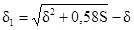
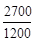
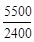
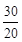
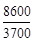
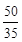
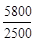
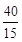
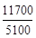
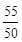

ЦЕНТРАЛЬНЫЙ
НАУЧНО-ИССЛЕДОВАТЕЛЬСКИЙ И ПРОЕКТНЫЙ
ИНСТИТУТ ТИПОВОГО И ЭКСПЕРИМЕНТАЛЬНОГО
ПРОЕКТИРОВАНИЯ КОМПЛЕКСОВ И ЗДАНИЙ КУЛЬТУРЫ,
СПОРТА И УПРАВЛЕНИЯ им. Б.С. МЕЗЕНЦЕВА
(ЦНИИЭП им. Мезенцева) ГОСКОМАРХИТЕКТУРЫ
Справочное пособие к СНиП
СЕРИЯ ОСНОВАНА В 1989 ГОДУ
Проектирование спортивных
залов, помещений для
физкультурно-оздоровительных занятий
и крытых катков с искусственным льдом
Рекомендовано к изданию решением научно-технического совета ЦНИИЭП им. Мезенцева Госкомархитектуры.
Редактор Э. И. Федотова.
Разработано к СНиП 2.08.02-89 «Общественные здания и сооружения». Изложены строительные и технологические вопросы проектирования спортивных корпусов с залами для занятий различными видами спорта.
Для инженерно-технических работников проектных и строительных организаций и архитекторов.
В справочном пособии изложены прогрессивные строительные и технологические решения по проектированию спортивных корпусов с залами для акробатики, бадминтона, баскетбола, бокса, борьбы (классической, вольной, самбо, дзю-до), волейбола, гандбола, легкой атлетики, спортивной и художественной гимнастики, тенниса, настольного тенниса, тяжелой атлетики, фехтования, футбола, крытых катков с искусственным льдом, а также помещений для физкультурно-оздоровительных занятий населения.
Проектирование спортивных корпусов с залами и (или) крытыми катками, предназначаемыми для сборных команд СССР и олимпийского резерва, осуществляется по специальным заданиям Госкомспорта СССР; при этом возможны отклонения от рекомендаций, приведенных в настоящем пособии.
Разработано ЦНИИЭП им. Б.С. Мезенцева (инженеры А.П. Голубинский, И.С. Швейцер, кандидаты архитектуры Е.М. Лось, Н.Б. Мезенцева, М.Р. Савченко, Н.С. Стригалева, Г.И. Быкова, А.В. Егерев, архит. В.П. Румянцева, инженеры А.И. Зуйков, Н.А. Смирнова, В.А. Солдатов, В.В. Филиппов, В.Б. Штрейнбрехт). При участии Союзспортпроекта (канд. техн. наук Б.Л. Беленький инж. Ю.В. Прокудин) и МИСИ им. Куйбышева (д-р техн. наук В.В. Холщевников, канд. техн. наук А.Н. Овсянников).
1.1. Включение в состав спортивных сооружений общежитий или гостиниц для иногородних участников соревнований или учебно-тренировочных сборов, их вместимость и категория определяются заданием на проектирование.
Гостиницы рекомендуется предусматривать в случаях, когда возможно использование их в период межсезонья на нужды населенного пункта.
Для живущих в общежитии предусматривается столовая с обеденным залом на 50 % проживающих.
Проектирование общежитий или гостиниц, входящих в состав спортивных сооружений, осуществляется с учетом соответствующих норм; при этом в общежитиях рекомендуется устройство блоков из двух жилых комнат на 2 - 3 человека каждая с общим для обеих комнат санитарным узлом с умывальником, душем и унитазом.
1.2. При включении в состав здания со спортивными залами (катками) административных помещений советов ДСО, спортивных школ, музеев спорта, клубов мастеров спорта и других помещений, не предназначаемых для спортивных занятий, состав и площади этих помещений определяются заданием на проектирование.
1.3. В прил. 1 приведены термины и их определения.
2.1. На участке сооружения покрытие проездов принимается в соответствии с требованиями СНиП 2.05.02-85, предъявляемыми к дорожным одеждам капитального или облегченного типа.
Отдельные дорожки для безопасного движения инвалидов на креслах-колясках, ведущие к спортивно-демонстрационным или спортивно-зрелищным сооружениям, предусматриваются шириной не менее 1,2 м, а их покрытие принимается в соответствии с требованиями СНиП 2.05.02-85, предъявляемыми к покрытиям велосипедных дорожек. Тип покрытия пешеходных дорожек произволен.
2.2. Ширина путей движения зрителей по территории сооружения принимается из расчета не менее 1 м на 500 зрителей.
2.3. У входов для зрителей в здания спортивных залов и крытых катков для облегчения процесса входа и выхода зрителей предусматриваются свободные площади из расчета 0,3 м2 на одного зрителя, приходящегося на данный вход. Определение формы плана свободной площади приводится на рис. 1.
Рис. 1. Определение формы плана свободной площади у наружных входов-выходов зрителей из спортивных корпусов
h = 1,73d1; 
3.1. Спортивные залы и катки в зависимости от назначения могут быть: специализированными или универсальными; с местами для зрителей или без них; спортивно-демонстрационными и спортивно-зрелищными. Назначение зала (катка) определяется в задании на проектирование. В зданиях спортивно-демонстрационных и спортивно-зрелищных залов и катков для обеспечения использования этих сооружений инвалидами, передвигающимися на креслах-колясках, предусматриваются мероприятия, применительно к приведенным в Типовой инструкции, утвержденной Госкомархитектурой приказом. № 187 от 30 июня 1988 г., и пп. 2.1 и 3.48 настоящего Пособия.
3.2. Строительные размеры и пропускная способность катков и специализированных спортивных залов (кроме залов для легкой атлетики), а также размеры и пропускная способность арен для проведения соревнований по этим видам в спортивно-демонстрационных или спортивно-зрелищных залах принимаются по табл. 1.
Таблица 1
|
Строительные размеры зала, м |
Пропускная способность |
Размеры арены для соревнований в спортивно-демонстрационном или спортивно-зрелищном зале, м |
|||||||||
|
длина |
ширина |
высота до низа выступающих конструкций |
при учебно-тренировочных занятиях в зале, чел./смену |
при соревнованиях на аренах спортивно-демонстрационных или спортивно-зрелищных залов, чел. |
длина |
ширина |
минимальная высота (в пределах площади арены) |
||||
|
1 |
2 |
3 |
4 |
5 |
6 |
7 |
8 |
9 |
|||
|
Спортивные залы |
|||||||||||
|
1. Акробатика |
36 |
18 |
6 |
32 |
75 |
44 |
21 |
7 |
|||
|
2. Бадминтон. На одну площадку |
15 |
9* |
7 |
8 |
8 |
15 |
8 |
7 |
|||
|
3. Баскетбол. На одну площадку |
30 |
18 |
7 |
24 |
48 (4 команды по 12) |
34 |
19 |
7 |
|||
|
4. Бокс. На один ринг |
18 |
12 |
4 |
17 |
20 |
14 |
14 |
5 |
|||
|
5. Борьба: |
|
|
|
|
|
|
|
|
|||
|
классическая, вольная, самбо, дзюдо. На один ковер «татами» |
24 |
15 |
4 |
16 |
20 |
18*2 |
18 |
5 |
|||
|
|
|
|
|
(На один ковер диаметром 9 м) |
|||||||
|
24 |
15 |
4 |
30 |
20 |
20*3 |
20 |
5 |
||||
|
6. Волейбол. На одну площадку |
24 |
15 |
8 |
24 |
48 (4 команды по 12) |
36 |
21 |
12,5 |
|||
|
7. Гандбол. На одну площадку |
42 |
24 |
6 |
24 |
48 (4 команды по 12) |
48 |
26 |
6 |
|||
|
8. Гимнастика спортивная |
36 |
18 |
6 |
60 |
75 |
48 |
24 |
7 |
|||
|
9. Гимнастика художественная. На одну площадку |
21 |
15 |
8 |
10 |
50 |
31 |
18 |
9 |
|||
|
10. Теннис. На одну площадку |
36 |
18* |
8 |
12*4 |
8 |
42 |
22 |
9 |
|||
|
11. Теннис настольный. На три стола |
15 |
9 |
4 |
12 |
8 |
12 - 14 |
6 - 7 |
5 |
|||
|
|
|
|
|
(на каждый стол) |
(на каждый стол) |
|
|||||
|
12. Тяжелая атлетика. На четыре помоста |
18 |
9 |
4 |
11 |
40 |
13 |
13 |
5 |
|||
|
|
|
|
|
(на один помост) |
(на один помост) |
|
|||||
|
13. Фехтование. На четыре дорожки |
24 |
18 |
4 |
20 |
10 |
18 |
8 |
5 |
|||
|
|
|
|
|
(на каждую дорожку) |
|
||||||
|
14. Футбол. На одно поле |
96 |
48 |
15 |
60 |
64 (4 команды по 16) |
96 |
48 |
15 |
|||
|
Залы крытых катков |
|||||||||||
|
15. Фигурное катание на коньках |
66 |
36 |
6 |
50 |
50 |
65 |
36 |
12 |
|||
|
Рабочая площадь льда (61´30) |
|
|
|
|
|
||||||
|
16. Хоккей |
То же |
50 |
100 (4 команды по 25) |
65 |
46 |
12 |
|||||
* При размещении в зале двух и более площадок ширина двух смежных (по длине) площадок может быть принята 15,1 м для бадминтона и 34 м для тенниса.
*2 При двух коврах диаметром 9 м длина принимается 32 м, при трех - 46 м, при четырех - 60 м, а пропускная способность соответственно 40, 60 и 80 чел.
*3 При двух «татами» длина принимается 36 м, при трех - 52 м, при четырех - 68 м, а пропускная способность соответственно 40, 60 и 80 чел.
*4 При трех и более площадках в одном зале пропускная способность каждой принимается 6 чел. в смену.
Примечания: 1. При проектировании спортивных залов на несколько площадок для игр и (или) на большее количество оборудования размеры залов и их пропускная способность в смену соответственно увеличиваются.
2. По видам спорта, по которым в спортивно-демонстрационных или спортивно-зрелищных залах предусматривается также и проведение учебно-тренировочных занятий, пропускная способность принимается по наибольшему из показателей, приведенных в гр. 5 и 6.
3. При предназначении зала для соревнований не выше областного (краевого) масштаба размер площади арены и высота, как правило, принимаются равными размеру площади и высоте спортивного зала (см. гр. 2, 3 и 4), а пропускная способность - согласно гр. 5.
4. Поскольку в зданиях спортивных корпусов предусматривается помещение для индивидуальной силовой подготовки (см. п. 3.7) в залах для бокса и борьбы размещение тренажеров и другого вспомогательного оборудования для физической подготовки не рекомендуется. В этих случаях размер зала бокса уменьшается до 15´12 м, а пропускная способность - до 14 чел/смену. В зале для борьбы, приведенном в таблице, могут разместиться для учебно-тренировочных занятий начинающих и борцов младших разрядов два спаренных ковра диаметром 7 м или один ковер оптимального диаметра 9 м.
При выносе из зала вспомогательного оборудования размер зала с ковром диаметром 9 м уменьшается до 18´15 м с пропускной способностью 12 чел., а со спаренными коврами диаметром 7 м - до 24´12 м с пропускной способностью 13 чел/смену. В последнем случае стены зала у ковров до высоты 1,8 м должны иметь мягкую обивку.
5. При проведении одновременных занятий мужчин и женщин место для вольных упражнений предусматривается общим (в зале для спортивной гимнастики).
6. В залах для настольного тенниса при большем числе столов размер зала принимается исходя из площади 7,75´4,5 м на каждый стол.
7. В залах для фехтования при ином числе дорожек ширина зала при учебно-тренировочных занятиях принимается исходя из расчета 5 м на одну дорожку плюс по 4 м на каждую дорожку сверх первой, а пропускная способность принимается из расчета 5 чел. на каждую дорожку.
8. В соответствии с установкой Госкомспорта СССР допускается увеличение размера площади зала (арены) для футбола, но не более чем до 113´72 м, без изменения приведенной в таблице пропускной способности.
9. В спортивно-демонстрационных и спортивно-зрелищных залах и крытых катках, в соответствии с расчетной высотой трибуны высота зального помещения (по крайней мере, над трибуной) по сравнению с приведенной в таблице может увеличиваться исходя из того, что расстояние от пола последнего ряда трибуны до выступающих конструкций потолка принимается не менее 2,2 м. Минимальная высота зального помещения, требуемая для представлений «цирк на эстраде» (считая от поверхности эстрады) - 10 м.
3.3. Строительные размеры универсальных спортивных залов (катков) принимаются по наибольшему из показателей для этих видов, приведенных в табл. 1, а пропускная способность - по наименьшей удельной площади, приходящейся на одного занимающегося, что определяется следующим образом:
а) в специализированных по видам спорта залах (катках) определяется удельная площадь, приходящаяся на одного занимающегося, для чего площадь зала (катка) для данного вида делится на его пропускную способность;
б) пропускная способность универсального зала (катка) определяется путем деления его площади на минимальную удельную площадь, полученную по п. 3.3, а.
Так, например, расчет пропускной способности спортивного зала размером 42´24 м (1008 м2), предназначенного для учебно-тренировочных занятий по бадминтону, волейболу, баскетболу, теннису и гандболу, производится следующим образом:
а) берем из табл. 1 размеры и пропускную способность залов, специализированных для каждого из этих видов, и определяем площадь на одного занимающегося: бадминтоном - 15´9 м - делим площадь на 8 и получаем площадь 17 м2; волейболом - 24´15 м - делим площадь на 24 и получаем площадь 15 м2; баскетболом - 30´18 м - делим площадь на 24 и получаем площадь 22 м2; теннисом - 36´18 м - делим площадь на 12 и получаем площадь 54 м2; гандболом - 42´24 м - делим на 24 и получаем площадь 42 м2.
В результате получается, что наименьшей является удельная площадь равная 15 м2;
б) пропускная способность универсального зала определяется делением его площади (1008 м2) на минимальную удельную площадь (15 м2) - 1008 : 15 = 67 чел/смену.
3.4. Спортивно-демонстрационные и спортивно-зрелищные залы и катки проектируются, как правило, универсальными: с ареной, трансформируемой для попеременного проведения соревнований по нескольким видам спорта или нескольким видам культурно-зрелищных или общественных мероприятий.
В прил. 2 приведены примеры планов трансформации арен спортивно-демонстрационного или спортивно-зрелищного катка для проведения соревнований по ряду видов спорта. При этом соревнования по спортивной гимнастике, художественной гимнастике, акробатике, борьбе (классической, вольной, самбо и дзюдо) и боксу проводятся на помостах, а соревнования по волейболу, баскетболу, гандболу, теннису и мини-футболу - на настилах. При проведении соревнований по ручным спортивным играм в спортивно-демонстрационных или спортивно-зрелищных залах с деревянными полами настилы не применяются.
3.5. В спортивно-зрелищных залах и катках для проведения культурно зрелищных и общественных мероприятий предусматривается устройство (как правило, сборно-разборной) эстрады. Размер эстрады (включая зону накопления артистов) рекомендуется принимать, как правило, 18´14 м в залах с ареной менее 65´26 м и 24´18 м в залах с ареной 65´36 м и более. На рис. 4 прил. 2 приведены варианты размещения эстрады на арене спортивно-зрелищного катка. Выбор варианта определяется исходя из возможности максимального использования стационарных мест для зрителей, находящихся в пределах горизонтального угла a = 120° и допустимого расстояния до эстрады, принимаемого равным 40 м. За пределами эстрады (сзади или по бокам) желательно предусматривать свободную площадь шириной не менее 3 м. Эстрада оборудуется двумя-шестью попланными занавесами.
3.6. В зданиях спортивно-демонстрационных и спортивно-зрелищных залов (кроме залов для легкой атлетики) и катков, исходя из их универсального использования для соревнований по многим видам спорта для разминки соревнующихся предусматривается зал, размещаемый в удобной связи с ареной. Все время, когда на сооружении не проводятся соревнования, этот зал рекомендуется автономно использовать для учебно-тренировочных занятий по спортивным играм, в связи с чем при нем предусматриваются раздевальные с душевыми и уборными при них. Размеры залов рекомендуется принимать:
30´18 м (для бадминтона, волейбола, баскетбола) высотой 8 м пропускной способностью 36 чел/смену;
42´24 м (для бадминтона, волейбола, баскетбола, тенниса и гандбола) высотой 8 м с пропускной способностью 67 чел/смену.
Схемы планов расстановки оборудования в этих залах принимаются, как правило, по прил. 3.
3.7. В зданиях спортивных корпусов с одним или несколькими залами и в зданиях крытых катков предусматривается одно общее для всего здания помещение для индивидуальной силовой подготовки, в том числе на тренажерах, размещаемое в удобной связи с зальными помещениями и раздевальными при них. Размер помещения принимается 12´6 м в плане высотой 3 м. При пропускной способности менее 20 чел/смену размер помещения в плане может быть уменьшен до 9´4,5 м. Примерные схемы планов расстановки спортивного оборудования в этих помещениях приведены на рис. 7 прил. 3.
3.8. Спортивные залы для тяжелой и легкой атлетики, спортивной гимнастики и футбола, а также залы крытых катков с искусственным льдом, помещения для индивидуальной силовой подготовки и другие помещения, в которых предусмотрена установка помостов для занятий с тяжестями, размещаются, как правило, на первом этаже, а в залах для легкой атлетики, футбола и крытых катках, кроме того, предусматриваются ворота шириной не менее 3,5 м для въезда грузовых автомашин. При расчетной температуре наружного воздуха минус 15 °С (параметр Б) и ниже, в местах въездов в зал (каток) предусматривается устройство тамбуров или воздушно-тепловых завес.
3.9. Ограждающие и несущие конструкции, а также полы спортивных залов должны допускать возможность крепления к ним стационарного и переносного спортивного оборудования и быть рассчитаны с учетом нагрузок от него. При расчете нагрузки необходимо кроме массы оборудования учитывать также массу занимающегося, принимаемую равной 100 кг с учетом ее динамического характера.
Состав спортивного оборудования и инвентаря для оснащения спортивных залов по отдельным видам спорта и катков принимается по действующему Табелю оборудования, инвентаря и других спортивно-технологических средств для оснащения спортивных сооружений массового пользования Госкомспорта СССР.
3.10. Конструкция полов и оснований под ними в залах для футбола и легкой атлетики, а в залах катков также и конструкция охлаждающей плиты и основания под нею рассчитываются на дополнительную временную нагрузку от проезда двухосного грузового автомобиля. При расположении зала на перекрытии, расчет последнего производится на временную равномерно-распределенную расчетную нагрузку не менее 5 кПа (по наибольшей нагрузке).
Конструкция пола и расчет фундаментов в местах установки помостов для занятий с тяжестями осуществляются с учетом ударной нагрузки от штанги, падающей на помост с высоты 2,4 м; масса штанги в залах для тяжелой атлетики принимается 250 кг, а в других залах и в помещениях для индивидуальной силовой подготовки - 180 кг.
Помосты для занятий с тяжестями не должны быть связаны с полом помещения и устанавливаться на самостоятельном фундаменте. Под помост рекомендуется укладывать амортизирующее устройство. Может быть рекомендован следующий вариант установки помостов: в полу зала, в месте установки помоста, предусматривается проем; в проеме на самостоятельном фундаменте устраивается основание с ровной горизонтальной поверхностью, на которое укладывается свернутый в спираль резиновый шланг диаметром 50 мм, сверх которого ставится помост.
Применение тяжелоатлетических помостов предусматривается, как правило, заводского изготовления или выполненных по чертежам ВИСТИ - Всесоюзного научно-исследовательского и конструкторско-технологического института по спортивным изделиям (адрес: 127474, Москва, Дмитровское шоссе, 62). Вместе с тем, как показывает практика эксплуатации, при падении штанги на помост через довольно короткое время повреждается поверхность помоста, что влечет за собой необходимость замены всего дорогостоящего помоста. Исходя из этого, стандартные помосты используются, как правило, только в соревнованиях, где их применение обязательно, а для учебно-тренировочных занятий вместо установки помостов рекомендуется предусматривать специальную конструкцию пола. Эта конструкция предусматривает устройство двух бетонных колодцев, имеющих размеры (в чистоте) 2,0´0,6 м в плане и глубину 0,45 м. На дно этих колодцев укладывается два слоя деревянных брусков, а сверх них кладутся пять слоев листовой резины или резиноподобных материалов (толщиной каждого слоя 50 мм). Между внутренними стенками колодцев (расстояние составляет 0,9 м) устраивается дощатый или брусчатый пол (по лагам, устанавливаемым по бетонному подстилающему слою, укладываемому на подстилающий грунт). По обе стороны от деревянного пола, заподлицо с ним, укладывается листовая резина, которой покрываются колодцы и зона шириной по 0,75 - 1 м по обе стороны за их пределами.
3.11. Конструкции оконных переплетов и витражей спортивных залов, залов крытых катков, а также хореографических классов предусматриваются такими, чтобы обеспечивать возможность протирки стекол и проветривания через фрамуги, форточки или другие устройства.
Спортивные залы
3.12. Спортивные залы, предназначаемые в основном для учебно-тренировочных занятий, предусматриваются, как правило, специализированными. Так, например, в связи с трудоемкой трансформацией (сменой оборудования) крайне нежелательно предусматривать в одном зале учебно-тренировочные занятия по спортивным играм попеременно с занятиями по боксу, борьбе или по спортивной гимнастике. Наиболее целесообразным является сочетание в одном зале занятий по нескольким видам спортивных игр (волейболу, бадминтону, баскетболу, теннису, гандболу).
3.13. При проектировании универсальных спортивных залов размером 42´24 м и более рекомендуется предусматривать деление их с помощью подъемных, раздвижных и т.п. разделительных устройств на секции, размер каждой из которых позволяет самостоятельное проведение в них учебно-тренировочных занятий по видам спорта, требующим меньшей площади, чем площадь зала в целом.
На рис. 2, а, б, в приведены варианты деления залов на секции, а на рис. 2, г показан вариант использования всей площади зала для соревнований по гандболу. При использовании зала для соревнований по волейболу, теннису или баскетболу каждая из этих площадок располагается по одной вдоль зала.
Рис. 2. Варианты схем планов деления залов на секции (размеры в метрах)
а - план зала размером 42´24 м (или 45´24 м) с делением его на три секции для учебно-тренировочных занятий по волейболу; б - план зала размером 48´30 м при делении его на три секции для занятий по баскетболу; в - вариант деления зала 48´30 м на четыре секции для занятий по волейболу; г - план зала размером 48´30 м при использовании его площади для соревнований по гандболу с размещением зрителей на пристенных бличерных трибунах
1 - трансформируемые разделительные устройства; 2 - площадки для волейбола; 3 - площадки для баскетбола; 4 - площадка для гандбола; 5 - зона пристенных бличерных трибун для зрителей
Для более удобного использования секций возможно предусматривать при каждой из них блоки раздевальных с душевыми и санитарными узлами, а также инвентарные.
Пропускная способность зала, разделенного на секции, определяется как сумма максимальных пропускных способностей секций.
С делением зала на секции связана необходимость применения защитных мер от слепящего действия бокового естественного освещения из-за расположения площадок поперек зала. Кроме того, следует иметь в виду, что в каждой секции (особенно расположенных в центральной части зала) крепление спортивного оборудования к разделительным устройствам исключается, в связи с этим состав спортивного оборудования в каждой секции вынужденно уменьшается по сравнению с залом, имеющим размер, равный размеру секции.
3.14. Примеры схем расстановки оборудования на планах залов для учебно-тренировочных занятий по спортивной гимнастике, спортивным играм, боксу и тяжелой атлетике приведены в прил. 3.
Примечание. В связи с периодическими изменениями конструкций оборудования и табеля оборудования и инвентаря, утверждаемого Госкомспортом СССР, при конкретном проектировании необходима корректировка приведенных в Пособии материалов в соответствии с действующими чертежами и Табелем.
3.15. В спортивном корпусе с залом для тенниса при числе площадок в нем две и более рекомендуется предусматривать зальное помещение размером 18´12 м, высотой 6 м с тренировочной стенкой высотой не менее 3 м. Пропускная способность помещения - 4 чел/смену.
3.16. Залы для легкой атлетики предназначаются как для соревнований, так и для учебно-тренировочных занятий. Предназначение только для учебно-тренировочных занятий (без мест для зрителей) может предусматриваться, как правило, только при наличии в данном населенном пункте зала для легкой атлетики с местами для зрителей.
Высота залов для легкой атлетики (до низа выступающих конструкций) принимается в залах со стационарными трибунами для зрителей не менее 9 м (см. также примеч. 2 к табл. 1), а в залах, предназначенных для учебно-тренировочных занятий, - 9 м. В зависимости от конструктивного решения покрытия зала высота над беговыми дорожками может быть уменьшена до 4 м, а над местами для прыжков в высоту, в длину и для тройного прыжка - до 5 м.
Размеры залов для легкой атлетики в плане определяются в зависимости от параметров дорожек для бега по кругу и по прямой и числа мест для отдельных видов легкой атлетики, принятых в задании на проектирование; при этом предусматривается не менее чем по одному месту для прыжков в длину (тройного прыжка), в высоту и с шестом, толкания ядра и по возможности места для учебных метаний копья и диска в устройство для задержки летящих снарядов.
Размеры этих мест и их пропускная способность приведены в прил. 4.
3.17. Дорожка для бега по кругу представляет собой замкнутый контур, состоящий из двух параллельных равной длины прямых отрезков, плавно соединенных двумя одинаковыми поворотами (рис. 3).
Рис. 3. Варианты планов легкоатлетических дорожек для бега по кругу в залах
I - сопряжение поворотов с прямыми участками осуществляется с помощью переходной кривой; II - весь поворот выполнен одним радиусом
а - прямой отрезок; б - часть виража, имеющая переменный уклон (на схеме I - включает участок переходной кривой); в - часть виража, имеющая постоянный (максимальный) уклон; ф - линия финиша; a - центральный угол поворота, в пределах которого вираж имеет одинаковый уклон
Повороты могут описываться одним радиусом (рис. 3, б) или сопряжение поворотов с прямыми отрезками осуществляется с помощью переходной кривой (рис. 3, а), что является оптимальным; допускаются многоцентровые повороты.
Радиусы одноцентровых поворотов принимаются не менее 11 и не более 20 м. При сопряжении поворотов с прямыми отрезками с помощью переходной кривой или при многоцентровых поворотах длина прямых отрезков должна быть не менее 35 м; при этом длина участков поворотов, имеющих кривизну, описанную радиусом 25,6 м и более, относится к расчетной длине прямого отрезка. Дорожки длиной 166,67 м рекомендуется проектировать с одноцентровыми поворотами. По всей длине поворотов дорожки для бега по кругу должны устраиваться виражи, имеющие в самой крутой части уклон не менее 10° и не более 18° с уменьшением уклона на 53 на каждый 1 м увеличения радиуса поворота в пределах центрального угла a, где уклон выполняется постоянным. Величину угла a рекомендуется принимать 125 - 135° при сопряжении поворотов с прямыми отрезками с помощью переходной кривой и 50 - 60° - при одноцентровых поворотах. Устраивать переменный уклон на всем протяжении виража не рекомендуется.
Стационарные виражи выполняются, как правило, бетонными. По внутреннему периметру дорожки для бега по кругу устраивается стационарная или съемная бровка из твердого материала, выступающая на 5 см над поверхностью дорожки и имеющая ширину не более 5 см. Верхний край бровки должен быть закруглен и лежать в одной горизонтальной плоскости. В качестве съемной бровки могут применяться устанавливаемые на обозначенную на месте бровки линию шириной 5 см флажки размером около 0,25´0,2 м на древках, наклоненных внутрь круга под углом 60° (древко должно выступать над поверхностью дорожки на 0,3 м) на расстоянии не далее чем через 4 м друг от друга, вместо флажков на линию можно устанавливать конусы высотой не менее 0,3 м. Рекомендуется предусматривать замену бровки установкой флажков или конусов описанных выше.
Расчетная длина дорожки для бега по кругу в соответствии с правилами соревнований по легкой атлетике, утвержденными Госкомспортом СССР, должна быть не более 200 м. В залах, предназначаемых для учебно-тренировочных занятий и соревнований, оптимальной является длина 200 м, а в залах, предназначаемых только для учебно-тренировочных занятий, рекомендуется длина 166,67 м. Расчетная длина считается по условной «линии измерения», отстоящей на расстоянии 0,3 м от внешней грани материальной бровки (или ее заменителей), окаймляющей внутренний периметр дорожки и входящей в размер радиуса поворота (но не в ширину дорожки).
Линия финиша в беге принимается, как правило, общей для всех дистанций и размещается в месте сопряжения прямого отрезка с поворотом.
На дорожке для бега по кругу при соревнованиях размещаются не менее четырех и не более шести отдельных дорожек шириной от 0,9 до 1,1 м каждая. В залах, предназначаемых только для учебно-тренировочных занятий, число отдельных дорожек для бега по кругу может быть сокращено до двух.
По наружной границе дорожки для бега по кругу на виражах устанавливается ограждение высотой 1,1 м из фанеры, досок или оргстекла. Поверхность ограждения, обращенная к дорожке, гладкая, без выступов или щелей.
Пропускная способность дорожки для бега по кругу принимается из расчета 8 чел/смену на каждую отдельную дорожку при ее длине 200 и 6 чел/смену при меньшей длине.
3.18. Длина дорожки для бега по прямой состоит из длины собственно дистанции бега, пространства до линии старта (длиной, как правило, 3 м, но не менее 1,5 м) и пространства после линии финиша (длиной не менее 15 м). В последнем случае при невозможности обеспечить требуемое пространство после финиша рекомендуется предусматривать устройство мягких упоров (например, обивка стены на этом участке матами), гарантирующих безопасность для занимающихся.
Для бега по прямой дорожка предусматривается, как правило, исходя из дистанции 60 м. При возможности предусматривают дорожку для бега на дистанции 100 и 110 м.
На дорожке для бега по прямой на соревнованиях размещаются не менее шести и не более восьми отдельных дорожек шириной 1,25 м каждая.
Дорожку для бега по прямой можно размещать снаружи контура дорожки для бега по кругу или внутри его. Однако желательно размещать ее снаружи контура дорожки для бега по кругу, что позволяет пользование ею как при соревнованиях, так и при учебно-тренировочных занятиях, независимо от использования и расположения мест для легкоатлетических прыжков и толкания ядра.
При расположении дорожки для бега по прямой внутри контура дорожки для бега по кругу она может использоваться только во время соревнований, а длина ее должна предусматривать проведение бега только на дистанции до 60 м (при длине круговой дорожки 200 м) или 50 м (при длине круговой дорожки 166,67 м). Для возможности проведения учебно-тренировочных занятий в беге по прямой в этих случаях рекомендуется дополнительно предусматривать дорожку для бега по прямой, которая может быть вынесена за пределы пролета зала, число отдельных дорожек на ней может быть уменьшено до двух-трех, а высота потолка снижена до 4 м.
Линия финиша бега по прямой в залах для легкой атлетики со стационарными трибунами размещается, как правило, на продолжении линии финиша в беге по кругу, что позволяет из судейской ложи (см. п. 3.48 и рис. 9) принимать всех бегунов, не переходя от одной линии финиша к другой. При реконструкции существующих помещений и предназначении их для соревнований ниже республиканского масштаба или только для учебно-тренировочных занятий допускаются, по согласованию с соответствующими комитетами по физической культуре и спорту, отдельные отступления от приведенных выше параметров беговых дорожек.
Пропускная способность дорожки для бега по прямой (независимо от длины дистанции) определяется из расчета 4 чел/смену на каждую отдельную дорожку.
Общая пропускная способность в смену залов для легкой атлетики принимается как сумма пропускной способности беговых дорожек для бега по прямой, по кругу и мест для отдельных видов легкой атлетики, не совмещающихся друг с другом и могущих использоваться одновременно.
Примеры схем планов залов для легкой атлетики приведены в прил. 5.
3.19. В составе зданий спортивно-демонстрационных залов для легкой атлетики для разминки перед соревнованиями предусматривается, как правило, помещение шириной не менее 6 м (в строительных осях), высотой не менее 4 м и длиной, как правило, равной длине зала, но не менее 78 м. Это помещение размещается в удобной связи с раздевальными для соревнующихся и с ареной.
3.20. Полы в спортивных залах в зависимости от назначения последних по виду спорта могут быть деревянными или иметь синтетическое покрытие.
Если основание пола устраивается на грунте, то предусматриваются полное удаление растительного слоя и мероприятия для исключения деформаций в виде просадок и выпучиваний, а также капиллярного подсоса влаги под покрытия.
3.21. Деревянные полы рекомендуется устраивать, как правило, во всех спортивных залах (кроме залов для легкой атлетики и футбола) и предусматривать двух типов: I - из доски толщиной 37 мм (в острожке) и II - из бруска сечением 60´60 мм. Полы типа II могут выполняться из двух слоев с прокладкой между слоями бумаги или пергамина.
Конструкции пола с деревянным покрытием тип I и II приведены на рис. 4.
Рис. 4. Схемы конструкций деревянных полов (размеры в миллиметрах) Тип I - дощатый; тип II - из бруска
а - на грунте; б - на перекрытии
1 - деревянное покрытие; 2 - лага; 3 - прокладка длиной 200-250 мм; 4 - два слоя толя; 5 - кирпичный столбик на цементно-песчаном растворе; 6 - подстилающий слой; 7 - грунт основания; 8 - выравнивающая цементно-песчаная стяжка; 9 - плита перекрытия с неровной поверхностью; 10 - связи между лагами; 11 - плита перекрытия с тонкой поверхностью
Примечание. Пролет лаг (расстояние между осями столбиков) при устройстве полов типа I «а» принимается 0,8 - 0,9 м
Деревянные полы II типа предусматриваются в залах для спортивной гимнастики в связи с тем, что:
типовые закладные детали для крепления гимнастических снарядов крепятся в полу с помощью шурупов длиной 50 мм, и надежность крепления обеспечивается, если шурупы полностью находятся в теле покрытия пола;
при занятиях на гимнастических снарядах пол зала (через закладные детали) испытывает большие усилия в местах крепления снарядов, поэтому между лагами предусматриваются связи, устанавливаемые в шахматном порядке с шагом 2,5 м.
При устройстве деревянных полов следует иметь в виду следующее:
а) доски и бруски выбирают с возможно меньшим количеством сучков, удаление которых необходимо осуществлять высверливанием их и закладкой деревянных пробок;
б) доски и бруски укладывают вдоль зала, а их стыки устраивают вразбежку и опирают на лаги;
в) крепят доски (бруски) к лагам гвоздями и обязательно косым забоем.
В тех случаях, когда зал располагается на втором этаже и под ним находятся вспомогательные помещения с постоянным пребыванием людей в них, рекомендуется предусматривать звукоизоляцию.
В частности, устраивать под лагами пола звукоизоляционные ленточные прокладки (рис. 5):
минераловатные маты толщиной 40 - 50 мм прошитые в бумаге;
минераловатные маты толщиной 30 - 40 мм на синтетической связке;
простеганные стекловолокнистые маты толщиной 30 - 40 мм;
минеральные и стекловолокнистые плиты толщиной 40 - 50 мм на синтетической связке;
древесно-волокнистые изоляционные плиты толщиной 16 - 20 мм.
Рис. 5. Схема конструкции дощатого пола с устройством звукоизоляции (размеры в миллиметрах)
1 - деревянное покрытие; 2 - лага; 3 - звукоизоляционные прокладки; 4 - выравнивающая цементно-песчаная стяжка; 5 - плита перекрытия с неровной поверхностью
3.22. К синтетическим покрытиям, применяемым для полов спортивных залов, относятся рекомендованные Госкомспортом СССР и допущенные органами Минздрава СССР:
резиноподобные материалы заводского изготовления типа «Рездор», «Арман», «Олимпия» и другие, выпускаемые в виде плит или листов толщиной не менее 13 мм;
типа «Регупол», выпускаемого в виде рулонов шириной 1,25 м и длиной до 40 - 45 м;
наливные самоотверждающиеся типа «Тартан», на основе полиуретана и жидких каучуков холодного отверждения.
Конструкция пола с синтетическим покрытием приведена на рис. 6.
Рис. 6. Схема конструкции пола с синтетическим покрытием (размеры в миллиметрах)
а - на грунте; б - на перекрытии
1 - синтетическое покрытие; 2 - мелкозернистый асфальтобетон; 3 - крупнозернистый асфальтобетон (биндер); 4 - щебеночное основание; 5 - грунт основания; 6 - стяжка из цементно-песчаного раствора; 7 - плита перекрытия с ровной поверхностью
Синтетические покрытия выполняются в один или два слоя по бетонному или асфальтобетонному основанию.
В залах для легкой атлетики наиболее целесообразно применять или резиноподобные материалы, или двухслойные покрытия с верхним наливным слоем общей толщиной 16 мм; при этом, в местах отталкивания в прыжках в высоту, с шестом и в тройном прыжке рекомендуется наливное покрытие устраивать на всю толщину. В секторе для приземления ядра укладывают резиноподобные материалы толщиной не менее 30 мм. На стационарных бетонных виражах дорожки для бега по кругу по поверхности бетона предусматривается устройство наливного самоотверждающегося покрытия. При съемных виражах (или их части) покрытие наносится на деревянные щиты, укладываемые на металлический каркас.
В залах для футбола рекомендуется покрытие из синтетической травы, однако могут применяться и двухслойные покрытия, применяемые для легкой атлетики.
Синтетические покрытия могут применять и в других спортивных залах. Для них рекомендуется двухслойное покрытие из регупола с верхним наливным слоем.
Резиноподобные материалы выпускаются многими заводами резинотехнических изделий. Укладка их и наливных самоотверждающихся покрытий выполняется централизованно специализированными организациями системы Госкомспорта СССР.
3.23. Закладные детали для крепления оборудования, врезаемые в полы залов, устанавливают заподлицо с поверхностью пола.
3.24. В залах для легкой атлетики для приземления в прыжках в длину и тройном прыжке в полу предусматривается яма (ямы) с песком, поверхность которого предусматривается на одном уровне с поверхностью дорожки для разбега; в полу залов для спортивной гимнастики у гимнастических снарядов предусматриваются ямы для приземления с мягким наполнителем. В универсальных залах для спортивной гимнастики и спортивных игр, а также при вынужденном размещении зала для спортивной гимнастики не на первом этаже ямы у гимнастических снарядов могут не предусматриваться.
Размеры ям для приземления в прыжках в длину и тройном прыжке приведены на рис. 1 прил. 5. Размеры ям у гимнастических снарядов следующие: под перекладиной и под женскими брусьями - 11 - 12 м в длину и 2,5 - 3 м в ширину; для опорных прыжков - длиной 5 м и шириной 2,5 - 3 м. Глубина ям - 1,1 - 1,5 м. Возможно устройство ямы под батутом. В этом случае сетка батута располагается на отметке пола зала. Длина ямы под батутом 5,53, ширина 3,23 м, глубина принимается равной высоте конструкции батута. Ямы закрывают щитами заподлицо с полом зала, а в открытом виде их края обкладывают съемными мягкими бортами. В качестве мягкого заполнителя в ямах у гимнастических снарядов применяют, как правило, обрезки поролона.
3.25. Проектирование универсальных залов для учебно-тренировочных занятий по спортивной гимнастике попеременно со спортивными играми не рекомендуется. При необходимости такого сочетания (исходя из плана, приведенного на рис. 1 прил. 3) для вольных гимнастических упражнений вместо настила предусматривается ковер, гимнастические стенки устанавливаются в основном на продольных стенах зала, число канатов для лазания, предусматриваемых как для гимнастов, так и для игровиков, не суммируется и они устанавливаются в одном и том же месте, батут (переносной, складной) предусматривается напольным (а не в яме), а зеркала либо не предусматриваются вообще, либо надежно защищаются от удара мяча. Кроме того, площадь инвентарной принимается исходя из необходимости полного освобождения площади зала от гимнастического оборудования во время занятий по спортивным играм.
3.26. В залах для спортивных игр с мячом на окнах и осветительных приборах предусматриваются защитные устройства.
3.27. В залах для спортивных игр (в том числе универсальных) внутренняя поверхность стен на высоту не менее 1,8 м предусматривается вертикальной без выступов или ниш. Если все же в пределах этой высоты конструкции выступают из плоскости стен, то между ними рекомендуется размещать спортивное оборудование (гимнастические стенки и т.п.) или приборы отопления так, чтобы их поверхность, обращенная в зал, была бы заподлицо с поверхностью этих конструкций; или между выступающими из плоскости стен конструкциями (пилястрами, колоннами) предусматриваются экраны на высоту не менее 1,8 м, защищающие занимающихся от возможных травм.
Конструкция экранов на отопительных приборах выполняется так, чтобы не снижать функциональных качеств отопительной системы.
Наличники дверей залов для спортивных игр выполняются заподлицо со стенкой зала.
3.28. Стены и потолки спортивных залов окрашивают в светлые тона, а материал стен и их окраску предусматривают такими, чтобы можно было проводить влажную уборку; в залах для спортивных игр стены и потолок, кроме того, предусматриваются устойчивыми к ударам мяча.
Допускается отделка стен облицовочным кирпичом с расшивкой швов вовнутрь.
3.29. В спортивных залах для учебно-тренировочных занятий, встроенных в здания другого назначения или в подтрибунное пространство, или собираемых из легких металлических конструкций, допускается наличие колонн, если в соответствии с расстановкой технологического оборудования и разметкой они оказываются в нерабочих зонах и при соблюдении зон безопасности.
Катки с искусственным льдом
3.30. Крытые катки с искусственным льдом предусматриваются, как правило, универсальными - для попеременного использования по хоккею и фигурному катанию на коньках.
3.31. В составе зданий спортивно-демонстрационных, спортивно-зрелищных и учебно-тренировочных катков для обеспечения учебно-тренировочного процесса предусматриваются общие для здания помещения для индивидуальной силовой и акробатической подготовки размером 12´6 м, высотой не менее 3 и 6 м соответственно и один хореографический класс размером 12´12 м (в плане), высотой не менее 4,8 м. Для возможности автономного его использования при нем предусматриваются отдельные раздевальные (с душевыми и уборными при них), исходя из пропускной способности класса 30 чел/смену. Примерные схемы плана расстановки оборудования в помещениях для индивидуальной, силовой и акробатической подготовки и в хореографическом классе приведены на рис. 7, 8 и 9 прил. 3.
Примечание. При размещении батутного полотна на уровне пола помещения высота помещения может быть уменьшена до 5 м.
3.32. При вместимости спортивно-демонстрационного или спортивно-зрелищного катка более 2 тыс. зрителей (не считая мест в партере) рекомендуется дополнительно предусматривать устройство крытого катка для учебно-тренировочных занятий по фигурному катанию на коньках и хоккею с размером рабочей площади льда 61´30 м. Для автономной работы этого катка при нем предусматриваются отдельные раздевальные (с душевыми и уборными при них) исходя из пропускной способности в смену, приведенной в табл. 1.
При наличии учебно-тренировочного катка расположение помещений для индивидуальной силовой и акробатической подготовки, а также хореографического класса рекомендуется в удобной связи с учебно-тренировочным катком.
3.33. Для выступления балета на льду размер ледяной площадки принимается 45´24 м. Эта площадка может располагаться как вдоль арены для хоккея, так и поперек нее (симметрично короткой оси). В последнем случае за пределами площади поля для хоккея вплотную к нему предусматривается дополнительная ледяная площадка длиной 24 м (по 12 м в обе стороны от короткой оси арены) и шириной 15 м (см. рис. 3,б прил. 2). Такой вариант создает при односторонней или серповидной трибуне наилучшие (фронтальные) условия наблюдения за представлением. Кроме того, когда нет выступлений балета, дополнительная площадка (24´15 м) может автономно использоваться для занятий фигуристов по отработке отдельных элементов с пропускной способностью, определяемой исходя из 25 м2 площади льда на одного занимающегося.
3.34. В зданиях крытых катков с искусственным льдом, предназначаемых для фигурного катания на коньках (в том числе универсальных), рекомендуется дополнительно предусматривать учебную ледяную площадку размером 30´20 м для отработки отдельных элементов фигурного катания. В спортивно-зрелищных катках, в которых площадка для выступлений на льду располагается поперек поля для хоккея, учебная площадка для фигурного катания не предусматривается.
3.35. Схема конструкции охлаждающей плиты и основания под ней на крытых катках с искусственным льдом приведена на рис. 7.
Рис. 7. Схема конструкции охлаждающей плиты и основания под ней
1 - охлаждающая плита с забетонированными в нее холодильными трубами; 2 - защитная цементная стяжка; 3 - слой скольжения; 4 - выравнивающая цементная стяжка; 5 - слой гидроизоляции; 6 - слой теплоизоляции; 7 - слой гидроизоляции; 8 - выравнивающая цементная стяжка; 9 - железобетонная плита; 10 - подстилающий грунт
Охлаждающая плита выполняется из морозостойкого бетона марки F 75 и класса по прочности на сжатие В 12,5. Толщина плиты - не более 140 мм.
Укладка охлаждающей плиты на просадочные или пучинистые грунты не допускается.
Для циркуляции хладоносителя применяются цельнотянутые трубы. Толщина защитного слоя бетона над трубами до поверхности плиты - 30 мм. Сечение труб и расстояние между ними определяются по расчету.
Слой скольжения состоит из защитных ограждений (рубероид, алюминиевая фольга, листовой поливинилхлорид) и помещенного между ними слоя (толщиной около 5 мм) из материалов, обладающих малым коэффициентом трения (порошкообразный графит, тальк, графитомасляная эмульсия).
Слой теплоизоляции определяется по расчету на теплопроводность и прочность.
Пересечение конструкции охлаждающей плиты инженерными коммуникациями (кроме холодильных труб) не допускается.
Для обеспечения одинаковой толщины льда охлаждающая плита выполняется горизонтальной, а ее поверхность ровной (зазор между рейкой длиной 3 м и поверхностью плиты в любой ее точке не более 5 мм).
За пределами размеров рабочей поверхности поля для игры в хоккей (61´30 м) может предусматриваться полоса льда для крепления бортов. Необходимость предусматривать полосу и ее ширина определяются в зависимости от выбранного типа бортов*.
* Центральным институтом типового проектирования распространяется типовой проект различных типов хоккейных бортов 319-М.
3.36. За пределами охлаждающей плиты в крытых катках устраиваются каналы для отвода воды от таяния льда. В спортивно-демонстрационных и спортивно-зрелищных крытых катках ширина канала принимается не менее 0,7 м; а объем - не менее 45 м3. В случаях, когда в канале предусмотрено устройство для ускорения растапливания льда, объем канала может быть уменьшен. Каналы перекрываются съемными щитами заподлицо с полом.
Каналы для отвода воды от таяния льда рекомендуется устраивать со сторон охлаждающей плиты, свободных от коллекторов системы холодоснабжения. В катках, предназначаемых только для учебно-тренировочных занятий, ширина и объем канала не регламентируются.
Места для зрителей
3.37. В сооружениях, предназначаемых для проведения соревнований, предусматриваются места для зрителей в виде трибун или балконов, а в спортивно-зрелищных залах и катках - и в виде партера.
3.38. Трибуны для зрителей проектируются, как правило, в стационарных конструкциях с местами для сидения; в отдельных случаях применяются трансформируемые или сборно-разборные трибуны. За последние годы в практике спортивного строительства сборно-разборные трибуны применяются крайне редко, так как их сборка и разборка трудоемки и требуют, кроме того, значительных площадей для складирования. Исходя из вышеизложенного, может быть рекомендовано применение следующих типов трансформируемых трибун:
бличеры - трибуны, состоящие из раздвигающихся секций телескопического типа;
трибуны типа партер-трибуна.
Оба вида таких трибун имеют ограниченное число рядов (как правило, в пределах 8 - 10 для сидения), и их применение в каждом отдельном случае определяется конкретным характером их использования.
Трибуна-бличер, в виде выдвигающихся секций, имеет строго фиксированное местоположение (прикрепляется к стенам зала или к стационарной трибуне с поднятым над ареной первым рядом) и поэтому может иметь ограниченное применение. Путем выдвижения различного числа отдельных секций возможно изменять вместимость этой трибуны, что может иметь практическое значение при эксплуатации сооружения.
Партер-трибуна имеет большое преимущество по сравнению с бличерами, так как она смонтирована на передвижной платформе, легко может перемещаться в любом направлении по арене, обеспечивая требуемую проектом ее трансформацию, В связи с изменяющимся углом наклона партер-трибуна может использоваться как обычный плоский партер, что очень важно при трансформации арены для проведения культурно-зрелищных и общественных мероприятий (митинг, концерт и др.), когда необходимо наличие партера.
3.39. Зонирование расположения зрительских мест на трибунах и построение профиля трибуны, а также определение местоположения наблюдаемой точки (фокуса) в зависимости от назначения зала по виду (видам) спорта приведены в прил. 6.
3.40. Для обеспечения зрительного восприятия происходящего на арене при расположении зрительских мест на балконе рекомендуется размещать на нем один ряд мест для сидения и один - для стояния из расчета 9 зрителей на 2 м балкона. Балкон устраивается, как правило, вдоль продольных стен зала и желательно так, чтобы проекция балкона оказывалась за пределами арены; балкон не должен также мешать размещению под ним спортивного оборудования.
3.41. Места для зрителей располагаются за пределами арены и эвакуационного прохода вдоль рядов зрительских мест (если эвакуация предусматривается по проходу перед первым рядом).
Трибуны для зрителей располагаются, как правило, по продольным сторонам спортивных арен; расположение трибун у торцовых сторон арены предусматривается в случаях, когда заданное число зрительских мест не может быть размещено в пределах расстояний, допустимых по видимости (см. табл. 2 прил. 6), у продольных сторон арены.
В спортивно-демонстрационных и спортивно-зрелищных залах и катках для проведения на арене мероприятий, не использующих всю площадь арены, допускается предусматривать размещение временных мест (бличеров, партер-трибуны и партера) для зрителей непосредственно на спортивной арене.
3.42. Размеры мест на трибунах:
глубина ряда на стационарных трибунах 0,8 - 0,9 м (на бличерах допускается уменьшать до 0,75 м);
ширина места для сидения - 0,45 м;
глубина сидения на стационарных трибунах - 0,4 м (на бличерах допускается уменьшать до 0,35 м);
высота сидения над уровнем пола прохода - 0,43 м.
3.43. Расчетное число зрительских мест в универсальных спортивно-зрелищных залах с устройством партера определяется как сумма мест в партере и на трибунах за вычетом мест., расположенных за пределами горизонтального угла 120° с вершиной на середине дальней стороны эстрады и на удалении от нее более 40 м. В табл. 2 приведены данные о «потере» мест на трибунах различной конфигурации при аренах наиболее распространенных размеров и при размерах эстрады, приведенных в п. 3.8. В иных случаях определение «потерь» осуществляется, руководствуясь приведенными выше величинами удаления и горизонтального угла. Если «потери» зрительских мест на трибунах при проведении эстрадных концертов и установке партера превышают принятую вместимость партера, расчет вспомогательных помещении для зрителей ведется в проекте исходя из суммарной вместимости всех трибун, но без учета вместимости партера.
|
Вместимость зала, чел. |
Процент «потерь» мест на трибуне (при концертах) |
|
|
 |
|
|
|
 |
 |
|
|
 |
 |
|
|
 |
 |
|
|
 |
 |
Примечание. Над чертой приведены данные для залов с ареной размером 65´36 м2, под чертой - с ареной 48´26 м. a - максимально допустимый горизонтальный угол, в пределах которого должны располагаться зрительские места. R - максимально допустимое удаление зрительских мест. 1 - трибуны; 2 - партер; 3 - эстрада; 4 - «потерянные» места.
3.44. Зрительские места на трибуне разделяются на блоки, по границам которых устанавливаются стационарные, как правило, металлические ограждения; высота ограждения вдоль рядов зрительских мест принимается исходя из условий видимости, а у ограждений, устанавливаемых у боковых границ блоков (поперек рядов трибуны), - 0,9 - 1,0 м.
3.45. На трибунах, пол первого ряда которых расположен выше поверхности арены более чем на 0,25 м, вдоль прохода этого ряда предусматривается устройство ограждения высотой не менее 0,8 м. В этом случае для удобства движения зрителей вдоль первого ряда рекомендуется увеличивать ширину прохода за счет увеличения глубины этого ряда до 1,1 м.
По верху и по торцам трибун, если они не примыкают к стенам спортивного зала (катка), предусматриваются ограждения высотой не менее 1,2 м.
3.46. При разнице уровня пола смежных рядов трибуны 0,3 м и более у сидений предусматривается устройство спинок, возвышающихся над полом вышерасположенного смежного ряда не менее чем на 0,12 м.
3.47. Конструкцию сидений на трибунах рекомендуется принимать консольного типа с покрытием деревом или пластмассой. Наиболее распространенный тип сидений - в виде скамьи (в том числе со спинкой). В связи с тем, что отечественная промышленность освоила изготовление штампованных пластмассовых сидений в виде отдельных кресел (без подлокотников)*, возможно, их применение, так как при этом достигается больший комфорт для зрителей.
* Сидения изготавливает завод «Карболит» в г. Орехово-Зуеве.
Применение сидений в виде кресел с подлокотниками не рекомендуется.
3.48. На стационарных трибунах и в партере спортивно-демонстрационных и спортивно-зрелищных залов и крытых катков предусматриваются места для инвалидов, передвигающихся на креслах-колясках, а при предназначении этих сооружений для соревнований республиканского и более высокого масштаба на трибунах предусматриваются, как правило, также и места для представителей прессы (ложа прессы), с которых обеспечивается хороший обзор арены.
В спортивных залах для легкой атлетики со стационарными трибунами предусматриваются места для судей (судейская ложа), размещаемые в районе общего финиша беговых дистанций.
Ложа для судей по легкой атлетике (рис. 8) ограждается, как правило, стационарным барьером, отделяющим ее от мест для зрителей. Она должна иметь связь с ареной и по возможности обособленные выходы в подтрибунное пространство.
Рис. 8. Схема ложи для судей по легкой атлетике на трибуне и помещений при ней (размеры в метрах)
1 - судьи по информации; 2 - фотофиниш; 3 - фотолаборатория (проявочный шкаф); 4 - пульт управления табло; 5 - аппаратура музыкального сопровождения; 6 - главная судейская коллегия; (1 - 6 - помещения при ложе судей); 7 - места для зрителей на трибуне; 8 -ограждение; 9 - арена; 10 - финишный створ; 11 - ложа прессы; 12 - проход-лестница; 13 - судейская ложа; 14 - середина расстояния между финишными стойками; 15 - камера фотофиниша; 16 - поверхность беговой дорожки; 17 - финишные стойки
Число рядов трибуны, отводимых под судейскую ложу, на 2 - 3 ряда превышает число отдельных дорожек для бега по прямой. Первый (ближайший к арене) ряд мест в ложе рекомендуется располагать на расстоянии не менее 5 м от ближайшей к трибуне финишной стойки.
Места для инвалидов предусматриваются в первом ряду трибуны (партера), при этом в той части ряда, где расположены места для инвалидов, сидения не устраиваются, а их роль выполняют кресла-коляски. Ширина подъезда инвалидов к своим местам принимается не менее 0,9 м, а при необходимости поворота кресла-коляски на 90° - не менее 1,1 м. Размер каждого места принимается исходя из ширины 0,9 и длины 1,4 м.
На спортивно-демонстрационных сооружениях для легкой атлетики, предназначаемых для соревнований всесоюзного и более высокого масштаба, непосредственно при ложе для судей (т.е. практически в составе трибуны) рекомендуется предусматривать помещения, показанные на рис. 9. Фронт этих помещений, обращенный к арене, остекляется, имеет форточки или раздвижные стекла для непосредственного общения с судьями, находящимися в ложе, и обеспечивает обзор арены.
Рис. 9. Схема контрастной ванны при бане сухого жара (размеры в метрах)
1 - труба, подающая воду в ванну; 2 - обходная дорожка; 3 - уровень воды в ванне
При устройстве ложи для прессы на сооружениях, где предусмотрена ложа для судей по легкой атлетике, рекомендуется ложу для прессы располагать смежно (сбоку) на расстоянии не менее 2,5 м за финишным створом. На других сооружениях ложу прессы рекомендуется выделять на участке трибуны по короткой оси арены.
Число мест в ложах для судей и прессы, а также мест для инвалидов определяется заданием на проектирование; при этом число мест для инвалидов принимается из расчета одно место на каждые 300 зрительских мест на сооружении, но не менее четырех.
ВСПОМОГАТЕЛЬНЫЕ ПОМЕЩЕНИЯ
3.49. При проектировании ВЕСТИБЮЛЕЙ в зданиях спортивных корпусов или крытых катков с искусственным льдом их площадь определяется из расчета 0,5 м2 на одного занимающегося в смену (но не менее 20 м2) и 0,25 м2 на одно зрительское место.
В зданиях спортивно-демонстрационных и спортивно-зрелищных залов и катков рекомендуется вестибюли для занимающихся (соревнующихся) и для зрителей устраивать отдельно друг от друга. В зданиях остальных спортивных залов (катков) вестибюль предусматривается, как правило, общим для занимающихся и зрителей.
При общем вестибюле в спортивном корпусе с одним залом для определения площади вестибюля расчетные площади вестибюля для занимающихся и зрителей не суммируются, а принимается одна, наибольшая из полученных по расчету.
В спортивном корпусе с двумя и более залами (катками), из которых места для зрителей предусматриваются только в одном, площадь общего вестибюля определяется сложением площади, рассчитанной исходя из общего числа занимающихся в смену во всех залах (катках) с площадью вестибюля для зрителей; в спортивных корпусах с местами для зрителей в нескольких залах (катках) в расчет площади вестибюля для зрителей принимается зал с наибольшим числом зрительских мест.
В тех случаях, когда в зале имеются стационарные места (трибуны) и временные (партер), то расчетное число зрителей в этом случае определяется исходя не из суммарного числа стационарных и временных мест, а в соответствии со схемами трансформации зала и зрительских мест (см. табл. 2); при этом временные места для проведения соревнований по боксу, а также для собраний и митингов в расчет не принимаются.
3.50. Площадь за барьером в ГАРДЕРОБНОЙ ВЕРХНЕЙ ОДЕЖДЫ для занимающихся или зрителей определяется из расчета 0,1 м2 на один крючок на подвесных или обычных вешалках (с учетом подходов), но не менее 10 м2. При использовании вешалок консольного типа площадь на одно место составляет 0,08 м2.
Расчетное число мест в гардеробной верхней одежды для занимающихся принимается 200 % численности смены при учебно-тренировочных занятиях, что обеспечивает также и хранение верхней одежды соревнующихся при проведении соревнований. Гардеробная для верхней одежды зрителей рассчитывается на 100 % зрительских мест (с учетом схем трансформации мест, как это указывалось выше при расчете площади вестибюля).
Гардеробная обычно не располагается в отдельном помещении, а объединяется с вестибюлем. В тех же редких случаях, когда она размещается в отдельном помещении, перед барьером гардеробной (вдоль него) предусматривается свободная полоса из расчета 0,03 м2 на одно место в гардеробной, но ширина полосы не должна быть меньше 1 м. Глубина гардеробной за барьером предусматривается не более 6 м.
Верхняя одежда сотрудников хранится, как правило, у рабочего места и в расчете гардеробной для занимающихся (или зрителей) не учитывается. При численности сотрудников 40 чел. и более для их верхней одежды предусматриваются места, которые могут размещаться в общей гардеробной; в этих случаях число мест определяется применительно к штатному расписанию и указывается в задании на проектирование.
Если круглогодично действующее сооружение предназначается для учебно-тренировочных занятий с детьми до 10-летнего возраста, то для родителей, сопровождающих детей, предусматривается площадь для ожидания из расчета 0,5 м2 на одно место, размещаемая, как правило, объединенной с площадью вестибюля для занимающихся, а также места в гардеробной верхней одежды. Число мест следует принимать на катках на 100 % пропускной способности, а в остальных залах - на 50 %. В сооружениях с местами для зрителей площадь для ожидания родителей и места в гардеробной для их верхней одежды не предусматриваются, так как для ожидания и хранения одежды родителей используются вестибюль и гардеробная для зрителей.
3.51. Во вех сооружениях, где имеются места для зрителей, предусматривается ФОЙЕ, площадь которого определяется из расчета 0,35 м2 на зрительское место; при этом принимаемое в расчет число зрительских мест должно учитывать схемы трансформации арены и зрительских мест, о которых говорилось выше (см. табл. 2).
В тех случаях, когда все входы на зрительские места находятся на той же отметке, что и вестибюль для зрителей, фойе совмещается с вестибюлем; при этом расчетные площади вестибюля и фойе не суммируются, а принимается одна, наибольшая из полученных по расчету, так как использование этой площади в качестве вестибюля или в качестве фойе происходит разновременно. Когда загрузка зрителей на трибуны предусмотрена с двух уровней - нижнего, находящегося на одной отметке с вестибюлем, и верхнего - на отметке фойе, то в этом случае площадь фойе рассчитывается только на зрителей, загружающих трибуны с верхнего уровня, а площадь совмещенного вестибюля-фойе рассчитывается так, как это указывалось выше; при этом удельная расчетная площадь вестибюля (0,25 м2 на одного зрителя) принимается в расчете на всех зрителей, а удельная площадь фойе (0,35 м2 на одного зрителя) принимается в расчете только на то число зрителей, которые загружаются на трибуны на отметке вестибюля (и из двух расчетных площадей принимается наибольшая).
При двух или нескольких трибунах в одном зале (катке), изолированных друг от друга, фойе целесообразно устраивать отдельно при каждой из трибун и площадь каждого фойе определять в соответствии с числом зрительских мест на каждой из трибун (с учетом вышеуказанных рекомендаций при совмещении фойе с вестибюлем).
3.52. В зданиях спортивно-демонстрационных и спортивно-зрелищных залов и катков, а также в других сооружениях, где предусмотрено проведение платных мероприятий, в том числе массового катания на коньках (см. п. 3.67), для продажи билетов предусматриваются КАССЫ.
Количество кассовых кабин определяется из расчета: 1 кабина при числе зрительских мест (или посетителей платного массового катания на коньках) до 1500 человек; 2 кабины - от 1500 до 5000 человек; 3 кабины - от 5000 до 10000 человек.
Площадь каждой кабины рекомендуется принимать 2,5 м2.
При двух и более кабинах целесообразно устраивать КАССОВЫЙ ВЕСТИБЮЛЬ, площадь которого определяется из расчета 15 м2 на каждую кабину. Кассовый вестибюль должен иметь самостоятельный наружный вход и по возможности сообщаться с вестибюлем для зрителей.
Кассовый вестибюль должен сообщаться через окно с помещением заведующего билетными кассами (администратора), площадь которого 6 - 8 м2.
3.53. Во всех спортивных корпусах со спортивными залами и катками с искусственным льдом предусматриваются РАЗДЕВАЛЬНИ ДЛЯ ЗАНИМАЮЩИХСЯ. Они могут предназначаться только для переодевания или для переодевания и хранения домашней одежды.
Места для переодевания оборудуются, как правило, скамьями из расчета не менее 0,6 м длины скамьи на одно место, а для хранения домашней одежды предусматриваются закрытые двухъярусные шкафы размером в плане 0,6´0,3 м, устанавливаемые, как правило, в блоке с местами (скамьями) для переодевания (т.е. с общим проходом к ним). В этом случае площадь на каждый шкаф принимается 0,18 м2. В тех случаях, когда число шкафов превышает число мест для переодевания, «избыточные» шкафы устанавливаются отдельно и площадь на каждый шкаф (с учетом подходов к нему) принимается 0,5 м2.
Опыт эксплуатации показал, что соотношение числа мест для переодевания в мужских и женских раздевален может приниматься, как правило, 1:1. Однако, из-за различного, как правило, фактического соотношения числа одновременно занимающихся мужчин и женщин число шкафов для хранения домашней одежды в каждой из раздевальных принимается (в соответствии с опытом эксплуатации), на 150 % мест для переодевания.
3.54. Хранение домашней одежды может быть предусмотрено не в помещении раздевальни; в этом случае для хранения отводится ОТДЕЛЬНОЕ ПОМЕЩЕНИЕ ГАРДЕРОБНОЙ ДОМАШНЕЙ ОДЕЖДЫ, оборудуемое открытыми двухъярусными шкафами такого же размера, что и крытые. Число шкафов принимается на 100 % занимающихся в смену, а площадь на каждый шкаф - 0,5 м2 (с учетом подходов к нему).
Хранение домашней одежды в отдельном помещении гардеробной целесообразно по эксплуатационным соображениям, так как не зависит от численного соотношения занимающихся в одной смене мужчин и женщин (всегда хранение будет обеспечено числом шкафов на 100 % занимающихся в смену), что дает экономию площади, но требует наличия гардеробщика. Помещение гардеробной рекомендуется размещать смежно с мужской и женской раздевальнями, сообщающимся с ними через окно приема и выдачи одежды. При числе раздевален более двух гардеробная может располагаться не смежно с раздевальнями, а на пути движения занимающихся к залу (катку).
3.55. В раздевальнях, предназначаемых для детей до 10 лет, рекомендуется хранение их домашней одежды только в помещении раздевальни в одноярусных закрытых шкафах размером 0,6´0,3 м в плане, число которых принимается на 300 % мест для переодевания.
3.56. В тех случаях, когда зал или каток предназначается для вида (видов) спорта, которым занимаются как мужчины, так и женщины, раздевален для занимающихся при этом зале (катке) должно быть не менее двух (мужская и женская). Если же зал (каток) предназначается для вида спорта, которым занимаются только женщины (например, художественной гимнастикой), или только мужчины (например, бокс, хоккей), то раздевальня предусматривается одна (мужская или женская), при этом число мест для переодевания и число двухъярусных закрытых шкафов в ней принимаются на 100 % занимающихся в смену.
3.57. Для удобства подсчета площади раздевален во всех случаях (см. пп. 3.53 - 3.56) рекомендуется пользоваться табл. 3), в которой приведены удельные показатели площади, произведение которых на принятое число мест в раздевальне определяет площадь раздевальни; при этом учтено необходимое число шкафов (или их отсутствие), скамей для переодевания с необходимым числом мест, проходов надлежащей ширины, а также размещение в раздевальне мойки для ног и умывальника.
|
Удельная площадь раздевальни, м2, на одного человека при числе одновременно пользующихся данной раздевальней |
||||
|
менее 20 |
от 20 до 30 |
от 31 до 50 |
более 50 |
|
|
1. Занимающиеся одного пола: |
|
|
|
|
|
дети до 10 лет |
2,3 |
2,0 |
- |
- |
|
дети старше 10 лет и взрослые |
1,9 (1,7) |
1,6 (1,4) |
1,5 (1,3) |
1,3 (1,1) |
|
2. Занимающиеся обоих полов: |
|
|
|
|
|
дети до 10 лет |
2,8 |
2,6 |
- |
- |
|
дети старше 10 лет и взрослые |
2,1 (1,7) |
1,8 (1,4) |
1,7 (1,3) |
1,5 (1,1) |
Примечание. В скобках приведен показатель удельной площади раздевальни при хранении домашней одежды в отдельном помещении гардеробной.
При одной и той же пропускной способности зала число занимающихся, одновременно пользующихся раздевальней, зависит от принятого в проекте числа помещений раздевален. Следует иметь в виду, что чем меньше мест в раздевальне, тем выше комфорт, что ведет, однако, к некоторому увеличению суммарной площади всех раздевален.
3.58. При спортивно-демонстрационных и спортивно-зрелищных залах (в том числе универсальных, предназначаемых для командных видов спортивных игр: волейбол, баскетбол, гандбол, футбол) предусматриваются четыре раздевальни (без деления на мужские и женские) площадью 32 м2 каждая, на которой размещаются 20 мест для переодевания, сблокированных с 20 двухъярусными закрытыми шкафами для хранения домашней одежды, а также одна мойка для ног и один умывальник.
3.59. Раздевальни при крытых катках с искусственным льдом, в отличие от раздевален при залах без льда, имеют следующие особенности: наряду с занимающимися хоккеем (только мужчины), раздевальни используются для занимающихся фигурным катанием на коньках (мужчины и женщины);
на демонстрационных катках раздевальни используются также для соревнующихся по видам спорта без льда (в том числе по командным видам спортивных игр с мячом);
крупногабаритная спортивная одежда хоккеистов требует большей площади раздевальни на каждое из мест для переодевания.
С учетом изложенных выше особенностей в крытых катках с искусственным льдом рекомендуется предусматривать четыре раздевальни (без деления на мужские и женские) площадью 64 м2 каждая, на которой размещаются 25 мест для переодевания, сблокированных с 25 двухъярусными закрытыми шкафами для хранения домашней одежды, одна мойка для ног, один умывальник, а также кабина площадью 3 - 4 м2 для индивидуальной подгонки клюшек и точки коньков.
3.60. В связи с очень большими нагрузками, испытываемыми хоккеистами на соревнованиях, раздевальни на катках рекомендуется оборудовать мягкими сидениями.
3.61. На сооружениях, предназначаемых для соревнований по командным спортивным играм не ниже республиканского масштаба, в каждой из четырех раздевален должна, как правило, дополнительно предусматриваться площадь для официальных лиц (представителя, тренеров и др.), составляющая 8 - 9 м2 для хоккея и 4 - 4,5 м2 для остальных игр.
3.62. При расстановке скамей для переодевания и шкафов для хранения домашней одежды в раздевальнях принимаются следующие минимальные размеры ширины проходов:
1,5 м - между рядами скамей при сидении лицом друг к другу;
1,1 м - между рядом скамей и параллельной ему стеной или стоящим напротив рядом шкафов;
0,5 м - перед фронтом отдельно стоящих шкафов;
0,7 м - перед фронтом проемов в гардеробную домашней одежды;
0,5 м - боковые проходы;
1,0 м - главные проходы.
В гардеробных домашней одежды минимальная ширина прохода перед фронтом проемов для приема и выдачи одежды принимается 0,7 м, а между рядом шкафов или рядом шкафов и стеной - 0,6 м.
3.63. Исходя из гигиенических соображений пути движения занимающихся из раздевальных в зал (каток) не должны пересекаться с путями движения зрителей.
Раздевальни, кроме раздевален при залах для спортивных игр, легкой атлетики, спортивно-демонстрационных и спортивно-зрелищных, а также при катках с искусственным льдом, должны сообщаться с залом непосредственно или по коридору, или по лестнице, предназначаемым только для сообщения с залом.
Раздевальни для занимающихся (соревнующихся) на льду должны размещаться на одном уровне со льдом или связь с ним может осуществляться по пандусу с уклоном не более 1:10.
3.64. ДУШЕВЫЕ И САНИТАРНЫЕ УЗЛЫ для занимающихся предусматриваются непосредственно сообщающимися с раздевальнями; при комнатах инструкторского и тренерского состава, а также при бытовых помещениях для рабочих душевые предусматриваются непосредственно сообщающимися с ними.
Душевые при раздевальнях для занимающихся устраиваются открытыми, как правило, без поддонов, а при комнатах инструкторского и тренерского состава, бытовых помещениях для рабочих и массажных - закрытыми, с дверями, открывающимися наружу.
3.65. Число санитарных приборов во вспомогательных помещениях приведено в табл. 4.
|
Число санитарных приборов в помещении |
Дополнительные данные |
|
|
1 |
2 |
3 |
|
1. Душевые (женские и мужские) при: |
|
|
|
а) раздевальнях для занимающихся |
Одна сетка на пять мест для переодевания в раздевальне |
- |
|
б) комнатах для инструкторского и тренерского состава в) бытовых помещениях для рабочих |
Одна сетка на 15 единовременно работающих мужчин и женщин, но не менее чем по одной сетке при каждом помещении |
- |
|
г) раздевальнях, массажных и бань сухого жара |
Одна сетка на 2 места в бане и 2 стола в массажной, но не менее двух сеток при раздевальне бани и одной сетки при раздевальне массажной |
- |
|
2. Санитарные узлы (с умывальниками в шлюзах): |
|
|
|
а) при раздевальнях для занимающихся: |
|
|
|
женские мужские |
Один унитаз на 30 мест для переодевания в женской раздевальне, но не менее одного Один унитаз на 135 и один писсуар на 45 мест для переодевания в мужской раздевальне, но не менее одного унитаза |
В раздевальнях без деления на мужские и женские (см. пп. 3.58 и 3.59), но не менее одного унитаза в каждом |
|
б) для сотрудников, инструкторского и тренерского состава: |
|
|
|
женские мужские |
Один унитаз на 15 единовременно работающих женщин, но не менее одного унитаза Один унитаз на 60 и один писсуар на 20 единовременно работающих мужчин, но не менее одного унитаза |
При числе единовременно работающих мужчин и женщин менее 20 чел. предусматривается общий санитарный узел на один унитаз |
|
в) для зрителей: |
|
|
|
женские |
Один унитаз на 40 зрителей-женщин Один унитаз на 330 и один писсуар на 66 зрителей-мужчин |
В каждом помещении санитарного узла должно быть, как правило, не более 40 приборов (унитазов, писсуаров); вход и выход должны быть рассредоточены, не допуская противопотока |
|
3. Умывальные при санитарных узлах для зрителей: |
|
|
|
женские |
Один умывальник на 4 унитаза в санитарном узле |
- |
|
мужские |
Один умывальник на 8 приборов (унитаза, писсуара) в санитарном узле |
- |
|
4. Сушилки для волос в раздевальнях для занимающихся: |
|
|
|
женских |
Один прибор на 10 мест для переодевания в раздевальне |
- |
|
мужских |
Один прибор на 20 мест для переодевания в раздевальне |
- |
|
5. Умывальники: |
|
|
|
в раздевальнях для занимающихся |
Один умывальник на 30 мест для переодевания в раздевальне, но не менее одного |
- |
|
в комнатах инструкторского и тренерского состава, помещениях для рабочих, помещениях для медицинского обслуживания (кроме ожидальной), массажной |
По одному умывальнику на каждое помещение |
- |
|
6. Ножные ванны (мойки для ног) в раздевальнях для занимающихся |
Одна ванна на 20 мест для переодевания в раздевальне, но не менее одной |
Площадь на одну ванну 1´0,85 м |
|
7. Мойки в помещениях для уборочного инвентаря |
Одна мойка на помещение |
- |
Примечания: 1. Численное соотношение мужчин и женщин - занимающихся, сотрудников, инструкторского и тренерского состава принимается, как правило 1:1.
В санитарных узлах для зрителей расчетное число зрителей-мужчин принимается исходя, как правило, из 60 %, а в залах, предназначаемых для футбола, и катках, предназначаемых для хоккея, - исходя из 70 % общего числа зрительских мест; расчетное число зрителей-женщин во всех случаях принимается исходя из 40 % общего числа зрительских мест. Иные соотношения могут быть определены заданием на проектирование, исходя из местных демографических особенностей.
2. При душевых с числом душевых сеток более четырех предусматриваются преддушевые (шлюзы для переодевания), которые оборудуются скамьями, вешалками с крючками для полотенец и полочками для туалетных принадлежностей.
3. При числе единовременно работающих менее 5 душевые при комнатах для инструкторского и тренерского состава и бытовых помещениях могут не предусматриваться.
4. Число умывальников в шлюзах определяется исходя из расчета: один умывальник на каждые 5 приборов (унитазов и писсуаров), но не менее одного умывальника при каждом санитарном узле.
5. Проход в санитарные узлы для зрителей или умывальные при них через помещения курительных не допускается (см. также п. 3.67).
6. Умывальники в раздевальнях для занимающихся допускается размещать в шлюзах при уборных.
7. Сушилки для волос допускается размещать в отдельном помещении, смежном с раздевальней.
Размеры кабин уборных и душевых, размеры проходов в них и в умывальных, а также расстояние между приборами приведены в табл. 5.
|
Уборные |
Умывальни |
Душевые |
|
|
1. Размеры кабин в плане, м, при дверях: |
|
|
|
|
открывающихся наружу |
0,85´1,2 |
- |
0,85´1,8** |
|
открывающихся внутрь |
0,85´1,5* |
- |
- |
|
открытых |
- |
- |
0,85´1 |
|
2. Высота разделительных экранов (от пола), м |
1,8 |
- |
1,8 |
|
3. Расстояние от пола до низа экрана, м |
0,2 |
- |
0,2 |
|
4. Расстояние между приборами (в осях), м: |
|
|
|
|
умывальниками |
- |
0,65 |
- |
|
писсуарами |
0,7 |
- |
- |
|
5. Ширина проходов, м:*** |
|
|
|
|
между рядами кабин: |
|
|
|
|
до 6 в ряду |
1,5 |
- |
1,5 |
|
св. 6 в ряду |
2 |
- |
1,5 |
|
между рядами умывальников |
- |
1,6 |
- |
|
между рядами писсуаров: |
|
|
|
|
до 6 в ряду |
1,5 |
- |
- |
|
св. 6 в ряду |
2 |
- |
- |
|
между стеной (перегородкой) и рядом кабин |
1,3 |
1,1 |
1 - при числе в ряду до 6; 1,5 - при 7 и более приборах |
|
между кабинами и рядом писсуаров |
2 |
- |
- |
* Принимается только для уборных, состоящих из одной кабины и шлюза.
** Включая преддушевую при закрытых кабинах.
*** Приведена минимальная ширина проходов; в зависимости от архитектурно-планировочного решения и шага строительных конструкций ширина проходов может быть увеличена.
3.66. В зданиях крытых катков с искусственным льдом, предназначаемых для учебно-тренировочных занятий и соревнований по хоккею, следует предусматривать ПОМЕЩЕНИЯ ДЛЯ СУШКИ СПОРТИВНОЙ ОДЕЖДЫ И ОБУВИ ХОККЕИСТОВ площадью 7 м2 на каждую команду.
Исходя из практики эксплуатации при одной площадке (61´30 м) рекомендуется предусматривать 10 помещений. На сооружениях, предназначаемых для проведения сборов или кустовых соревнований с участием большого числа команд, число помещений определяется заданием на проектирование.
Помещения для сушки рекомендуется размещать в удобной связи с раздевальными, на пути в раздевальни от входа в здание. Практически на каждом катке имеется «своя» команда, для которой выделяется в постоянное пользование одна из раздевален; в этом случае помещение для сушки спортивной одежды и обуви хоккеистов этой команды рекомендуется располагать смежно с этой раздевальней, непосредственно сообщающейся с нею.
3.67. В крытых катках с местами для зрителей рекомендуется предусматривать проведение массового катания на коньках (что определяется заданием на проектирование).
В отдельных случаях, по заданию на проектирование, допускается предусматривать массовое катание на коньках в сооружениях без мест для зрителей, но без выделения дополнительной для этой цели площади вестибюля и гардеробной верхней одежды. В составе вспомогательных помещений крытого катка, в котором проводится массовое катание на коньках, на площади вестибюля или смежно с ним следует дополнительно предусматривать:
ПОМЕЩЕНИЕ ДЛЯ ХРАНЕНИЯ, ВЫДАЧИ И СУШКИ ПРОКАТНЫХ БОТИНОК С КОНЬКАМИ (площадью 10 м2);
МАСТЕРСКУЮ ДЛЯ ТОЧКИ КОНЬКОВ (площадью 6 м2);
ДВЕ КАБИНЫ ДЛЯ ПЕРЕОДЕВАНИЯ (площадью 1 м2 каждая).
Хранение верхней одежды, переодевание и отдых катающихся, а также пользование уборными и буфетами предусматривается на площади вспомогательных помещений для зрителей, которые в этом случае должны размещаться на одном уровне с катком или сообщаться с ним по пандусу с уклоном не более 1:10.
Из вестибюля должно предусматриваться не менее двух выходов на лед для катающихся, размещаемых рассредоточенно.
3.68. При спортивных залах и залах катков с искусственным льдом следует предусматривать ИНВЕНТАРНЫЕ ДЛЯ ХРАНЕНИЯ ПЕРЕНОСНОГО СПОРТИВНОГО ОБОРУДОВАНИЯ И ИНВЕНТАРЯ.
Инвентарные должны располагаться смежно с залами (катками). Пол инвентарной предусматривается на одном уровне с полом зала и без порога. Двери инвентарных в залы, а также двери залов, предназначенные для транспортирования через них спортивного оборудования, принимаются шириной не менее 1,8 м. Допускаются открытые проемы в инвентарные из залов. При этом в залах для спортивных игр с мячом их рекомендуется закрывать свободно висящими сетками.
Размеры инвентарных при наиболее распространенных спортивных залах приведены в табл. 6. При остальных спортивных залах, а также залах катков с искусственным льдом размеры инвентарных следует определять исходя из состава и размеров переносного оборудования и инвентаря и способа их хранения.
|
Размер зала (в строительных осях), м |
Площадь инвентарной, м2 |
Рекомендуемые размеры инвентарной, м, при размещении инвентаря в одном помещении |
||
|
длина |
ширина (глубина) |
|||
|
Для бадминтона, баскетбола, гандбола, волейбола и тенниса |
42´24 |
36* |
6 |
6 |
|
Для спортивной гимнастики |
36´18 |
18* |
6 |
3 |
|
Для бадминтона, баскетбола и волейбола |
30´18 |
24* |
6 |
4 |
|
Для бокса, на один ринг и один комплект табельного оборудования |
18´12 |
6 |
2 |
3 |
|
Для борьбы (классической, вольной, самбо, дзюдо) на один ковер («татами») и один комплект табельного оборудования |
24´15 |
6 |
2 |
3 |
|
Для тяжелой атлетики на 4 помоста и один комплект табельного оборудования |
18´9 |
5 |
2,5 |
2 |
* Инвентарная может предусматриваться в виде двух или трех помещений; приведенная в таблице площадь является суммарной.
3.69. ПОМЕЩЕНИЕ ДЛЯ ОТДЫХА ЗАНИМАЮЩИХСЯ рекомендуется принимать из расчета 3 м2 на одно место исходя из 15 % пропускной способности в смену при учебно-тренировочных занятиях (но не менее 24 м2). Возможно, вместо отдельного помещения предусматривать требуемую площадь в световых разрывах коридоров.
3.70. УЧЕБНЫЙ КЛАСС (МЕТОДИЧЕСКИЙ КАБИНЕТ) может предусматриваться практически во всех круглогодично действующих спортивных залах (катках), однако необходимость устройства, а также число классных помещений определяются заданием на проектирование. Размер класса рекомендуется 30 м2, что обеспечивает размещение одной учебной группы. При двух и более классных помещениях дополнительно предусматривается помещение для хранения пособий площадью 6 м2.
3.71. КОМНАТЫ ИНСТРУКТОРСКОГО И ТРЕНЕРСКОГО СОСТАВА предусматриваются, как правило, раздельно для мужчин и женщин, но при числе одновременно работающих 5 и менее может предусматриваться одна общая для мужчин и женщин комната с размещением в ней 1 - 2 кабин для переодевания площадью не менее 1 м2 каждая.
При раздельных (мужской и женской) комнатах соотношение числа мест в них принимается 1:1, если иное соотношение исходя из местных условий, не определено в задании на проектирование. Общее число мест определяется исходя из того, что на каждого инструктора или тренера приходится 15 чел. занимающихся в смену при учебно-тренировочных занятиях.
Площадь комнат определяется из расчета 2,5 м2 на одно место, но не менее 9 м2 каждая. При числе мест в одном помещении более 10 площадь помещения может рассчитываться исходя из 1,8 м2 на одно место.
3.72. В зданиях спортивных корпусов предусматриваются БЫТОВЫЕ ПОМЕЩЕНИЯ ДЛЯ РАБОЧИХ И СЛУЖЕБНЫЕ ПОМЕЩЕНИЯ АДМИНИСТРАТИВНОГО И ИНЖЕНЕРНО-ТЕХНИЧЕСКОГО ПЕРСОНАЛА.
Число и состав сотрудников и рабочих разной специальности определяются штатным расписанием и к началу проектирования определить его обычно бывает трудно. Поэтому рекомендуется пользоваться уже упоминавшимися выше типовыми штатами спортивных сооружений профсоюзов или воспользоваться в качестве аналога штатный расписанием существующих таких же, как проектируемое сооружение.
В связи с тем, что рабочие на спортивных сооружениях работают посменно, расчетное число мест для определения площади бытовых помещений рекомендуется принимать на 50 % штатного расписания и исходить из 1,5 м2 на одно место. При этом места для хранения рабочей (домашней) одежды в шкафах предусматриваются на 100 % работающих. При проектировании бытовых помещений площадь каждого из них (для мужчин или женщин), независимо от полученной по расчету, не должна, как правило, быть менее 9 м2.
В составе служебных помещений административного и инженерно-технического персонала рекомендуется предусматривать следующие:
а) КАБИНЕТ ДИРЕКТОРА. При числе сотрудников 100 чел. и более площадью 24 м2, при меньшем числе - 12 м2;
б) КАБИНЕТЫ ЗАМЕСТИТЕЛЯ ДИРЕКТОРА, ГЛАВНОГО ИНЖЕНЕРА. При числе сотрудников 100 человек и более - по 12 м2, при меньшем числе - по 9 м2;
в) ПРИЕМНАЯ - при числе сотрудников 100 чел. и более площадью 12 м2, а при меньшем числе - 8 м2; приемная предусматривается общей при кабинетах директора и главного инженера;
г) КАБИНЕТ НАЧАЛЬНИКА (ЗАВЕДУЮЩЕГО) ОТДЕЛА (СЛУЖБЫ). При числе сотрудников отдела (службы) 100 чел. и более площадью 24 м2, при меньшем числе - 12 м2. При числе сотрудников менее 10 человек, кабинет начальника (заведующего) не предусматривается, а его рабочее место размещается в общей комнате отдела (службы) из расчета 7 м2;
д) РАБОЧИЕ ПОМЕЩЕНИЯ СОТРУДНИКОВ ОТДЕЛОВ (СЛУЖБ) определяются из расчета 4 м2 на одного сотрудника;
е) КОМНАТА КОМЕНДАНТА (ЗАВЕДУЮЩЕГО ХОЗЯЙСТВОМ) во всех случаях принимается площадью 8 м2;
ж) ЗАЛ ЗАСЕДАНИЙ площадью 72 м2 предусматривается при числе сотрудников 100 чел. и более.
Следует отметить, что рабочие помещения и кабинеты начальников (заведующих) таких отделов, как бухгалтерия, планово-финансовый, кадров и т. п., располагаются в блоке административных помещений и кабинетов руководства (дирекции) сооружения, а рабочие помещения и, как правило, кабинеты начальников инженерных служб (сантехнической, холодильной, электро-, радио- и телефонной подготовки сооружения и т.п.) - в удобной связи с соответствующими техническими помещениями и рабочими помещениями сотрудников служб.
3.73. В зданиях спортивных залов и катков предусматриваются следующие помещения для медицинского обслуживания:
КАБИНЕТ ВРАЧА площадью 14 м2;
ОЖИДАЛЬНАЯ площадью 9 м2.
Ожидальная может размещаться в расширенной части коридора. На спортивных комплексах, состоящих из нескольких спортивных корпусов, кабинет врача с ожидальной предусматриваются только в одном здании, а в остальных предусматриваются комнаты для оказания первой медицинской помощи площадью 9 м2 каждая.
В отдельных случаях, при соответствующем обосновании и по согласованию с местными органами здравоохранения, заданием на проектирование в составе помещений для медицинского обслуживания, могут предусматриваться МЕДИКО-ВОССТАНОВИТЕЛЬНЫЕ ЦЕНТРЫ.
На спортивных комплексах, состоящих из нескольких спортивных корпусов, помещения медико-восстановительного центра предусматриваются в одном из спортивных корпусов (взамен кабинета врача и ожидальной). Возможно размещение медико-восстановительного центра в отдельном здании; в этом случае в остальных зданиях комплекса предусматриваются только комнаты для оказания первой медицинской помощи площадью 9 м2 каждая.
Рекомендуемые состав и площади помещений медико-восстановительного центра приведены в табл. 7.
|
Площадь, м2 |
|
|
1. Кабинет врача (заведующего центром) |
12 |
|
2. Кабинет электро- и светолечения: |
|
|
7 кабин по одной кушетке в каждой |
42 |
|
помещение для обработки прокладок |
8 |
|
3. Душевой зал: |
|
|
кафедра на 5 душевых установок |
25 |
|
раздевальня при зале |
10 |
|
4. Подводный душ-массаж: |
|
|
комната с ванной |
18 |
|
кабина для раздевания |
2 |
|
5. Кабинет для проведения тестов с физической нагрузкой (велоэргометрия, спироэргометрия и др.) |
20 |
|
6. Процедурная для инъекций |
12 |
|
7. Комната для отдыха (в креслах) |
12 |
|
8. Комната персонала |
12 - 15 |
|
9. Кладовая предметов уборки и грязного белья |
4 |
|
10. Санитарный узел мужской (1 унитаз, 1 писсуар с умывальником в шлюзе) |
6 |
|
11. Санитарный узел женский (2 унитаза с умывальником в шлюзе) |
6 |
Примечания: 1. При проектировании помещений центра следует руководствоваться требованиями, предъявляемыми к аналогичным помещениям лечебно-профилактических учреждений.
2. Ширина коридоров в медико-восстановительных центрах - не менее 2 м.
3. В зависимости от местных условий заданием на проектирование могут предусматриваться отдельные изменения состава.
3.74. Кроме перечисленных в табл. 7, в составе помещений медико-восстановительного центра предусматриваются ПОМЕЩЕНИЯ МАССАЖНОЙ И БАНИ СУХОГО ЖАРА.
В состав помещений массажной входят:
МАССАЖНАЯ площадью 12 м2 при одном столе; при двух и более столах площадь принимается из расчета 8 м2 на каждый стол;
РАЗДЕВАЛЬНЯ из расчета 1,5 м2 на каждый стол, но не менее 5 м2;
В состав помещений бани сухого жара входят:
КАМЕРА СУХОГО ЖАРА, площадь которой определяется из расчета 2 м2 на одно место (не считая шлюза при входе в камеру, препятствующего проникновению в нее влаги). Рекомендуется предусматривать вместимость камер в пределах 7 - 8 человек (но не более 10); при необходимости иметь большее число мест предусматривается соответственно 2 камеры или более;
РАЗДЕВАЛЬНЯ из расчета 1,5 м2 на одно место в камере, но не менее 12 м2;
Массажная и баня сухого жара могут предусматриваться в зданиях спортивных залов и катков в случаях, когда на сооружении не предусматривается медико-восстановительный центр. Поскольку они являются сооружениями специфическими, необходимость их устройства, а также число массажных столов и мест в камере сухого жара, зависящие в основном от спортивной квалификации занимающихся, определяются заданием на проектирование.
При размещении бани сухого жара не в составе медико-восстановительного центра, в ее составе рекомендуется дополнительно предусматривать:
КОМНАТУ ОТДЫХА из расчета 2 м2 на одно место в камере, но не менее 12 м2. Комнату рекомендуется оборудовать мягкими креслами или шезлонгами;
КОНТРАСТНУЮ ВАННУ с зеркалом воды, как правило, размером 2´2 м, размещаемую в отдельном помещении. Обходные дорожки вокруг ванны рекомендуется принимать шириной до 2 м. На рис. 9 приведена схема размера ванны.
Необходимость устройства ванны определяется заданием на проектирование.
При размещении массажной и бани сухого жара в блоке друг с другом раздевальни при них (с душевыми) устраиваются раздельными с самостоятельными входами в них, что создает возможность их автономного использования. При расположении массажной при раздевальнях для занимающихся отдельные раздевальни и душевые при массажной не предусматриваются.
3.75. Помещения медико-восстановительного центра располагаются обособленной группой, удаленной от помещений вентиляционных камер, насосных и других возможных источников вибрации и шума. При расположении медико-восстановительного центра в отдельном здании в составе помещений центра, кроме приведенных в табл. 7, предусматриваются вестибюль площадью 15 - 20 м2 и гардеробная верхний одежды площадью 10 м2.
3.76. Помещения медико-восстановительного центра рекомендуется объединять в два блока:
I - водолечебные помещения и баня сухого жара с ванной и душевой;
II - кабинеты электросветолечения, проведения текстов с физической нагрузкой, процедурная.
Массажная и кабинет врача могут примыкать к любому из этих блоков.
Помещения блока водных процедур должны быть непроходными и располагаться по возможности дальше от наружного входа в здание. Кабинет электросветолечения должен быть отделен от водолечебных помещений каким-либо «сухим» кабинетом.
Кабинет электросветолечения оборудуется кабинами размером 2,2´1,8-2 м, с перегородками высотой 2 м. В каждой кабине устанавливаются кушетка с подъемным изголовьем и устройством для местного освещения и один стационарный физиотерапевтический аппарат. Кабинет должен быть оборудован самостоятельным контуром заземления.
Блок водных процедур желательно размещать на первом этаже. Полы помещений блока должны иметь уклон не менее 0,01 в сторону трапа. В душевом зале устанавливаются душевая кафедра и питаемые от нее душевые установки для циркулярного, дождевого, восходящего, струевого и других душей. Душевую кафедру устанавливают так, чтобы при проведении струевого душа пациент находился от нее на расстоянии 3,5 - 4 м и на него падал прямой дневной свет. На высоте 1,2 - 1,5 м к стене прикрепляется металлический поручень. Душевые установки оборудуются в кабинах размером в плане не менее 1´1 м, разделяемых перегородками высотой 2 м, не доходящими до пола на 10 - 15 см. Душевая кафедра и установки для приема душа должны располагаться таким образом, чтобы медицинский персонал мог видеть пациентов.
Душевая кафедра должна иметь самостоятельную подводку горячей и холодной воды, при этом давление холодной и горячей воды должно быть одинаковым (2 - 2,5 атм.). Для поддержания постоянного давления необходимо предусматривать насосную площадью не менее 20 м2 с емкостями для холодной и горячей воды по 3 м2 каждая; рекомендуется расположение насосной в подвале.
Помещение подводного душа-массажа должно иметь ширину не менее 3,5 м. К ванне размером 2,33´1,85´0,92 м должен быть обеспечен подход с трех сторон. Установка для душа-массажа располагается в торце ванны.
3.77. Примеры планов расстановки оборудования в помещениях медико-восстановительных центров приведены на рис. 10.
Рис. 10. Примеры планов расстановки оборудования в помещениях медико-восстановительного центра (размеры в метрах)
а - кабинет врача (заведующего центром); б - кабинет электро- и светолечения; в - душевой зал; г - подводный душ-массаж; д - кабинет для проведения тестов с физической нагрузкой; е - процедурная
1 - стол врача; 2 - электрокардиограф; 3 - спирограф; 4 -смотровая кушетка; 5 - велоэргометр; 6 - шкаф медицинский; 7 - фонограф; 8 - кушетка для электро- и светолечения; 9 - облучатель ультрафиолетовый; 10 - светотепловой облучатель; 11 - аппарат для УВЧ-терапии; 12 - аппарат для ультразвуковой терапии; 13 - аппарат для электростимуляции мыши; 14 - облучатель ультрафиолетовый коротковолновый; 15 - аппарат для лечения диадинамическими токами; 16 - аппарат для магнитотерапии; 17 - шкаф сушильно-вытяжной; 18 - кипятильник-стерилизатор; 19 - пульт управления водолечебной кафедрой; 20 - душ циркулярный; 21 - душ дождевой; 22 - душ восходящий; 23 - душ гигиенический; 24 - ванна подводного душа-массажа; 25 - аппарат для подводного душа-массажа; 26 - холодильный шкаф; 27 - столик инструментальный; 28 - ширма переносная
3.78. Высоту камеры бани сухого жара рекомендуется принимать 2,2 - 2,3 м. В соответствии с объемом камеры выбирается мощность электронагревателя. Стены и потолок камеры обшиваются сухим деревом без сучков. Шляпки гвоздей должны быть утоплены. Пропитка или покрытие древесины лаком не допускаются. В камере оборудуются ступенчатые полки. Расстояние между смежными полками по вертикали не менее 40 см, от верхней полки до потолка - не менее 140 см.
Камера бани сухого жара должна быть отделена от смежных помещений тамбуром. Электрощит для электронагревателя устанавливается в сухом помещении вблизи камеры сухого жара.
Ванна при бане сухого жара может быть размещена в одном помещении с душевой.
3.79. Примеры блокировки помещений медико-восстановительного центра приведены на рис. 11.
Рис. 11. Примеры блокировки помещений медико-восстановительного центра (размеры в метрах)
а - схема блока водолечебных помещений медико-восстановительного центра; б - схема блока «сухих» помещений медико-восстановительного центра
1 - душевой зал; 2 - подводный душ-массаж; 3 - раздевальная; 4 - камера бани сухого жара; 5 - душевая с ванной; 6 - комната отдыха; 7 - комната персонала; 8 - кладовая; 9 - кабинет врача (заведующего центром); 10 - процедурная; 11 - массажная; 12 -кабинет для проведения тестов с физической нагрузкой; 13 - кабинет электро- и светолечения; 14 - помещение для обработки прокладок
3.80. На спортивных сооружениях необходимо предусматривать БУФЕТЫ ДЛЯ ЗАНИМАЮЩИХСЯ И ЗРИТЕЛЕЙ.
При пропускной способности занимающихся менее 48 чел. в смену или при числе зрительских мест менее 500 буфеты не предусматриваются. При пропускной способности менее 48 занимающихся в смену в помещениях для отдыха или вестибюлях для зрителей могут устанавливаться автоматы для продажи напитков.
3.81. Число мест в буфетах рекомендуется принимать:
для занимающихся из расчета одно посадочное место на 6 человек суммарной пропускной способности в смену;
для зрителей из расчета 3 % числа зрительских мест.
В спортивных корпусах с двумя и более залами, в которых предусмотрены места для зрителей, расчет числа мест в буфетах для зрителей ведется по залу с максимальным числом зрительских мест; при этом расположение буфета должно позволять пользование им зрителями всех залов.
3.82. Площади залов буфетов (с раздаточной) для занимающихся принимаются из расчета 3,4 м2 на каждое посадочное место при их числе до 8 и по 1,25 м2 на каждое посадочное место сверх 8 и до 30. При общем числе мест в зале свыше 30 - не менее чем по 1,8 м2 на каждое место.
Площади залов буфетов для зрителей (без учета раздаточной) принимаются не менее 1,4 м2 на каждое место.
Площади подсобных помещений буфетов определяются применительно к требованиям по проектированию учреждений общественного питания.
3.83. Буфет для зрителей целесообразно располагать не далее 150 м от наиболее удаленного места на трибуне; зал буфета рекомендуется оборудовать кафетерийными стойками для еды стоя.
3.84. В буфетах для занимающихся предусматривается отпуск горячих блюд, доставляемых из других предприятий общественного питания.
3.85. Сотрудники, как правило, пользуются буфетами для занимающихся, но в зависимости от числа сотрудников заданием на проектирование может предусматриваться служебная столовая, проектируемая по нормам для предприятий общественного питания, предусмотренных СНиП 2.09.04-87; в расчет буфетов для занимающихся или зрителей служебная столовая не входит.
3.86. В зданиях крытых катков с искусственным льдом, в удобной связи с катком (катками) предусматривается ПОМЕЩЕНИЕ ДЛЯ ДВУХ МАШИН ПО УХОДУ ЗА ЛЬДОМ размером (в чистоте) 9´6,5 м, высотой 3,9 м. Проемы для выезда из помещений предусматриваются высотой не менее 2,4 м и шириной не менее 3,5 м. В помещении предусматривается приямок размером 3´1 м, глубиной 1 м с устройством для таяния снежной стружки. Приямок должен закрываться решеткой заподлицо с полом.
Схема помещения для стоянки машин по уходу за льдом приведена на рис. 12.
Рис. 12. Схема помещения для стоянки машин по уходу за льдом (размеры в метрах)
а - разрез; б - план
1 - машина по уходу за льдом; 2 - приямок для снежной стружки; 3 - проем для выезда
3.87. Кроме помещений при судейской ложе, устраиваемых на сооружениях для соревнований по легкой атлетике (см. п. 3.48), практически при соревнованиях по все видам спорта (в том числе и по легкой атлетике) в числе помещений для судей рекомендуется предусматривать ПОМЕЩЕНИЕ СЕКРЕТАРИАТА, ПОМЕЩЕНИЕ МАШИНОПИСНОГО БЮРО И МНОЖИТЕЛЬНОЙ ТЕХНИКИ, удобно связанные друг с другом и с ареной, а для соревнований по легкой атлетике - с судейской ложей и помещениями при ней. Желательно предусматривать также ПОМЕЩЕНИЯ ДЛЯ БРИГАДЫ СУДЕЙ ПО НАГРАЖДЕНИЮ (холл для сбора победителей и призеров, рабочая комната бригады и гравера, кладовая для хранения призов и цветов), а также ЗАЛ ДЛЯ ЗАСЕДАНИЙ СУДЕЙСКОЙ КОЛЛЕГИИ, ПРОВЕДЕНИЯ ПРЕСС-КОНФЕРЕНЦИЙ И ЖЕРЕБЬЕВОК; при наличии на сооружении зала заседаний (см. п. 3.72) отдельный зал для заседаний судейской коллегии не предусматривается. Площади приведенных выше помещений определяются в каждом отдельном случае заданием на проектирование.
3.88. В удобной связи с ложей прессы (см. п. 3.48) рекомендуется предусматривать ПОМЕЩЕНИЯ ПРЕСС-ЦЕНТРА. Примерный состав помещений пресс-центра и их взаимосвязи приведены на рис. 13, а площади определяются заданием на проектирование.
Машинописное бюро и помещение для множительной техники пресс-центра могут предусматриваться общими и для судейской коллегии.
Рис. 13. Примерный состав помещений пресс-центра и их взаимосвязи
3.89. Для проведения эстрадных концертов и выступлений балета на льду в спортивно-зрелищных залах и катках необходимы ВСПОМОГАТЕЛЬНЫЕ ПОМЕЩЕНИЯ ДЛЯ АРТИСТОВ И ХУДОЖЕСТВЕННЫХ РУКОВОДИТЕЛЕЙ, ГРИМЕРНАЯ-ПАРИКМАХЕРСКАЯ, КОСТЮМЕРНАЯ И ОБУВНАЯ, ОПЕРАТИВНЫЙ СКЛАД ДЛЯ РЕКВИЗИТА И БУТАФОРИИ, размещаемые в удобной связи с ареной, а также ПОМЕЩЕНИЯ ДЛЯ ХРАНЕНИЯ ИНСТРУМЕНТОВ ОРКЕСТРА И СКЛАДИРОВАНИЯ КОФРОВ. Площади этих помещений, в зависимости от назначения зала (катка) и масштаба проводимых мероприятий определяются заданием на проектирование.
3.90. Необходимость устройства отдельных помещений для нужд судей, прессы, артистов и др., приведенных в пп. 3.87 - 3.89, определяется заданием на проектирование. Их рекомендуется устраивать, когда на сооружении предусматривается большое число зрителей и оно предназначается для частого проведения зрелищных мероприятий или соревнований крупного масштаба. В противном случае вместо отдельных помещений проектом рекомендуется предусматривать использование тех помещений в зданиях спортивных корпусов, которые во время проведения мероприятий не используются. Так, например, в качестве помещений для судей и прессы могут использоваться учебные классы (методические кабинеты), комнаты администрации, инструкторского и тренерского состава, в качестве артистических - раздевальни для занимающихся, а для солистов, художественных руководителей и гримерной-парикмахерской - комнаты инструкторского и тренерского состава, а также административные помещения. Следует иметь в виду, что все перечисленные помещения должны соответствующим образом располагаться в здании.
3.91. ПОМЕЩЕНИЯ ДЛЯ УБОРОЧНОГО ИНВЕНТАРЯ располагаются рассредоточенно, поэтажно, вблизи убираемых помещений, а их площади определяются из расчета 4 м2 на каждые 1000 м2 убираемой площади пола.
3.92. ПОМЕЩЕНИЕ ДЛЯ ПОЖАРНОГО ПОСТА принимается площадью 25 м2 при вместимости трибун более 2 тыс. мест и площадью 15 м2 при вместимости трибун от 1 до 2 тыс. мест. При вместимости трибун менее 1 тыс. мест помещение пожарного поста не предусматривается.
Помещение пожарного поста размещается на первом этаже в удобной связи с наружным выходом и техническими помещениями.
3.93. ПОМЕЩЕНИЯ ДЛЯ РАБОТНИКОВ ОХРАНЫ ОБЩЕСТВЕННОГО ПОРЯДКА предусматриваются в виде двух смежных комнат по 10 - 12 м каждая на демонстрационных сооружениях с трибунами вместимостью не менее 1,5 тыс. зрителей. Они должны размещаться в удобной связи с трибунами, фойе и вестибюлем для зрителей.
3.94. СОСТАВ ТЕХНИЧЕСКИХ ПОМЕЩЕНИЙ определяется в зависимости от инженерного оснащения сооружений, а их площади принимаются по расчету в соответствии с действующими нормами.
Состав хозяйственных помещений - кладовых и складов для хранения спортивного оборудования и инвентаря и других складских помещений, мастерских (художников, столярной, слесарной, ремонта электро- и радиоаппаратуры, спортивного оборудования и инвентаря) и иных производственных и складских помещений определяется заданием на проектирование; площади складских помещений принимаются в зависимости от количества, габаритов и способов складирования. Проектирование складских и производственных помещений должно отвечать требованиям СНиП 2.11.01-85 и СНиП 2.09.02-85, а для персонала, работающего в этих помещениях, должны предусматриваться санитарно-бытовые помещения в соответствии со СНиП 2.09.04-87.
3.95. В зданиях спортивно-зрелищных залов и катков для зрителей предусматриваются КУРИТЕЛЬНЫЕ, площадь которых принимается из расчета 0,04 м2 на одно зрительское место, но не менее 10 м2. Смежное размещение курительных и санитарных узлов не рекомендуется.
3.96. Высота вспомогательных помещений в зависимости от архитектурно-планировочного решения и технологических требований, а также при размещении их в подтрибунном пространстве может приниматься:
в помещениях гардеробной верхней и домашней одежды - 2,1 м;
в остальных помещениях (кроме вестибюля) - 2,7 м.
Высота технических помещений принимается в зависимости от применяемого оборудования, а складских помещений и кладовых - от размеров и способов хранения складируемых предметов. Высоту складских помещений для хранения трансформируемых мест партера рекомендуется принимать не менее 3 м.
3.97. При проектировании крытых катков с искусственным льдом расположение помещений холодильных станций и холодильных машин, а также выбор хладоагента осуществляется в соответствии с требованиями СНиП 2.04.05-86.
ЕСТЕСТВЕННОЕ ОСВЕЩЕНИЕ
3.98. Спортивные залы, залы катков с искусственным льдом и хореографические классы должны по согласованию с ГСЭУ Минздрава СССР и с учетом требований подраздела СНиП 2.08.02-89 «Естественное освещение» иметь прямое естественное освещение. Расчетная площадь световых проемов определяется в процентах от площади пола помещения по табл. 8.
|
Площадь световых проемов, в процентах от площади пола при освещении |
||||
|
боковом |
верхнем |
|||
|
одностороннем |
двух- и многостороннем |
зенитными фонарями |
другими видами фонарей |
|
|
Для легкой атлетики или спортивных игр |
20 |
17 |
12 |
14 |
|
Для хоккея и фигурного катания на коньках |
12 |
10 |
7 |
8 |
|
Для других видов спорта и хореографии |
17 |
14 |
10 |
12 |
Примечание. Рассчитанные по таблице площади световых проемов могут быть увеличены в пределах до 5 %.
3.99. При размещении низа световых проемов бокового освещения на высоте, составляющей не менее 1/4 ширины зального помещения, их площадь может быть уменьшена по сравнению с рассчитанной по табл. 8 на 10 %, так как размещение световых проемов на возможно большей высоте улучшает качество освещенности (кроме того, оно облегчает размещение прикрепляемого к стенам спортивного оборудования).
3.100. Световые проемы вдоль стен или потолка для обеспечения наилучшей равномерности освещения рекомендуется принимать ленточным; при двухстороннем боковом освещении световые проемы рекомендуется располагать равномерно вдоль каждой из стен исходя из условия, что площади световых проемов в противоположных стенах могут различаться не более чем вдвое.
При невозможности обеспечения необходимой (расчетной) площади бокового освещения предусматривается совмещение его с верхним; в этом случае световые проемы верхнего освещения размещаются только над той частью пола зального помещения, освещение которой не обеспечивается боковыми световыми проемами, как это показано на рис. 14 и примере расчета площади проемов к нему.
Рис. 14. Пример расчета естественного освещения зала в комбинации бокового освещения с верхним (размеры в метрах)
Принят зал для спортивной гимнастики размером 42´24 м в плане высотой 6 м, площадь которого составляет 1008 м2.
Нормативная площадь световых проемов, которая должна была бы быть при одностороннем боковом освещении, составит 171 м (1008´0,17).
Приняв условно, что в соответствии с проектом свободная от спортивного оборудования часть стены, на которой можно разместить световые проемы (Sб), составляет 100 м2 (40´2,5 м), выявляем, что площадь пола зала, которая будет обеспечена требуемым по нормам освещением (Sпб), составит » 588 м2 (100:0,17), т.е. нормально будет освещена полоса пола шириной 14 м по всей длине зала (588:42).
Таким образом, дополнительное (верхнее) освещение понадобится для освещения площади пола (Sпв), равной 420 м2 (1008 - 588), т.е. полосы пола шириной 10 м по всей длине зала (420:42). При этом площадь световых проемов верхнего освещения (Sв) при применении, например зенитных фонарей, должна составить 42 м2 (420´0,1).
При длине ленты фонарей 40 м ширина ленты составит 1 м (42:40).
Продольная ось ленты световых проемов верхнего освещения должна отстоять от стены (без проемов) на расстоянии 5 м (10:2).
3.101. В спортивных залах и хореографических классах ориентацию световых проемов при одностороннем боковом освещении рекомендуется принимать в районах севернее 48° северной широты, как правило, на юго-восток, а в районах южнее 48° северной широты - на северо-восток.
При устройстве световых проемов бокового освещения с двух и более сторон стена с наибольшей площадью проемов должна быть ориентирована в районах севернее 48° северной широты на юго-восток, а в районах южнее 48° северной широты - на север. В залах катков с искусственным льдом независимо от района размещения ориентация световых проемов одностороннего бокового освещения должна приниматься на север.
3.102. Защитные меры от слепящего действия солнечных лучей следует предусматривать в случаях, если световые проемы оказываются в торцах поля для игры или размещаются напротив стационарной трибуны для зрителей.
3.103. Расчет площади световых проемов во вспомогательных помещениях спортивных залов и крытых катков с искусственным льдом, в которых по согласованию с ГСЭУ Минздрава СССР предусматривается естественное освещение, приведен в табл. 9.
|
Площадь световых проемов от площади пола, % |
|
|
Кабинет врача, комнаты оказания первой медицинской помощи, процедурные кабинеты и комнаты для отдыха в медико-восстановительных центрах, массажная |
20 |
|
Учебный класс (методический кабинет) |
17 |
|
Мастерские |
14 |
|
Служебные помещения для административного и инженерно-технического персонала, помещение пожарного поста, помещение для сушки спортивной одежды и обуви*, помещения для хранения, выдачи и сушки прокатных ботинок с коньками*, склады спортивного оборудования и мебели*, хозяйственные кладовые* |
10 - 12 |
* В этих помещениях может быть только прямое естественное или искусственное освещение (освещение вторым светом не допускается).
Примечание. В помещениях, не приведенных в настоящей таблице, естественное освещение может не предусматриваться, а при его устройстве площадь световых проемов не должна превышать 10 - 12 % от площади пола помещений.
АКУСТИКА
3.104. В спортивных залах, залах крытых катков с искусственным льдом и хореографических классах время реверберации на частотах 500 - 2000 Гц следует принимать в пределах зоны, показанной на рис. 15. Для спортивных залов и катков рекомендуется принимать, как правило, средние показатели зоны, но не выше верхней границы, являющейся предельно допустимой.
На частотах ниже 500 Гц время реверберации допускается увеличивать на 15 - 20 %.
Для зальных помещений с местами для зрителей график (рис. 15) приведен при 75 %-ном заполнении зрительских мест.
Уровень звука от внешних источников (в том числе от работы систем санитарно-технического и инженерного оборудования), проникающего в эти помещения, рекомендуется принимать по табл. 10.
Рис. 15. График времени реверберации
|
Уровень звукового давления, дБ, при среднегеометрической частоте октавных полос, Гц |
Уровень звука, дБА |
||||||||
|
63 |
125 |
250 |
500 |
1000 |
2000 |
4000 |
8000 |
||
|
Спортивные залы для видов спорта, требующих музыкального сопровождения, залы крытых катков и хореографические классы |
71 |
61 |
54 |
49 |
45 |
42 |
40 |
38 |
50 |
|
Остальные спортивные залы |
79 |
70 |
63 |
58 |
55 |
52 |
50 |
49 |
60 |
3.105. Для предотвращения влияния внешних источников шума помещения для отдыха занимающихся, учебные классы (методические кабинеты), помещения медицинского обслуживания, дикторские и комментаторские кабины рекомендуется располагать на удалении от помещений вентиляционных камер, машинных залов кондиционеров, насосных и других источников шума.
3.106. Во всех зальных помещениях, где по расчету необходимо осуществление акустических мероприятий, размещение звукопоглощающих материалов предусматривается на потолке (на относе не менее 10 см от конструкции покрытий), имеющем, как правило, наибольшую свободную для этой цели площадь. При недостаточности площади для звукопоглощающих материалов на потолке их размещают на стенах в виде вертикальных полос шириной не менее 0,75 м с шагом около 1 м или в виде квадратов со стороной не менее 1 м, располагаемых в шахматном порядке.
В залах крытых катков для учебно-тренировочных занятий, а также в спортивно-демонстрационных и спортивно-зрелищных залах и катках устройство звукопоглощающих потолков рекомендуется независимо от акустического расчета.
3.107. При проектировании зальных помещений с выпуклыми (купольными, сводчатыми, арочными) покрытиями для избежания концентрации звуковой энергии и фокусировки звука рекомендуется, чтобы радиус кривизны не менее чем в два раза был больше высоты помещения.
В зальных помещениях без мест для зрителей независимо от формы покрытия при отношении длины помещения к его высоте, составляющем величину 5 и менее, акустические устройства могут не предусматриваться.
3.108. В спортивно-зрелищных и спортивно-демонстрационных залах и катках предусматривать кинопоказ, как правило, не рекомендуется. При необходимости предусматривать коммерческий кинопоказ планировочное решение и интерьер зала должны приниматься с учетом акустических требований, а разработка акустических мероприятий осуществляться специалистом-акустиком.
3.109. Для защиты мягкой фактуры звукопоглощающих материалов от механического повреждения применяются акустически прозрачные экраны (перфорированные плиты, отверстия в которых составляют не менее 20 % поверхности, металлические сетки с ячейками 5´5 см и др.).
3.110. Звукопоглощающие материалы, рекомендуемые для применения в качестве акустических облицовок, приведены в табл. 11.
|
Плотность, кг/м3 |
Рекомендации по применению |
|
|
Супертонкое щелочное стекловолокно |
15 - 20 |
Везде |
|
Ультратонкое и супертонкое щелочное стекловолокно |
8 - 10 |
« |
|
Супертонкое штапельное базальтовое волокно |
20 - 25 |
« |
|
Холст СТВ |
8 - 10 |
« |
|
Плиты минераловатные на синтетическом связующем марки ППМ |
Не более 150 |
Кроме залов катков с искусственным льдом |
|
Плиты минераловатные акустические ПА/С и ПА/О |
130 |
« |
ПРОТИВОПОЖАРНЫЕ ТРЕБОВАНИЯ
3.111. Трансформируемые наружные ограждающие конструкции зальных помещений в зданиях I степени огнестойкости должны выполняться из негорючих материалов с пределом огнестойкости не менее 0,5 ч, в зданиях II и III степени огнестойкости - из негорючих материалов с пределом огнестойкости не менее 0,25 ч или из трудногорючих материалов с пределом огнестойкости не менее 0,5 ч, в зданиях ниже III степени огнестойкости - из трудногорючих материалов с пределом огнестойкости не менее 0,25 ч.
3.112. Оповещение о пожаре, требование которого предусмотрено СНиП 2.01.02-85, во всех зданиях спортивно-демонстрационных и спортивно-зрелищных залов и катков рекомендуется предусматривать из помещения пожарного поста, в котором устанавливается трансляционное устройство с возможностью оповещения как от микрофона, так и от звуковоспроизводящего устройства (магнитофона) с заранее записанной фонограммой.
3.113. Для обеспечения эвакуации зрителей из помещений спортивных залов и катков с искусственным льдом, а также из зданий с этими зальными помещениями в течение нормируемого необходимого времени расчет путей эвакуации рекомендуется осуществлять, руководствуясь прил. 7.
3.114. При уклоне лестниц трибун в пределах от 1:1,6 до 1:1,4 (см. СНиП 2.08.02-89) поручни вдоль проходов-лестниц блоков зрительских мест устанавливаются в торцах рядов мест (рис. 16).
Рис. 16. Схема устройства поручней на лестницах трибуны
1 - проход (лестница) блока; 2 - скамья для сидения; 3 - поручень
3.115. В спортивно-демонстрационных и спортивно-зрелищных залах и катках под аренами допускается размещение складских помещений для оборудования из горючих материалов или негорючих материалов в горючей упаковке, если они будут оборудованы средствами автоматического водяного пожаротушения, а выходы из этих помещений будут расположены за пределами зальных помещений.
4.1. Здания спортивных залов и крытых катков оборудуются системами хозяйственно-питьевого и противопожарного водопровода и канализации, присоединяемыми к наружным сетям населенного пункта или к собственному водозаборному узлу.
В неканализированных районах предусматриваются местные очистные сооружения, состав которых и степень очистки согласовываются с местными органами санитарного надзора.
4.2. Вода для хозяйственно-питьевых и технологических нужд в зданиях спортивных залов и катков должна удовлетворять требованиям ГОСТ 2874-82 «Вода питьевая».
4.3. Горячее водоснабжение предусматривается для обеспечения хозяйственно-бытовых и технологических нужд.
Для сокращения потребления тепла на нужды горячего водоснабжения объектов, расположенных в районах с большой солнечной активностью, рекомендуется предусматривать устройство солнечных аккумуляторов, рассчитывая их на максимальный расход горячей воды.
4.4. Подводка горячей воды предусматривается к душевым, кабинету врача, комнатам медицинской сестры и для оказания первой медицинской помощи, помещениям блока водных процедур медико-восстановительного центра, массажным, бытовым помещениям для рабочих, раздевальням для занимающихся, комнатам инструкторского и тренерского состава, умывальным при санитарных узлах для зрителей, помещениям для уборочного инвентаря, а также к другим помещениям в соответствии с технологическим заданием. На технологические нужды горячая вода подается для подготовки поверхности льда катков, для буфетов, для ускорения таяния льда в каналах у охлаждающей плиты спортивно-демонстрационных и спортивно-зрелищных крытых катков (в ночное время) и в приямках для ледяной стружки в помещениях для стоянки машин по уходу за льдом, а при устройстве контрастной ванны в бане сухого жара (см. п. 3.74) - для ее заполнения.
4.5. Устройство внутреннего хозяйственно-питьевого и противопожарного водопровода и нормы расхода воды в сутки и в часы максимального водопотребления, а также устройство канализации должны отвечать требованиям СНиП 2.04.01-85 с дополнительным учетом водопотребления на хозяйственно-питьевые нужды, приведенного в табл. 12, и на технологические нужды, приведенного в табл. 13.
|
Расход воды, л |
Расход воды прибором, л/с (л/ч) |
|||||
|
в сутки qсут |
в 1 ч |
|||||
|
общий |
горячей |
общий |
горячей |
общий |
холодной или горячей |
|
|
Дети до 14 лет (с учетом приема душа), на 1 чел. |
30 |
20 |
30 |
20 |
0,2 (80) |
0,14 (50) |
|
Буфеты (реализующие готовую продукцию) на 1 блюдо* |
2 |
1 |
2 |
1 |
0,3 (300) |
0,2 (200) |
* Расход воды в буфетах может определяться как по числу отпускаемых блюд, так и по расходу воды технологическим оборудованием (мойками).
|
Расход воды в сутки, л |
Режим потребления |
Примечания |
|
|
Создание ледяного покрытия катков на 1 м2 поверхности: |
|
|
|
|
первоначальная заливка и наращивание слоя льда до расчетной толщины (5 см) |
50 |
Равномерно в течение 12 ч |
Холодная вода |
|
подготовка поверхности льда* |
0,5 |
5 раз в 1 сут |
Горячая вода |
* Рекомендуется использование воды с малой жесткостью - 0,5 - 1,0 мг-экв/л.
4.6. При подсчете максимальных часовых расходов воды занимающимися рекомендуется принимать укрупненные показатели (учитывающие технологию водопотребления и продолжительность смены), определяемые по формуле
Qобщ. (гор.) = (qсут. общ. (гор.) ∙ n)/T,
где Q - часовой расход (общий или горячей воды); qсут. общ. (гор.) - суточный расход (общий или горячей воды); n - число занимающихся в 1 смену; Т - продолжительность смены (в часах); при продолжительности смены более 1 ч Т принимается равным 1.
Максимальное секундное водопотребление принимается исходя из одновременной работы всех сеток в душевых при раздевальнях.
Максимальный секундный сброс воды в канализацию принимается равным секундному водопотреблению при его величине более 8 л/с, а при меньшем водопотреблении к нему прибавляется максимальный расход одним прибором.
4.7. Водообмен в контрастных ваннах бань сухого жара (см. п. 3.74) предусматривается, как правило, с непрерывным протоком свежей воды (с дезинфекцией и подогревом); при этом продолжительность полного водообмена принимается не более 8 ч. Водообмен методом периодических наполнений и опорожнений не допускается.
Температура воды в этих ваннах принимается в пределах до 20 °С.
4.8. При устройстве автоматического водяного пожаротушения следует руководствоваться требованиями СНиП 2.04.09-84, относя помещения зданий спортивных корпусов к I группе по степени опасности развития пожара.
4.9. Расчетный расход воды на наружное пожаротушение для зданий спортивных залов и крытых катков принимается в соответствии с требованиями СНиП 2.04.02-84.
При проектировании крытых спортивно-зрелищных и спортивно-демонстрационных залов и катков с объемом зданий свыше указанных в табл. 6 СНиП 2.04.02-84, расход воды на наружное пожаротушение согласовывается с органами пожарной охраны и управлениями водопроводного хозяйства на стадии отвода земельного участка под строительство.
4.10. В санитарных узлах и душевых с количеством приборов свыше трех (унитазов, писсуаров или душевых сеток соответственно) предусматривается установка поливочных кранов диаметром 20 мм с подводкой холодной и горячей воды.
4.11. В душевых при раздевальнях для занимающихся трапы для отвода стоков диаметром 100 мм устраиваются из расчета один трап не более чем на 3 сетки. В душевых при комнатах инструкторского и тренерского состава и при бытовых помещениях для рабочих рекомендуется устанавливать душевые поддоны.
В санитарных узлах при числе приборов более трех устраиваются трапы для отвода стоков диаметром 100 мм,
4.12. Поливочные краны диаметром 50 мм с подводкой холодной и горячей воды устанавливаются в помещении для машин по уходу за льдом. По периметру ледяного поля, исходя из радиуса обслуживания не более 30 м, устанавливаются поливочные краны диаметром 50 мм с подводкой холодной воды.
4.13. Вода от таяния льда и снежной стружки при отсутствии наружной дождевой канализации отводится в бытовую канализацию.
4.14. В санитарных узлах для занимающихся и зрителей устанавливаются напольные керамические унитазы или напольные чаши со смывным краном.
5.1. Расчетная температура и кратность обмена воздуха в спортивных сооружениях принимаются согласно табл. 14.
Обеспечение указанных параметров внутреннего воздуха в спортивных залах с местами для более 800 зрителей и крытых катках с местами для зрителей во всех климатических районах, а также в спортивных залах с местами для 800 и менее зрителей в IV климатическом районе рекомендуется путем устройства систем кондиционирования воздуха. Выбор системы определяется технико-экономическим расчетом.
|
Расчетная температура воздуха, оС |
Кратность обмена воздуха в 1 ч |
||
|
приток |
вытяжка |
||
|
1 |
2 |
3 |
4 |
|
1. Спортивные залы с местами св. 800 зрителей, крытые катки с местами для зрителей |
18* в холодный период года при относительной влажности 30 - 45 % и расчетной температуре наружного воздуха по параметрам Б Не выше 26 (на катках - не выше 25) в теплый период года при относительной влажности не более 60 % (на катках - не более 55 %) и расчетной температуре наружного воздуха по параметрам Б |
По расчету, но не менее 80 м3/ч наружного воздуха на одного занимающегося и не менее 20 м3/ч на одного зрителя |
|
|
2. Спортивные залы с местами для 800 и менее зрителей |
18* в холодный период года. Не более чем на 3 оС выше расчетной температуры наружного воздуха по параметрам А в теплый период года (для IV климатического района - по п. 1 настоящей таблицы) |
|
|
|
3. Спортивные залы без мест для зрителей (кроме залов для художественной гимнастики) |
15* |
По расчету, но не менее 80 м3/ч наружного воздуха на одного занимающегося |
|
|
4. Крытые катки без мест для зрителей |
14* |
То же |
|
|
5. Залы для художественной гимнастики и хореографические классы |
18* |
« |
|
|
6. Помещения для индивидуальной силовой и акробатической подготовки, для индивидуальной разминки перед соревнованиями в демонстрационных залах для легкой атлетики, мастерские |
16* |
2 |
3 (в мастерской местные отсосы по заданию на проектирование) |
|
7. Гардеробная верхней одежды для занимающихся и зрителей |
16 |
- |
2 |
|
8. Раздевальни (в том числе при массажных и банях сухого жара) |
25 |
По балансу с учетом душевых |
2 (из душевых) |
|
9. Душевые |
25 |
5 |
10 |
|
10. Массажные |
22 |
4 |
5 |
|
11. Камера бани сухого жара |
110** |
- |
5 (периодического действия при отсутствии людей) |
|
12. Учебные классы, методические кабинеты, помещения для отдыха занимающихся, комнаты инструкторского и тренерского состава, для судей, прессы, административного и инженерно-технического состава |
18 |
3 |
2 |
|
13. Санитарные узлы: |
|
|
|
|
общего пользования, для зрителей |
16 |
- |
100 м3/ч на 1 унитаз или писсуар |
|
для занимающихся (при раздевальнях) |
20 |
- |
50 м3/ч на 1 унитаз или писсуар |
|
индивидуального пользования |
16 |
- |
25 м3/ч на 1 унитаз или писсуар |
|
14. Умывальные при санитарных узлах общего пользования |
16 |
- |
За счет санитарных узлов |
|
15. Инвентарные при залах |
15 |
- |
1 |
|
16. Помещение для стоянки машин по уходу за льдом |
10 |
По балансу из зрительного зала |
10 (1/3 из верхней и 2/3 из нижней зоны) |
|
17. Бытовые помещения для рабочих, охраны общественного порядка |
18 |
2 |
3 |
|
18. Помещение пожарного поста |
18 |
- |
2 |
|
19. Помещения (кладовые) для хранения спортивного оборудования и инвентаря, хозяйственных принадлежностей |
16 |
- |
2 |
|
20. Помещение для холодильных машин |
16 |
4 |
5 |
|
21. Помещение для сушки спортивной одежды |
22 |
2 |
3 |
* В нерабочее время в этих помещениях следует предусматривать снижение температуры воздуха в пределах до 5 оС с учетом восстановления нормируемой температуры воздуха к началу рабочего времени. Выбор системы отопления в этих помещениях (воздушное, водяное и др.) определяется технико-экономическим обоснованием.
** Обеспечивается от самостоятельного источника энергии технологическим оборудованием заводского изготовления и отключающим устройством при повышении температуры в камере св. 110 оС.
Примечания: 1. В помещениях, не указанных в таблице, температуру воздуха и кратность воздухообмена принимают по требованиям соответствующих норм.
2. Расчетное число зрителей в зале (катке) при проектировании систем вентиляции принимается исходя из 100 % заполнения зрительских мест.
3. Расчетная температура воздуха приведена в таблице (кроме пп. 1 и 2) для рабочего времени в холодный период года; в теплый период года температура воздуха в помещениях принимается в соответствии с требованиями СНиП 2.04.05-86.
4. В период, когда спортивные залы или крытые катки с местами для зрителей (см. пп. 1 и 2) используются для учебно-тренировочных занятий (без присутствия зрителей), расчетная температура воздуха в них (в холодный период года) принимается, как для спортивных залов и крытых катков без мест для зрителей (см. пп. 3 и 4).
5. В спортивных залах и крытых катках с местами для зрителей (пп. 1 и 2) температура воздуха, приведенная в настоящей таблице для холодного периода года, может быть выдержана только в зоне размещения мест для зрителей, а в зоне нахождения занимающихся (соревнующихся) температура может приниматься такой, какая предусмотрена в пп. 3 и 4 для спортивных залов и крытых катков без мест для зрителей соответственно.
5.2. Подвижность воздуха в зонах нахождения занимающихся принимается, не более:
0,3 м/с - в спортивных залах для борьбы, настольного тенниса и в крытых катках;
0,5 м/с - в остальных спортивных залах.
Указанную подвижность воздуха в зонах нахождения занимающихся в зальных помещениях рекомендуется обеспечивать, применяя, как правило, сосредоточенную подачу приточного воздуха.
5.3. Относительную влажность воздуха в спортивных залах рекомендуется принимать в пределах 30 - 60 %, имея в виду, что нижние пределы принимаются для холодного периода года при температурах, указанных в табл. 13.
При применении клеедеревянных конструкций в зоне их расположения круглосуточно и круглогодично обеспечивается относительная влажность не менее 45 % и температура не выше +35 °С.
5.4. Расчет воздухообмена в универсальных залах крытых катков с искусственным льдом с местами для зрителей производится для следующих эксплуатационных режимов при функционировании:
льда и мест для зрителей;
мест для зрителей без использования льда;
льда без использования мест для зрителей.
В спортивных залах (без искусственного льда) с местами для зрителей расчет воздухообмена рекомендуется производить для двух режимов - со зрителями и без них.
5.5. Нагревательные приборы и трубопроводы в спортивных залах не должны, как правило, выступать из плоскости стен на высоту до 2 м от пола. Кроме того, во всех помещениях для пребывания людей с обнаженным телом размещение нагревательных приборов и трубопроводов отопления должно исключать возможность получения ожогов. В помещениях с влажным и мокрым режимами ниши в наружных стенах для размещения нагревательных приборов не устраиваются. В случаях, когда элементы вентиляционных систем (воздуховоды, решетки, а также нагревательные приборы и трубопроводы) выступают из плоскости стен или вынужденно устанавливаются на высоте до 2 м от пола, они закрываются щитами или иными средствами, исключающими ожоги и другие возможные травмы занимающихся; при этом конструкция защитных устройств выполняется так, чтобы не снижать функциональные качества отопительно-вентиляционных систем.
5.6. Самостоятельные системы приточной и вытяжной вентиляции предусматриваются для:
спортивных залов и залов крытых катков;
душевых, раздевален для занимающихся и массажных;
служебных помещений для административного и инженерно-технического персонала, инструкторско-тренерского состава, бытовых помещений для рабочих;
технических помещений (бойлерных и др.).
Удаление воздуха из спортивных залов и зальных помещений крытых катков, как правило, предусматривается вытяжными системами с естественным побуждением.
Спортивные залы без мест для зрителей, имеющие объем, при котором на каждого единовременно занимающегося приходится не менее 80 м2 объема зала, допускается проектировать с естественной приточно-вытяжной вентиляцией с обеспечением однократного воздухообмена в 1 ч.
Компенсация вытяжки из помещений душевых осуществляется за счет дополнительного притока воздуха из помещений раздевален, куда предусматривается организованная подача воздуха в пятикратном объеме душевых но не менее двухкратного объема раздевален. Удаление воздуха из раздевален предусматривается в двухкратном объеме через помещения душевых. В случаях, когда количество воздуха, удаляемого из душевых (с учетом помещений раздевален), превышает 10-кратный воздухообмен, разница объемов воздуха удаляется непосредственно из помещения раздевален.
В спортивных залах, где предусматриваются естественная приточно-вытяжная вентиляция и снижение температуры в нерабочее время, систему отопления рекомендуется устраивать из двух раздельных групп нагревательных приборов: основной, рассчитанной на постоянное поддержание температуры внутреннего воздуха +5 °С, и дополнительной, обеспечивающей доведение внутренней температуры до расчетной.
Удаление воздуха из спортивных залов и зальных помещений крытых катков с искусственным льдом, предусматриваемое вытяжными системами с естественным побуждением, рекомендуется осуществлять, используя обычные вентиляционные шахты, устанавливаемые непосредственно на кровле зала. Вытяжные шахты оборудуются утепленными клапанами с электроподогревом и дистанционным управлением, а также поддонами для сбора и удаления конденсата. К клапанам и поддонам обеспечивается удобный доступ обслуживающего персонала. Размеры внутреннего сечения шахт определяются по расчету с учетом гравитационного и ветрового напора и давления, создаваемого приточной вентиляцией.
Неорганизованную подачу наружного воздуха в спортивные залы при проектировании естественной приточно-вытяжной вентиляции рекомендуется осуществлять, используя в качестве приточных устройств открывающиеся фрамуги в нижней и верхней частях витражей.
В случае если раздевальни для занимающихся (с душевыми при них) объединены с другими помещениями общей системой приточной вентиляции с расчетной температурой приточного воздуха ниже +25 °С, то для них предусматривается зональный подогреватель. Если же температура приточного воздуха в системе равна +25 °С (т.е. расчетной для раздевален), то на воздуховоде в раздевальне зональный подогреватель не предусматривается, а для остальных помещений, требующих более низкой расчетной температуры воздуха в холодный период года, расчетную величину теплопотерь на отопление этих помещений уменьшают на величину перегрева приточного воздуха.
Систему вытяжной вентиляции из санитарных узлов и курительных допускается объединять с системой вытяжной вентиляции из душевых.
5.7. В системах воздушного отопления зальных помещений, совмещенных с вентиляцией и кондиционированием воздуха, допускается применение рециркуляции воздуха. При этом объем подаваемого наружного воздуха не должен быть менее указанного в табл. 14.
В зданиях спортивных сооружений круглогодичного использования применяются системы центрального водяного отопления. Для помещений, в которых предусматривается в нерабочее время понижение внутренней расчетной температуры воздуха, подогрев его до нормируемых параметров рекомендуется осуществлять системами приточной вентиляции, которые в этот период используются как системы воздушного отопления. При соответствующем обосновании, для отопления указанных помещений или их групп могут применяться только системы воздушного отопления.
В зальных помещениях, выполненных в клеедеревянных конструкциях. при необходимости обеспечения требуемой относительной влажности в зоне этих конструкций (не менее 45 %) рекомендуется устройство увлажнения воздуха в системах приточной общеобменной вентиляции. В отдельных случаях при отсутствии приточной вентиляции допускается использование местных увлажнителей.
5.8. В спортивных залах с местами для более 800 зрителей и крытых катках с местами для зрителей рекомендуется предусматривать самостоятельные системы воздухораспределения для зоны размещения мест для зрителей и для зоны нахождения занимающихся (соревнующихся).
5.9. Помещения, предназначаемые для оборудования в них приточных систем и установок кондиционирования воздуха, рекомендуется размещать в подвальных или цокольных этажах (на грунте) так, чтобы протяженность трасс воздуховодов была минимальной. В исключительных случаях, когда не представляется возможным разместить эти помещения в нижних этажах, допускается их размещение вне пределов основного здания (в том числе в отдельном или пристроенном объеме) или в его верхних этажах. В первом случае предусматриваются переходы, соединяющие технические помещения с основным объемом здания (с прокладкой в них каналов), во втором - предусматриваются мероприятия по вибро-, звуко- и гидроизоляции, а также устройство эксплуатационных проходов и проемов для демонтажа и замены оборудования. Оптимальный вариант выбирают путем сопоставления технико-экономических показателей.
В помещениях, предназначаемых для оборудования приточных систем, допускается устройство вводов теплоносителя, бойлерных и водяных насосных.
5.10. Холодопроизводительность холодильных станций крытых катков с искусственным льдом принимается по летним нагрузкам с учетом параметров внутреннего воздуха, приведенных в табл. 14
Температура поверхности льда для расчета принимается минус 8 °С при толщине льда 50 мм. Разность температур поверхности льда в любых точках может составлять не более 0,5 °С.
6.1. Искусственное освещение предусматривается во всех помещениях и на участках территории спортивных сооружений, предназначаемых для прохода людей и движения транспорта.
6.2. При проектировании электрооборудования спортивных сооружений необходимо руководствоваться требованиями СНиП II-4-79, СНиП 3.05.06-85 и другими нормативными документами.
6.3. Уровень освещенности спортивных залов и крытых катков в зависимости от назначения по виду (видам) спорта должен приниматься по Нормам электрического освещения спортивных сооружений. ВСН 1-73, утвержденныv приказом Комитета по физической культуре и спорту при Совете Министров СССР № 945 от 12 октября 1973 года. В табл. 15 приведены данные этих норм для спортивных залов и крытых катков.
Уровень освещенности участков территории принимается по требованиям СНиП II-4-79.
|
Наименьшая освещенность, лк* |
Плоскость или зона, в которой нормируется освещенность |
|
|
1. Бадминтон, баскетбол, волейбол, гандбол, теннис, футбол |
300 100 |
Горизонтальная, на поверхности пола Вертикальная**, на высоту до 2 м от пола |
|
2. Теннис настольный |
400 |
Горизонтальная, на поверхности стола и на расстоянии до 4 м за его пределами |
|
3. Акробатика, бокс, борьба, гимнастика спортивная и художественная, фехтование |
200 |
Горизонтальная, на поверхности пола (борцовского ковра, гимнастического помоста, боксерского ринга, фехтовальной дорожки) |
|
4. Легкая атлетика, тяжелая атлетика |
150 |
Горизонтальная, на поверхности пола (дорожки для бега, мест для прыжков, толкания ядра, тяжелоатлетического помоста) |
|
5. Хоккей, фигурное катание на коньках |
500 |
Горизонтальная, на поверхности льда |
* В спортивных залах со стационарными трибунами вместимостью до 800 зрителей включительно, предназначаемых для проведения общегородских и более высокого масштаба соревнований, уровень освещенности (по сравнению с приведенным в таблице) повышается на одну ступень. При большей вместимости трибун во всех спортивных залах освещенность принимается 500 лк, а освещенность поверхности ринга (при соревнованиях по боксу) - 1000 лк.
** Вертикальная освещенность обеспечивается в плоскости, проходящей через продольную ось поля для игры, а для баскетбола обеспечивается освещенность поверхности щитов со стороны колец.
Примечания: 1. Освещенность универсальных спортивных залов и катков (в том числе спортивно-демонстрационных и спортивно-зрелищных) принимается по наибольшим из показателей, приведенных в таблице для видов спорта, для которых предназначается сооружение.
2. При освещении лампами накаливания уровень освещенности может быть снижен на одну ступень.
3. На сооружениях, предназначаемых для проведения соревнований республиканского и более высокого масштаба, уровень освещенности может быть повышен в соответствии с заданием на проектирование.
6.4. В случаях, когда из спортивного зала или катка предусматриваются передачи цветного телевидения, осветительными установками обеспечивается уровень освещенности согласно табл. 16.
|
Наименьшая освещенность, лк |
Плоскость или зона, в которой нормируется освещенность |
|
|
1. Спортивная арена |
1000 |
Вертикальная по продольной и поперечной оси арены на высоте 1 м |
|
2. Трибуна |
500 |
Вертикальная в направлении телевизионной камеры на высоте 1 м |
Примечания: 1. Коэффициент запаса осветительных установок принимается 1,2. Источники света принимаются со оплошным или близким к сплошному спектром излучения с цветовой температурой, как правило, 6400 оК.
2. Отношение горизонтальной освещенности спортивной арены к вертикальной принимается не более 3:1.
3. Неравномерность освещенности трибуны (с плавным переходом от одного уровня к другому) допускается не св. 1:3 (в сторону снижения от приведенного в таблице).
4. Освещенность зон показа зрителей на трибуне крупным планом принимается увеличенной до 750 лк. Эти зоны определяются заданием на проектирование в пределах до 20 % площади трибуны.
Проектирование этих установок осуществляется по заданию на проектирование, подготовленному местными органами Гостелерадио СССР и согласованным с Гостелерадио СССР.
Осветительные установки, необходимые для обеспечения освещенности, требуемой при передачах цветного телевидения, проектируются, как правило, стационарными. По согласованию с местными органами Гостелерадио СССР, допускаются полустационарные осветительные установки; в этих случаях предусматриваются электрическое подключение их, а также специальные элементы крепления установок на время ведения телевизионных передач.
При проектировании осветительной установки, обеспечивающей уровни освещенности, требующиеся для проведения цветных телепередач, необходимо из общего числа светильников выделять приборы, обеспечивающие нормируемые уровни освещенности, предусмотренные в табл. 15. Управление этими приборами предусматривается отдельно от остальных приборов осветительной установки.
6.5. Электроприемники спортивных сооружений по надежности электроснабжения относятся к следующим категориям:
в спортивных залах и катках без мест для зрителей или при их числе менее 300:
а) при числе занимающихся 120 чел. и менее в смену все электроприемники III категории;
б) при числе занимающихся более 120 чел/смену светильники аварийного и эвакуационного освещения, электродвигатели пожарных насосов, автоматическая пожарная сигнализация и система дымоудаления II категории;
в) остальные электроприемники - III категории;
в спортивных залах и катках, предназначаемых только для занятий с детьми, светильники аварийного и эвакуационного освещения, электродвигатели пожарных насосов, автоматическая пожарная сигнализация и система дымоудаления - I категории.
Надежность электроснабжения электроприемников крытых спортивных сооружений с числом мест для зрителей 300 и более определяется согласно главе VII-2 ПУЭ.
6.6. Уровень средней горизонтальной освещенности трибун для зрителей принимается 50 лк.
6.7. Для освещения спортивных залов и крытых катков, как правило, применяются газоразрядные лампы; при этом коэффициент пульсации принимается согласно табл. 17.
При необходимости плавного регулирования светового потока, а также в случаях невозможности или технико-экономической нецелесообразности применения газоразрядных источников света допускаются, а при уровнях освещенности менее 30 лк используются, как правило, лампы накаливания.
|
Максимально допустимый коэффициент пульсации освещенности, % |
|
|
1. Бадминтон, баскетбол, волейбол, гандбол, теннис, футбол |
10 |
|
2. Теннис настольный |
10 |
|
3. Акробатика, бокс, борьба, гимнастика (спортивная и художественная), фехтование |
20 |
|
4. Легкая атлетика, тяжелая атлетика |
20 |
|
5. Хоккей, фигурное катание на коньках |
10 |
6.8. В зданиях спортивных сооружений в соответствии с требованиями СНиП II-4-79 предусматривается эвакуационное освещение.
6.9. Для освещения спортивных залов (с местами для зрителей или без них) при высоте зала 8 м и менее рекомендуется применять систему верхнебокового освещения с установкой светильников на боковых стенах и потолке за пределами поля для игры. Наиболее качественной системой освещения для всех видов спорта (за исключением тенниса) является система комбинированного освещения при соотношении отраженного и направленного света 3:2, но ее применение является неэкономичным. Поэтому в большинстве случаев рекомендуется установка светильников на потолке зала с обеспечением защитного угла не менее 40° в продольной и поперечной плоскостях.
При верхнебоковом освещении зальных помещений светильниками прямого света концентрированного светораспределения наклон оптической оси светильника к вертикали принимается не более 40°.
Безопасную эксплуатацию светильников и звукотехнического оборудования при расположении их на высоте от 5 до 8,5 м от пола рекомендуется обеспечивать применением телескопических вышек, а при их отсутствии - устройством переходных мостиков; при высоте размещения оборудования более 8,5 м от пола, как правило, - только устройством переходных мостиков. Переходные мостики должны иметь сплошной настил, ограждение высотой 1,2 м и отбойный брус высотой не менее 0,15 м. В залах для спортивных игр мостики, располагаемые под потолком, размещаются параллельно продольной оси поля для игры.
Расположением осветительных приборов на мостках обеспечивается равномерное освещение поля для игры при отклонении оптической оси прожектора от вертикали не более 45° и с учетом архитектурно-строительных возможностей. Наклон прожекторов концентрированного светораспределения предусматривается не более 40°. Рекомендуемые типы осветительных приборов - ПГП и ПГЦ. Для обеспечения вертикальной освещенности в крайних точках торцов поля для игры рекомендуется длину мостков делать не менее чем на 5 % больше длины поля для игры (в каждую из сторон). При применении осветительных приборов широкого светораспределения возможно устройство верхнего освещения с установкой их непосредственно над полем для игры.
Размещение светильников (за исключением светильников отраженного света) на стенах в торцах поля для игры в залах, предназначаемых для спортивных игр, не предусматривается.
При верхнебоковом или боковом освещении залов для спортивных игр не менее 10 % суммарного светового потока осветительных приборов направляется вверх для освещения потолка.
6.10. Для ограничения слепящего действия светильников при освещении зальных помещений показатель ослепленности принимается не более 60.
6.11. При применении газоразрядных источников света допускается управление освещением осуществлять тремя-четырьмя ступенями.
6.12. В зданиях спортивных залов и крытых катков предусматриваются:
радиофикация от радиотрансляционной сети населенного пункта;
телефонизация от АТС населенного пункта;
электрочасификация (при установке не менее десяти электровторичных часов).
6.13. При проектировании спортивно-зрелищных залов и катков необходимо предусматривать обеспечение осветительной установкой всех режимов освещения, в соответствии с нормами освещенности, указанными в СНиП II-4-79 и ВСНI-73.
Предусматривается также специальное освещение эстрады, обеспечивающее технологические требования проводимых на эстраде зрелищных мероприятий.
Если на сооружении предусматривается цветной телепоказ при проведении общественно-политических мероприятий или концертов, то уровни освещенности на эстрадах спортивно-зрелищных залов (катков) и в зоне размещения зрителей определяются в соответствии с Требованиями к осветительным установкам театрально-зрелищных предприятий, утвержденными Гостелерадио СССР и Госстроем СССР для проведения цветных передач. Для обеспечения этих уровней освещенности рекомендуется использовать в качестве дополнения к осветительной установке эстрады приборы из осветительной установки, предназначаемой для цветного телепоказа спортивных соревнований, которые должны иметь в связи с этим независимое управление.
6.14. Управление освещением универсальных спортивных залов или катков предусматривает включение осветительных установок в соответствии с трансформацией зала (катка).
6.15. На спортивных сооружениях, предназначаемых для соревнований республиканского и более высокого масштаба, как правило, дополнительно предусматривается:
оперативно-служебная телефонная связь между помещениями судейской коллегии и местами нахождения отдельных судейских бригад при соревнованиях по легкой атлетике, а также с помещением дежурного медицинского персонала;
установку информационной и регистрирующей аппаратуры;
местную АТС для связи между отдельными помещениями;
радио- и телевизионные передачи со спортивного сооружения.
Проектирование устройств для осуществления радио- и телевизионных передач должно производиться по заданию Гостелерадио СССР.
В устройствах связи и сигнализации применяются оборудование и материалы серийного производства, соответствующие требованиям ГОСТов или технических условий.
6.16. Распределительная сеть проводного вещания в спортивных сооружениях, как правило, подсоединяется к местным сетям Министерства связи СССР или союзных республик с установкой на кровле здания вводной трубостойки, оснащенной абонентским трансформатором необходимой мощности. В случае невозможности установки трубостойки предусматривается кабельный ввод с установкой абонентского трансформатора в ближайшем шкафу связи и сигнализации. Тип ввода определяется техническими условиями, выданными местными органами Министерства связи СССР или союзных республик.
Распределительные телефонные сети в спортивных сооружениях подключаются к телефонным сетям населенного пункта в соответствии с общим проектом строительства телефонных сетей. Телефонизация осуществляется с устройством кабельного или воздушного вводов. Емкость и тип ввода определяются техническими условиями, выданными местными органами Министерства связи СССР или союзных республик. В зданиях спортивно-демонстрационных и спортивно-зрелищных залов и катков, предназначаемых для соревнований республиканского и более высокого масштаба, рекомендуется предусматривать местную АТС без выхода в город, что должно быть оговорено в задании на проектирование.
При эстрадных выступлениях и. балете на льду рекомендуется иметь системы, обеспечивающие:
оперативную связь помощника режиссера с персоналом, обслуживающим эти выступления (осветители, дирижер и т. д.);
трансляцию эстрады в артистические;
вызов помощником режиссера артистов на эстраду.
Предусматриваемая система звукоусиления предназначается для обеспечения необходимым уровнем громкости зрителей на трибунах и спортсменов, находящихся на арене. С учетом шума трибун номинальный уровень громкости повышают на 10 - 15 дБ. Громкоговорители (звуковые колонки) для системы звукоусиления устанавливаются вдоль трибун, на низких опорах так, чтобы они не мешали зрителям следить за ходом соревнований.
6.17. В помещения залов для спортивной и художественной гимнастики и в хореографические классы предусматриваются звуковая подача информации и звуковоспроизведение музыки для занимающихся.
6.18. В раздевальных для занимающихся устанавливаются звуковые колонки небольшой мощности (2Ва) для оповещения о ходе соревнований и своевременного вызова. При звукоусилении в спортивно-зрелищных и спортивно-демонстрационных залах и катках громкоговорители, объединяемые в отдельные группы, устанавливаются на ходовых мостиках, каждая группа обеспечивает звукоусиление той или иной программы (эстрадные выступления, балет на льду, хоккей, фигурное катание и т.д.). Объединение громкоговорителей в группы выполняется с учетом максимального использования каждого из них в различных программах. Выходные линии (линии подключения громкоговорителей) подключаются к шкафам оперативной коммутации, где путем необходимых переключений обеспечивается объединение групп громкоговорителей на заранее выбранную программу и подключение к стойкам оконечных усилителей. Расстановка и выбор мощности громкоговорителей определяется расчетом. Конструкция крепления громкоговорителей в зальных помещениях предусматривается обеспечивающей поворот их в двух плоскостях (вертикальной и горизонтальной), что необходимо при настройке системы звукоусиления. При эстрадных выступлениях для подключения выносных громкоговорителей, устанавливаемых на эстраде, предусматриваются коробки с разъемами. Месторасположение шкафов и коробок с разъемами для подключения микрофонов в зальном помещении определяется в зависимости от их назначения (эстрадные выступления, спортивные соревнования, балет на льду).
6.19. Если в зданиях, согласно СНиП 3.05.06-85 требуется устройство молниезащиты, то вводные трубостойки проводного вещания, располагаемые на кровле, подсоединяются к молниезащитной сетке. Если молниезащита отсутствует, то трубостойки заземляются на самостоятельный контур. Нормы сопротивления защитных заземляющих устройств для трубостоек, расположенных на кровле, определяются по ГОСТ 464-79*.
6.20. Аппаратные системы звукоусиления в спортивных залах и крытых катках располагаются так, чтобы из нее обеспечивалась при спортивных соревнованиях прямая видимость всей арены, а при зрелищных мероприятиях - эстрады или ледяной площадки балета на льду. Площадь звукоаппаратной в спортивно-демонстрационных и спортивно-зрелищных залах и катках рекомендуется принимать 25 - 30 м2, а окно в зальное помещение (с раздвижными стеклами) размером 2,5´0,8 м; в других залах и катках с местами для зрителей площадь звукоаппаратной рекомендуется принимать 10 - 12 м2, а размер окна - не менее 1,5´0,8 м.
Для прокладки проводов и кабелей по периметру аппаратной звукоусиления предусматривается подпольный канал. Размер канала определяется количеством кабелей и проводов, прокладываемых в нем.
6.21. В спортивных залах и катках, оборудованных светоинформационным табло, предусматриваются помещение для размещения силового оборудования и аппаратная датчиков табло. Помещение с силовым электрооборудованием располагается как можно ближе к светоинформационному табло, а его размеры определяются в зависимости от принятого типа табло. Аппаратная датчиков табло располагается так, чтобы из нее была обеспечена видимость табло, а ее площадь принимается не менее 14 м2.
Требования к аппаратным, предназначаемым для осуществления телевизионных и радиопередач, устанавливаются в техническом задании местных органов Гостелерадио СССР.
7.1. Помещения и залы для физкультурно-оздоровительных занятий (со вспомогательными помещениями для их обслуживания) могут размещаться в отдельно стоящих зданиях физкультурно-оздоровительного назначения, входить в составы зданий спортивного назначения, а также быть пристроенными и встроенными в здания другого назначения (в том числе и жилые).
Примерные размеры и пропускные способности помещений и залов для различных видов физкультурно-оздоровительных занятий приведены в табл. 18.
|
Размеры, м |
Наименьшая высота до низа выступающих конструкций потолка, м |
Пропускная способность, чел. |
||
|
длина |
ширина |
|||
|
1. Групповые занятия по общей физической подготовке (включая игры с мячом) |
24 18* 18* |
12 12* 9* |
6 4,8 4,8 |
25 20 15 |
|
2. Ритмическая гимнастика, хореография, женская оздоровительная гимнастика |
129 |
129 |
3,9 3,9 |
25 15 |
|
3. Настольный теннис (на 1 стол) |
6 |
4 |
2,7 |
4 |
|
4. Элементы борьбы |
15 12 |
9 9 |
3,9 3,9 |
15 12 |
|
5. Занятия с использованием тренажеров и снарядов для развития силы и выносливости*2 |
Из расчета 4,5 м2 на каждый вид оборудования или снаряд, но не менее 25 м2 *3 |
3,9*4 |
1 на каждую единицу оборудования или снаряда |
|
* Во встроенных помещениях и при реконструкции существующих помещений допускается:
изменение размеров, приведенных к настоящей таблице, но с тем, чтобы площадь зала были бы не менее 140 м2, при этом пропускная способность принимается из расчета 11 м2 на одного занимающегося;
уменьшение высоты до 4,2 м.
*2 При отсутствии в здании зала для общей физической подготовки или иного помещения, позволяющих проведение в них разминки перед занятиями на тренажерах, площадь помещения с тренажерами принимается из расчета 6 м2 на каждый тренажер (снаряд), но не менее 70 м2 (на помещения, встраиваемые в жилые здания, приведенное условие не распространяется).
*3 Ширина помещения не менее 3 м.
*4 Во встроенных помещениях и при реконструкции существующих помещений высота при соответствующем спортивно-технологическом обосновании может уменьшаться до высоты этажа здания.
Примечание. В случаях когда проведение физкультурно-оздоровительных занятий, указанных в настоящей таблице, предусмотрено в проекте в спортивных залах или в помещениях, размеры которых превышают приведенные в таблице, пропускная способность для этих занятий принимается 25 чел. (одна группа).
7.2. Примеры схем планов расстановки оборудования в помещениях и залах для физкультурно-оздоровительных занятий приведены в прил. 8.
7.3. Ограждающие и несущие конструкции, а также полы помещений и залов для физкультурно-оздоровительных занятий должны допускать возможность крепления к ним стационарного и переносного спортивного оборудования.
7.4. В помещениях и залах, где проводятся игры с мячом, на окнах и осветительных приборах предусматриваются защитные устройства. В целях предохранения занимающихся от травм внутренняя поверхность стен предусматривается без выступов и ниш, а при наличии последних, в них рекомендуется размещать спортивное оборудование или приборы отопления, которые закрываются экранами так, чтобы их поверхность была заподлицо со стеной.
7.5. Стены и потолки желательно окрашивать в светлые тона, а материал стен и их окраску предусматривать позволяющими уборку влажным способом.
7.6. Полы в помещениях и залах для физкультурно-оздоровительных занятий рекомендуется дощатые с толщиной доски от 37 до 29 мм (доску толщиной 29 мм рекомендуется применять в помещениях для занятий на тренажерах).
7.7. Площадь вестибюля и гардеробной верхней одежды для занимающихся определяют по пп. 3.49 и 3.50 настоящего Пособия, имея в виду, что площадь вестибюля принимается не менее 12 м2, а площадь за барьером гардеробной - не менее 6 м2.
7.8. Площади раздевален для занимающихся с хранением домашней одежды в помещении раздевальной в закрытых шкафах определяются в соответствии с рекомендациями п. 3.57 настоящего Пособия. Возможно, предусматривать хранение домашней одежды для занимающихся открытым способом (на крючках); в этом случае над скамьями для переодевания, длина которых определяется из расчета 0,6 м на каждое место, устанавливаются по 2 крючка на каждое место. Площадь раздевальни в этом случае, определяется согласно табл. 3 (для случаев хранения одежды в гардеробной).
7.9. При расстановке скамей для переодевания в раздевальнях минимальные размеры проходов принимаются:
1,5 м - между рядами скамей при сидении лицом друг к другу;
1,1 м - между рядом скамей и параллельной ему стеной.
0,5 м - боковые проходы;
1,0 м - главные проходы.
При наличии шкафов для хранения домашней одежды минимальный проход перед фронтом отдельно стоящих шкафов принимается 0,5 м.
7.10. Душевые и санитарные узлы для занимающихся, как правило, непосредственно сообщаются с раздевальнями, при этом душевые кабины рекомендуется устраивать открытыми. Число душевых кабин рекомендуется принимать из расчета одна на 5 мест для переодевания. В случаях если помещения для физкультурно-оздоровительных занятий встроены в жилые дома, душевые для занимающихся могут не предусматриваться, а санитарные узлы, как правило, предусматриваются общими для мужчин и женщин и оборудуются одним унитазом и одним умывальником.
7.11. При помещениях для физкультурно-оздоровительных занятий для хранения переносного оборудования и инвентаря предусматриваются инвентарные. При помещениях для групповых занятий по общей физической подготовке (включая игры с мячом) размером 24´12 м и 18´12 м площадь инвентарной рекомендуется 18 м2 (6´3 м), а при размере помещения 18´9 м - 15 м2 (6´2,5 м).
В случае применения в этих помещениях пристенного трансформируемого оборудования, а также при остальных помещениях, приведенных в табл. 18 (кроме помещения для настольного тенниса), площадь инвентарной рекомендуется 8 м2.
7.12. Помещение для отдыха занимающихся принимается площадью не менее 18 м2 из расчета 1,5 м2 на одно место, а число мест - на 20 % пропускной способности помещений.
Допускаются устройство мест для отдыха в световых разрывах коридоров или объединение площади этого помещения с площадью вестибюля.
7.13. Учебный класс - методический кабинет рекомендуется предусматривать площадью 20 м2, а необходимость его устройства определять в задании на проектирование.
7.14. Комнаты инструкторов (тренеров) рекомендуется предусматривать общими (для мужчин и женщин) с размещением в них кабины для переодевания площадью 1 м2. Площадь комнат определяется из расчета 2,5 м2 на одно место, но не менее 9 м2 каждая. Число одновременно работающих тренеров определяется из расчета 1 чел. на каждое помещение.
Душевые кабины при комнатах инструкторского и тренерского состава рекомендуются закрытыми размером 0,85´1,8 м с дверями, открывающимися наружу.
При числе инструкторов (тренеров) менее трех отдельные комнаты для них не предусматриваются, а соответствующие площади выделяются в одном из служебных помещений (см. п. 7.16 настоящего Пособия). В этих же случаях душевые для инструкторов (тренеров) не предусматриваются.
При числе единовременно работающих инструкторов (тренеров) и сотрудников не более 20 чел. рекомендуется предусматривать общий (для мужчин и женщин) санитарный узел на один унитаз и один умывальник.
7.15. Помещение для уборочного инвентаря и обслуживающего персонала предусматривается из расчета 4 м2 на каждые 1000 м2 площади пола убираемых помещений.
7.16. Количество служебных помещений административного и инженерно-технического персонала зависит от штатного расписания и определяется в зависимости от местных условий в задании на проектирование.
7.17. Для медицинского обслуживания занимающихся предусматривается комната медицинской сестры (процедурная) площадью 9 м2.
7.18. В составе помещений для физкультурно-оздоровительных занятий, по заданию на проектирование, вместо комнаты для медицинской сестры может предусматриваться медико-восстановительный центр с учетом изложенного в пп. 3.73, 3.74 и табл. 7 настоящего Пособия.
Наличие помещений медико-восстановительного центра позволяет использовать их населением на основе платных услуг, в связи с чем при объемно-планировочном решении сооружения целесообразно учитывать возможность автономного использования помещений центра населением при удобной связи с остальными основными и вспомогательными помещениями.
7.19. Буфеты для занимающихся с отпуском горячих блюд, доставляемых из предприятий общественного питания, могут устраиваться при числе занимающихся в смену более 48 чел.
Число мест в буфете принимается из расчета: одно посадочное место на 6 чел. суммарной пропускной способности в смену. Площади буфетов (зал с раздаточной и подсобные помещения) определяются согласно п. 3.82 настоящего Пособия.
При числе занимающихся в смену менее 48 чел. в помещении для отдыха занимающихся могут устанавливаться автоматы для продажи воды и других напитков.
7.20. Состав технических помещений принимается в зависимости от инженерного оснащения сооружений, а их площади принимаются по расчету в соответствии с действующими нормами.
7.21. Высота вспомогательных помещений в зависимости от архитектурно-планировочного решения принимается, как правило, - 2,7 м; высота технических помещений - в зависимости от применяемого оборудования.
7.22. Прямое естественное освещение предусматривается во всех основных помещениях для физкультурно-оздоровительных занятий и может быть, как правило, боковым (односторонним или двухсторонним). Расчетная площадь световых проемов принимается в пределах 12 - 17 % площади пола помещения.
Световые проемы вдоль стен для обеспечения равномерности освещения рекомендуется принимать ленточными. При устройстве двухстороннего освещения следует иметь в виду, что площади световых проемов в противоположных стенах могут различаться не более чем вдвое.
7.23. В помещениях для физкультурно-оздоровительных занятий предусматриваются системы хозяйственно-питьевого и противопожарного водопровода и канализации, присоединяемые к наружным сетям населенного пункта, которые проектируются с учетом действующих норм, а также пп. 4.5; 4.6 и 4,9 настоящего Пособия.
7.24. В помещениях для физкультурно-оздоровительных занятий расчетная температура воздуха в холодный период года принимается 18 °С при относительной влажности 30 - 60 % и расчетной температуре наружного воздуха по параметрам Б (нижний предел относительной влажности приведен для холодного периода года и приведенной выше температуры).
Кратность обмена воздуха принимается по расчету, но с подачей не менее 80 м3/ч наружного воздуха на одного занимающегося.
7.25. Подвижность воздуха в зоне нахождения занимающихся принимается не более 0,5 м/с.
7.26. Нагревательные приборы и трубопроводы в основных помещениях в пределах высоты до 1,8 м от пола, как правило, не должны выступать из плоскости стен. В случаях, когда нагревательные приборы и трубопроводы выступают в этой зоне из плоскости стен, необходимо предусматривать на них защитные экраны, благодаря которым исключаются ожоги и травмы занимающихся. Конструкции экранов выполняются так, чтобы не снижать функциональных качеств отопительной системы.
7.27. В помещениях для физкультурно-оздоровительных занятий, если на каждого занимающегося приходится не менее 80 м3 объема помещения, допускается проектировать естественную приточно-вытяжную вентиляцию с обеспечением однократного воздухообмена в 1 ч. Неорганизованную подачу наружного воздуха в этом случае рекомендуется осуществлять, используя в качестве приточных устройств открывающиеся фрамуги в нижней и верхней частях витражей.
Систему вытяжной вентиляции из санитарных узлов допускается объединять с системой вытяжной вентиляции из душевых.
Удаление воздуха из раздевален предусматривается в двухкратном объеме через помещение душевых.
7.28. В помещениях (залах) для физкультурно-оздоровительных занятий и вспомогательных помещениях при них предусматривается электрическое освещение.
7.29. При проектировании электрооборудования необходимо руководствоваться пп. 6.2 и 6.5 настоящего Пособия.
Проектирование радиофикации, телефонной связи и электрочасификации определяется заданием на проектирование.
7.30. Для освещения физкультурно-оздоровительных сооружений, как правило, применяются газоразрядные лампы. В случае невозможности или технико-экономической нецелесообразности допускается использовать лампы накаливания.
7.31. Уровень минимальной горизонтальной освещенности основных помещений для физкультурно-оздоровительных занятий на поверхности пола принимается не менее 150 лк.
Блок зрительских мест - группа мест, с которых зрители эвакуируются по общему проходу в одном направлении и с одинаковым на всем протяжении прохода видом пути (горизонтальный, пандус, лестницы вниз или вверх).
Вспомогательные помещения - помещения, предназначаемые для обслуживания занимающихся, зрителей, а также необходимые для обеспечения эксплуатации сооружения.
Люк - проем в гребенке трибуны, предназначаемый для входа зрителей на трибуну и выхода с нее, а также для связи вспомогательных помещений, размещаемых в подтрибунном пространстве, с трибуной и ареной.
Основные помещения - помещения, предназначаемые для непосредственного проведения в них учебно-тренировочных занятий или соревнований.
Поле для игры - часть пола зала (арены) для того или иного вида спортивной игры, ограниченная наружными линиями разметки.
Спортивный корпус - здание, в котором размещается один или несколько спортивных залов со вспомогательными помещениями. В спортивных корпусах с двумя и более зальными помещениями одним из них может быть также каток с искусственным льдом или зал крытой ванны.
Спортивный комплекс - группа спортивных корпусов (возможно и вместе с открытыми плоскостными сооружениями), объединенных общностью территории.
Спортивная арена - часть пола зала (катка), отводимая для проведения соревнований, включающая места для судей, запасных участников, официальных лиц, необходимые обходы и проходы, просматриваемая с прилегающей к ней трибуны.
Специализированный спортивный зал (каток) - зал (каток), предназначаемый для учебно-тренировочных занятий и (или) соревнований по одному из видов спорта.
Спортивно-демонстрационный зал (каток) - зал (каток), численность зрительских мест на трибунах которого составляет не менее:
3000 - в залах для футбола;
1000 - в залах для легкой атлетики;
1100 - в крытых катках, не считая мест в партере;
600 - в остальных залах, не считая мест в партере.
Спортивно-зрелищный зал (каток) - спортивно-демонстрационный зал (каток), предназначаемый также и для проведения культурно-зрелищных и общественных мероприятий.
Створ финиша - вертикальная плоскость, проходящая по линии финиша и ее продолжению.
Универсальный спортивный зал (каток) - зал (каток), предназначаемый для попеременных занятий и (или) соревнований по различным видам спорта.
На рис. 1 - 4 приведены варианты трансформации арены крытого катка с искусственным льдом для проведения соревнований по хоккею, фигурному катанию и мини-футболу, а также проведения выступлений балета на льду и эстрадных концертов.
На рис. 5 - 13 приведены варианты трансформации арены для проведения соревнований по волейболу, баскетболу, гандболу, теннису, спортивной и художественной гимнастике, борьбе (вольной, классической, самбо) и боксу. На этих рисунках, кроме размеров арены катка (65´36 м), пунктиром нанесены размеры арены спортивно-демонстрационного зала (48´26 м).
На рис. 14 приводятся примеры нетрадиционных эстрад для театрализованных представлений и концертов, проводимых на аренах спортивно-зрелищных залов и катков.
Рис. 1. План арены для соревнований (и учебно-тренировочных занятий) по хоккею и фигурному катанию (размеры в метрах)
1 - хоккейный борт; 2 - места для оштрафованных игроков; 3 - места для судей; 4 - места для заменяющих игроков
Рис. 2. План арены для соревнований по мини-футболу на настиле (размеры в метрах)
Рис. 3. План арены для проведения выступления балета на льду (размеры в метрах)
а - вариант расположения, площадки вдоль арены для хоккея; б - вариант расположения площадки поперек арены для хоккея
1 - помост для оркестра 6´6; 2 - зона объезда; 3 - зона декорации; 4 - пульт управления светом; 5 - зона выступлений; 6 - рампа; 7 - граница арены
Рис. 4. План арены для проведения эстрадных выступлений (размеры в метрах)
а - вариант расположения эстрады на поперечной оси арены; б - вариант расположения эстрады на продольной оси арены
1 - зона накопления артистов; 2 - передняя граница эстрады; 3 - ближайшая к эстраде граница партера; 4 - попланные занавеси; 5 - кулисы; a - горизонтальный угол, ограничивающий зону допустимого расположения зрительских мест
Рис. 5. План арены для соревнований по волейболу на настиле (размеры в метрах)
Рис. 6. План арены для соревнований по баскетболу на настиле (размеры в метрах)
Рис. 7. План арены для соревнований по гандболу на настиле (размеры в метрах)
Рис. 8. План арены для соревнований по теннису на настиле (размеры в метрах)
Рис. 9. План арены для соревнований по спортивной гимнастике на помосте (размеры в метрах)
1 - место для бревна или перекладины; 2 - место для вольных упражнений; 3 - место для брусьев; 4 - место для прыжков через коня; 5 - место для махов на коне; 6 - место для колец
Рис. 10. План арены для соревнований по акробатике на помосте (размеры в метрах)
I - оптимальный вариант; II - минимальный вариант
1 - место для акробатических прыжков; 2 - место для вольных упражнений; 3 - место для парных и групповых упражнений
Рис. 11. План арены для соревнований по художественной гимнастике на помосте для двух площадок (размеры в метрах)
Рис. 12. План арены для соревнований по борьбе на помосте для трех ковров (размеры в метрах)
Рис. 13. План арены для соревнований по боксу с рингом на помосте (размеры в метрах)
1 - места возможного расположения дополнительных зрительских мест
Рис. 14. Нетрадиционные типы сборно-разборных эстрад для спортивно-зрелищных залов и крытых катков (предложение архит. Е. Сивенкова) (размеры в метрах)
а - эстрада на арене спортивно-зрелищного катка «Иртыш» в г. Омске; б - вариант центральной двухсторонней эстрады на арене спортивно-зрелищного зала «Динамо» в Москве; в - вариант эстрады-арены в спортивно-зрелищном зале «Динамо» в Москве.
1 - арена; 2 - эстрада; 3 - выходы артистов; 4 - стационарная трибуна; 5 - стационарная трибуна, используемая в комплексе с эстрадой; 6 - сборно-разборная трибуна
На рис. 1 приведена схема плана расстановки оборудования для одновременных учебно-тренировочных занятий по спортивной гимнастике смешанных по полу групп в зале размером 36´18 м.
При предназначении этого зала также и для занятий только мужских или только женских групп в проекте предусматриваются дополнительные закладные детали для крепления соответствующего оборудования.
Расчетная пропускная способность зала составляет 60 чел/смену.
На рис. 2 приведена схема плана расстановки оборудования для учебно-тренировочных занятий по баскетболу в зале размером 30´18 м.
При предназначении этого зала и для занятий по бадминтону и волейболу проектом предусматриваются дополнительные закладные детали для крепления соответствующего оборудования, а приведенное на схеме пристенное оборудование или используется, или не мешает занятиям по этим видам.
Расчетная пропускная способность зала составляет 24 чел/смену при использовании его только для баскетбола, а при универсальном использовании (для баскетбола, бадминтона и волейбола) - 36 чел/смену.
На рис. 3 приведена схема плана расстановки оборудования для учебно-тренировочных занятий по гандболу в зале размером 42´24 м, а на рис. 4 - в том же зале, но для занятий по волейболу. В этом же зале могут проводиться также занятия по бадминтону, баскетболу и теннису; в этом случае проектом предусматриваются дополнительные закладные детали для крепления соответствующего оборудования, а приведенное на схемах пристенное оборудование или используется, или не мешает занятиям по этим видам.
Расчетная пропускная способность зала в смену составляет 24 чел. при занятиях по гандболу, а при занятиях всеми видами спортивных игр (бадминтону, баскетболу, волейболу и гандболу) - 67.
Схема плана расстановки оборудования для учебно-тренировочных занятий по боксу в зале минимального размера (15´12 м) приведена на рис. 5. В зале размещаются один ринг и комплект табельного оборудования (из числа постоянно находящегося в зале).
Расчетная пропускная способность зала в смену - 14 чел.
На рис. 6 приведена схема плана расстановки оборудования для учебно-тренировочных занятий по тяжелой атлетике в зале размером 18´9 м (в плане). В зале размещены четыре тяжелоатлетических помоста и комплект вспомогательного оборудования (из числа постоянно находящихся в зале).
Расчетная пропускная способность зала в смену - 16 чел.
На рис. 7 и 8 приведены примеры планов помещений для индивидуальной силовой и акробатической подготовки, а на рис. 9 - примерный план помещения хореографического класса с расчетной пропускной способностью в смену составляющей 30 человек.
Экспликация к рис. 1 - 9 дана в приведенной ниже таблице.
Рис. 1. Схема плана расстановки оборудования в зале размером 36´18 м для учебно-тренировочных занятий по спортивной гимнастике (вариант для занятий смешанных по полу групп) (размеры в метрах)
Рис. 2. Схема плана расстановки оборудования в зале размером 30´18 м для учебно-тренировочных занятий по спортивным играм (вариант для занятий по баскетболу) (размеры в метрах)
Рис. 3. Схема плана расстановки оборудования в зале размером 42´24 м для учебно-тренировочных занятий по спортивным играм (вариант для занятий по гандболу) (размеры в метрах)
Рис. 5. Схема плана расстановки оборудования в зале минимального размера (15´12 м) для учебно-тренировочных занятий по боксу (размеры в метрах)
Рис. 4. Схема плана расстановки оборудования в зале размером 42´24 м для учебно-тренировочных занятий по спортивным играм (вариант для занятий по волейболу) (размеры в метрах)
Рис. 6. Схема плана расстановки оборудования в зале размером 18´9 м для учебно-тренировочных занятий по тяжелой атлетике (размеры в метрах)
Рис. 7. Схемы планов расстановки оборудования в помещениях для индивидуальной силовой подготовки (размеры в метрах)
а - в крытых катках с искусственным льдом, спортивных корпусах с залами для легкой атлетики или футбола или с тремя и более залами для других видов спорта; б - в спортивных корпусах с одним или двумя залами
Рис. 8. Схема плана помещения для индивидуальной акробатической подготовки (размеры в метрах)
Рис. 9. Схема плана расстановки оборудования в хореографическом классе (размеры в метрах)
Экспликация оборудования к рис. 1 - 6 дана в приведенной ниже таблице.
|
Наименование оборудования |
|
|
1 |
2 |
|
1. |
Батут |
|
2. |
Бревно гимнастическое высокое |
|
3. |
Бревно гимнастическое низкое |
|
4. |
Брусья гимнастические мужские |
|
5. |
Брусья гимнастические женские (на растяжках) |
|
6. |
Ворота гандбольные |
|
7. |
Гири спортивные |
|
8. |
Груша боксерская пневматическая на платформе |
|
9. |
Груша боксерская набивная |
|
10. |
Дорожка акробатическая |
|
11. |
Дорожка для разбега |
|
12. |
Заградительная сетка |
|
13. |
Зеркало |
|
14. |
Канат для лазания |
|
15. |
Кольца гимнастические на пристенной консоли |
|
16. |
Конь гимнастический для опорных прыжков |
|
17. |
Конь гимнастический с ручками |
|
18. |
Мостик гимнастический эластичный |
|
19. |
Настил для вольных упражнений |
|
20. |
Перекладина гимнастическая |
|
21. |
Подушка настенная для тренировки боксеров |
|
22. |
Помост тяжелоатлетический размером 4´4 м |
|
23. |
Помост тяжелоатлетический размером 3´3 м |
|
24. |
Приспособление для развития мышц спины |
|
25. |
Ринг боксерский |
|
26. |
Скамья со стойками для жима лежа |
|
27. |
Стеллаж для штанг |
|
28. |
Стеллаж для дисков штанг |
|
29. |
Стеллаж для гантелей |
|
30. |
Стенка гимнастическая |
|
31. |
Стенка ребристая |
|
32. |
Стойки волейбольные с сеткой |
|
33. |
Станок хореографический |
|
34. |
Стойки для приседания со штангой |
|
35. |
Тренажер для развития силы ног |
|
36. |
Тренажер для развития мышц брюшного пресса из положения «лежа» |
|
37. |
Тренажер для развития широчайших мышц спины |
|
38. |
Тренажер «Гребля» |
|
39. |
Фоны |
|
40. |
Штанга тяжелоатлетическая рекордная |
|
41. |
Штанга тяжелоатлетическая тренировочная |
|
42. |
Щит баскетбольный с кольцом и сеткой (основной) |
|
43. |
Щит баскетбольный с кольцом и сеткой (тренировочный) |
|
44. |
Щит тренировочный 3,5´2,5 м гандбольный |
|
45. |
Мешок боксерский набивной |
1. Планы мест для прыжков в длину и тройного прыжка с разбега приведены на рис. 1.
Яма для приземления глубиной 0,3 м заполняется песком до уровня поверхности дорожки для разбега. По периметру яма обрамляется бортами из дерева, которые по трем сторонам должны устраиваться заподлицо с полом зала, а со стороны дорожки для разбега быть на 3 см ниже уровня дорожки для разбега. Брус для отталкивания длиной 1,22, шириной 0,2 и толщиной 0,1 м устанавливается заподлицо с дорожкой для разбега. Рекомендуется устройство бруса с «индикатором заступа» по чертежам ВИСТИ (ТУ 62.5674-84 «Брус толчковый»).
Расчетная пропускная способность места в смену составляет 6 чел. при одной дорожке для разбега и 9 чел. - при двух.
Рис. 1. План места для прыжков в длину и тройного прыжка с разбега (размеры в метрах)
I - при одной дорожке для разбега; II - при двух смежных дорожках для разбега
1 - яма для приземления; 2 - дорожка для разбега; 3 - зона безопасности; 4 - брусок для отталкивания
Примечания. 1. В скобках указано предельно допустимое уменьшение размеров при реконструкции существующих сооружений.
2. Расстояние от бруска до дальнего края ямы, приведенное над чертой, относится к прыжкам в длину, под чертой - к тройному прыжку
2. План места для прыжков в высоту с разбега приведен на рис. 2.
Место для приземления рекомендуется выполнять накладным из листового поролона, губчатой резины или других мягких синтетических материалов, уложенных на высоту 0,5 - 0,75 м.
Расчетная пропускная способность места в смену составляет 6 чел.
Рис. 2. План места для прыжков в высоту с разбега (размеры в метрах)
1 - место для приземления; 2 - сектор для разбега; 3 - зона безопасности
3. План места для прыжков с шестом приведен на рис. 3.
Место для приземления может быть стационарным или накладным из мягких материалов, укладываемых на высоту не менее 1 м.
Рис. 3. План места для прыжков с шестом (размеры в метрах)
1 - место для приземления; 2 - дорожка для разбега; 3 - ящик для упора шеста; 4 - зона безопасности
Примечание. В скобках указано предельно допустимое уменьшение ширины дорожки для разбега при реконструкции существующих сооружений
Ящик для упора шеста (рис. 4) может быть выполнен из дерева или металла и устанавливается заподлицо с поверхностью дорожки для разбега.
Расчетная пропускная способность места в смену составляет 6 чел.
Рис. 4. Ящик для упора шеста (размеры в метрах)
4. План места для толкания ядра приведен на рис. 5.
Кольцо, ограничивающее круг для толкания, изготовленное из металла или другого твердого и прочного материала, устанавливается на бетонную (с нежелезненной поверхностью) или асфальтобетонную горизонтальную площадку, имеющую одинаковую отметку с поверхностью сектора для приземления. Кольцо может быть накладным или стационарным; верх кольца возвышается над поверхностью площадки на 0,02 м. Дугообразный брусок, изготовленный, как правило, из дерева, прикрывающий кольцо сверху и совпадающий с ним внутренними поверхностями, имеет длину (по внутреннему краю дуги) - 1,22, ширину 0,114 м, выступает над поверхностью площадки на 0,1 м.
Рис. 5. План места для толкания ядра (размеры в метрах)
а - ограждение; б - сектор приземления снаряда; в - дугообразный брусок; г - площадка под кольцо; д - металлическое кольцо; е - зона безопасности
Вдоль дальней и боковых границ сектора для приземления ядра на расстоянии не менее 0,07 м от них устанавливается ограждение. Рекомендуемая конструкция ограждения приведена на рис. 6. При реконструкции зданий, а также при предназначении залов только для учебно-тренировочных занятий угол сектора для приземления может быть уменьшен до 30°. Расчетная пропускная способность места в смену составляет 6 чел.
Рис. 6. Ограждение места для толкания ядра (размеры 1 метрах)
1 - стойка ограждения (труба Æ = 4,2 см через 1 м); 2 - стальная плетеная сетка; 3 - деревянный щит из шпунтованных досок толщиной 3 см; 4 - шланги резиновые Æ 5 см; 5 - листовая резина; 6 - пол
Примечания: 1. На боковых ограждениях щит и шланги могут не предусматриваться.
2. При расположении места для толкания ядра внутри контура дорожки для бега по кругу, высота ограждения принимается не менее 2 м.
5. По метанию диска и копья в залах проводятся только учебно-тренировочные занятия, во время которых снаряды выпускаются в специальные задерживающие устройства.
На рис. 7 приведен план места для метания диска.
Площадка, на которую устанавливается кольцо, имеет такую же конструкцию, как и для толкания ядра, но ее размеры больше - 2,7´2,7 м, - так как внутренний диаметр кольца для метания диска - 2,5 м. Дугообразный брусок не предусматривается.
Рис. 7. План места для метания диска в сетку (размеры в метрах)
а - ограждение кольца; б - сектор «приземления» снаряда; в - устройство для задержания снаряда; г - площадка под кольцо; д - кольцо
За пределами площадки предусматривается свободная площадь для установки ограждения. Оно состоит из двух частей:
защитного ограждения высотой не менее 5 м, устанавливаемого сзади и по бокам кольца, представляющего собой семь «Г»-образных стоек, к краям консолей которых свободно подвешивается веревочная или капроновая сетка так, чтобы места подвески оказались на расстоянии 3,17 м друг от друга, а их вертикальные проекции размещались на расстояниях, приведенных на рисунке от центра кольца;
устройства для задержания летящего снаряда, представляющего собой свободно висящую сетку (веревочную, капроновую), высотой 6 м, размещаемую по радиусу примерно 8 м (считая от центра кольца) в пределах центрального угла 90°, т.е. его длина по дуге окружности должна быть порядка 13 м. Крепление этого устройства к ограждающим конструкциям зала решается в каждом отдельном случае в зависимости от принятых конструкций.
Расчетная пропускная способность места в смену составляет 6 чел.
План места для метания копья приведен на рис. 8.
Рис. 8. План места для метания копья в «сетку» (размеры в метрах)
а - дорожка для разбега; б - сектор для приземления снаряда; в - планка; г - свободно висящее ограждение; д - «усы» (в скобках приведено возможное уменьшение размеров)
Планка шириной 0,07 м выполняется из доски, фанерного или металлического листа, имеет форму дуги. «Усы» из тех же материалов выполняются отдельно и приставляются к планке перпендикулярно оси дорожки для разбега. Планку и «усы» устанавливают заподлицо с поверхностью дорожки для разбега.
Для задержания летящего снаряда предусматривается специальное устройство, которое устанавливается примерно в 10 м от планки. Рекомендуется устройство из свободно висящих полотен (типа конвейерной ленты) длиной 6 - 6,5 м, подвешенные на высоте около 7 м. В зависимости от возможностей, связанных с архитектурно-планировочным решением зала, длина дорожки для разбега может быть уменьшена до 15 м.
Расчетная пропускная способность места в смену составляет 6 чел.
На рис. 1 и 2 приведены варианты планировки специализированных залов для легкой атлетики; при этом зал, план которого приведен на рис. 1, предназначается как для соревнований, так и для учебно-тренировочных занятии, а зал, приведенный на рис. 2, предназначается только для учебно-тренировочных занятий.
Приведенные на рис. 1 и 2 дорожки для бега по кругу с одноцентровыми поворотами минимально допустимого радиуса позволяют получить наименьший пролет зала. Вместе с тем условия бега по повороту, сопряженному с прямыми отрезками с помощью переходной кривой, являются предпочтительными, но влекут за собой увеличение ширины зала. Эти повороты рекомендуется принимать, как правило, только при оптимальной длине дорожки для бега по кругу (200 м).
Следует иметь в виду, что зал, предназначаемый только для учебно-тренировочных занятий (см. рис. 2) может иметь место в том или ином городе только как доборный элемент сети спортивных сооружений при условии, если в этом городе имеется зал для легкой атлетики с трибунами для зрителей.
Приведенная на рис. 1 дорожка для бега по прямой рассчитана на все дистанции (до 110 м включительно), а в зале, предназначаемом только для учебно-тренировочных занятий, приведенном на рис. 2, бег по прямой может проводиться только на дистанции до 60 м включительно.
Расчетные пропускные способности в смену для учебно-тренировочных занятий в залах, приведенных на рис. 1 и 2, составляют 115 и 60 чел. соответственно.
Рис. 1. Схема плана зала для легкой атлетики с дорожкой для бега по кругу длиной 200 м с одноцентровыми поворотами (R = 11 м) и дорожкой для бега по прямой (размеры в метрах)
1 - дорожка для бега по кругу; 2 -дорожка для бега по прямой на дистанции до 110 м; 3 - место для прыжков в длину и тройного прыжка; 4 - место для прыжков с шестом; 5 - место для прыжков в высоту (переносное); 6 - место для толкания ядра; 7, 8 - места для метания соответственно диска и копья в задерживающее устройство; 9 - стенка гимнастическая; 10 - канат для лазания; 11 - ограждение сектора; 12 - линия старта бега на 110 м; 13 - линия старта бега на 100 м; 14 - линия старта бега на 60 м; 15 - линия общего финиша бега на все дистанции; 16 - ограждение виража; 17 - место для трибуны
Рис. 2. Схема плана зала для учебно-тренировочных занятий по легкой атлетике с дорожкой для бега по кругу длиной 166,67 м с одноцентровыми поворотами (R = 11 м) и дорожкой для бега по прямой (размеры в метрах)
1 - дорожка для бега по кругу; 2 - дорожка для бега по прямой на дистанции до 60 м; 3 - место для прыжков в высоту (переносное); 4 - место для прыжков в длину и тройного прыжка; 5 - место для прыжков с шестом; 6 - место для толкания ядра; 7 - стенка гимнастическая; 8 - канат для лазания; 9 - ограждение сектора; 10 - ограждение виража; 11 - линия финиша бега по кругу; 12 - строительная ось возможных промежуточных опор
1. Профиль трибун рекомендуется проектировать по наклонной прямой или по ломаной линии.
Профиль по наклонной прямой применяется, как правило, при числе рядов не более 15.
2. Уклон профиля по наклонной прямой или по каждому отрезку ломаной линии предусматривается обеспечением беспрепятственной видимости наблюдаемой точки (фокуса) согласно рис. 1 и табл. 1.
|
Расстояние от Д до F, м |
Допустимое перемещение F, м |
|
|
Бадминтон и баскетбол |
1 |
1,5 |
|
Бокс |
0 |
0,5 |
|
Борьба (классическая, вольная, самбо, дзюдо) |
0,5 |
2 |
|
Волейбол и теннис |
1*2 |
1 |
|
Гандбол |
2 |
2 |
|
Гимнастика художественная |
0,5 |
0,5 |
|
Легкая атлетика |
|
- |
|
Тяжелая атлетика |
0 |
0,5 |
|
Футбол |
3 |
4 |
|
Хоккей, фигурное катание на коньках |
6,3 |
1,5 |
* В универсальных сооружениях местоположение наблюдаемой точки (фокуса) следует принимать для того вида спорта, для которого местоположение точки Д (см. рис. 1) является ближайшим к трибуне.
*2 Откладывается от точки Д в сторону трибуны.
*3 Если местоположение наблюдаемой точки (фокуса) приводит по расчету видимости к недопустимому по нормам уклону трибуны, наблюдаемая точка P может быть перемещена по вертикали вверх в пределах до 0,9 м от поверхности дорожки.
В табл. 1 над чертой приведены данные для случая, когда к трибуне прилегает дорожка для бега по прямой, а под чертой - когда к трибуне прилегает дорожка для бега по кругу.
Рис. 1. Местоположение наблюдаемой точки (фокуса)
А - арена; Тр - трибуна; С - превышение луча зрения; Д - ближайшая к трибуне граница поля для игры (ковра, помоста, ринга); F - наблюдаемая точка (фокус); l1 - расстояние от Д до F; l2 - расстояние, на которое допускается перемещать наблюдаемую точку (фокус) в сторону от трибуны.
3. Превышение С-луча зрения зрителя последнего ряда трибуны (или каждого отрезка профиля по ломаной линии), направленного на наблюдаемую точку (фокус), над уровнем глаз впереди расположенного зрителя следует принимать 0,14 м.
В залах катков для хоккея и фигурного катания луч зрения зрителя первого ряда, направленный на наблюдаемую точку, должен проходить по верхнему краю борта или над ним.
4. Положение точки Д (см. рис. 1) определяется исходя из следующих размеров поля для игры (ковра, помоста, ринга): для бадминтона - 13,5´6 м, баскетбола - 28´15 м. бокса - 6´6 м, борьбы - ковер диаметром 9 м или «татами» (для дзюдо) 10´10 м, волейбола - 18´9 м, тенниса - 24´11 м, гандбола - 40´20 м, гимнастики художественной - 12´12 м, тяжелой атлетики - 4´4 м, футбола - 90´45 м, но не более 105´68 м, хоккея и фигурного катания на коньках - 61´30 м.
Для спортивной гимнастики положение точки Д принимается на поверхности пола (помоста) по оси ближайшего к трибуне гимнастического снаряда.
5. Перемещение наблюдаемой точки (фокуса) на расстояние l2 (см. рис. 1 и табл. 1) необходимо в случаях, если уклон трибуны, полученный по расчету при расположении наблюдаемой точки (фокуса) на расстоянии l1, превышает максимально допустимый (1:1,4).
Перемещение наблюдаемой точки F на расстояние l2 рекомендуется также при:
проектировании сооружений, предназначенных в основном для учебно-тренировочных занятий;
расположении зрительских мест на ярусах;
расположении зрительских мест за пределами расстояния 2R, указанного на рис. 2 и табл. 2 настоящего приложения.
|
Расстояние R, м |
|
|
1. Футбол |
27 |
|
2. Легкая атлетика, хоккей, фигурное катание на коньках, гандбол, теннис, волейбол |
23 |
|
3. Баскетбол, бадминтон, акробатика, гимнастика спортивная |
18 |
|
4. Художественная гимнастика, бокс, борьба (классическая, вольная, самбо, дзюдо), тяжелая атлетика |
12 |
* На универсальных сооружениях значение R принимается для того вида спорта (из числа тех, для которых предназначено сооружение), для которого оно является наибольшим.
6. Зрительские места следует располагать в пределах зон, приведенных на рис. 2 и табл. 2.
7. Местоположение точки О принимается, как правило, в геометрическом центре арены. В залах для легкой атлетики в случаях, когда дорожка для бега по прямой не совмещается с прямым отрезком дорожки для бега по кругу, местоположение точки О принимается на поверхности дорожки для бега по прямой на ее продольной оси, на расстоянии от линии финиша, равном 0,25 длины наибольшей дистанции.
8. Местоположение точки О и определение зон расположения эстрады и временных зрительских мест (в том числе партера) в спортивно-зрелищных залах (катках) принимаются с учетом рекомендаций для проектирования культурно-зрелищных учреждений.
Рис. 2. Зрительские зоны (на примере трибуны у спортивной арены для хоккея) (размеры в метрах)
а - разрез; б - план
I - зона, в которой следует, как правило, располагать зрительские места; II - зона допустимого расположения зрительских мест; Г - ближайшая к трибуне граница арены; О - центр построения зон зрительских мест; R - расстояние от точки О до ближайшей границы зоны l (в разрезе)
9. Последовательность построения профиля трибуны рекомендуется следующая:
а) определение местоположения и длины трибуны на плане сооружения;
б) установление отметки пола первого ряда, принимаемой, как правило, на отметке планшета арены.
В залах для хоккея, для исключения загораживания хоккейным бортом луча зрения зрителя, отметка пола первого ряда трибуны принимается на 0,8 м выше отметки поверхности охлаждающей плиты; при этом расстояние между хоккейным бортом и ограждением первого ряда трибуны принимается равным 3 м, а глубина первого ряда - 1,1 м;
в) установление числа рядов трибуны по формуле
m = (Nka)/L,
где N - заданная вместимость трибуны, чел.; А - коэффициент потери мест на проходы (лестницы) и люки, принимаемый 1,17 при эвакуации через люки и 1,15 при эвакуации не через люки (в общий проход вдоль первого ряда трибуны или в двери, расположенные против прохода (лестницы) трибуны); а - ширина места, принимаемая равной 0,45 м; L - примерная длина трибуны, м.
10. Построение профиля трибуны можно вести двумя способами - аналитическим и графоаналитическим
11. На рис. 3 показано построение профиля трибуны по наклонной прямой аналитическим способом, а на рис. 4 - графоаналитическим. При построении профиля трибуны по ломаной линии трибуна разбивается на группы рядов, в пределах каждой из которых строится свой профиль по наклонной прямой. Число групп рядов принимается, как правило, кратным числу десятков рядов проектируемой трибуны или на единицу больше; при этом число рядов в последующей группе должно быть равным или большим, чем в предыдущей.
Рис. 3. Построение профиля трибуны по наклонной прямой аналитическим методом
Рис. 4. Построение профиля трибуны по наклонной прямой графоаналитическим методом
Построение профиля трибуны по ломаной линии состоит из последовательного (аналитического или графоаналитического) определения профиля каждого прямого отрезка (группы) трибуны, начиная с ближайшего к наблюдаемой точке F. При этом последний ряд каждого отрезка принимается за первый ряд последующего отрезка.
Положение глаз зрителя по вертикали принято считать от пола ряда на расстоянии 1,2 м для сидящего зрителя и 1,65 м - для стоящего.
Расстояние от фокуса до глаза зрителя по горизонтали принимается до задней границы каждого ряда.
12. При аналитическом способе построения (см. рис. 3) местоположение глаза зрителя последнего ряда трибуны относительно фокуса F определяется по формулам:
yi = xi/x0(Cn + y0);
xi = x0 + nd,
где С - нормируемая величина превышения луча зрения, м; x0 - расстояние по горизонтали от фокуса до глаз зрителей первого ряда, м; xi - то же, до глаза зрителя последнего ряда, м; у0 - расстояние по вертикали от фокуса до глаз зрителей первого ряда, м; yi - то же, до глаз зрителей последнего ряда, м; n - число промежутков между рядами (число рядов трибуны минус единица); d - принятая в проекте глубина ряда, м.
13. При графоаналитическом способе построения (рис. 4) наносятся местоположения точек F, х0, у0. Затем построение профиля осуществляется в последовательности:
а) над местоположением глаз зрителя первого ряда по вертикали откладывается общее превышение луча зрения зрителя последнего ряда f = Сn;
б) зная количество рядов трибуны (m) и глубину каждого ряда (d), восстанавливается вертикаль в точке, соответствующей местоположению глаз зрителей последнего ряда; продолжив прямую, соединяющую точку А с фокусом F до пересечения с проведенной вертикалью, определяем положение глаз зрителей последнего ряда;
в) соединив прямой линией положение глаз зрителей первого и последнего рядов и восстановив вертикали для каждого ряда, определяем положение глаз зрителей каждого ряда;
г) отложив от положения глаз зрителей по вертикали вниз величину y0 (1,2 м на трибунах для сидений или 1,65 м на трибунах для стояния), получаем отметку пола каждого ряда, т.е. профиль трибуны.
14. Если полученный профиль будет иметь уклон, превышающий допустимый, следует изменить местоположение фокуса и произвести новое построение.
15. Высота подступенков r определяется по формуле
r = (уi - у0)/n.
При построении профиля трибуны по ломаной линии высота подступенков определяется для каждого отрезка профиля.
16. Строительная высота трибуны с профилем по наклонной прямой определяется как произведение высоты подступенка r на число промежутков n между рядами.
Строительная высота трибуны с профилем по ломаной линии определяется как сумма высоты профилей каждого отрезка.
1. Зрители в спортивных залах и крытых катках могут размещаться на трибунах, располагающихся с одной, двух, трех или четырех сторон арены, а в спортивно-демонстрационных и спортивно-зрелищных залах и катках, кроме того, - в партере, устанавливаемом на площади арены.
2. Начальным участком пути эвакуации с трибуны или из партера является проход блока зрительских мест (определение термина «блок зрительских мест» приведено в прил. 1).
3. После эвакуации по проходам блоков зрительских мест на трибуне дальнейшая эвакуация может предусматриваться:
а) через эвакуационные люки (устраиваемые при числе рядов не менее восьми), расположенные:
на одном уровне - на отметке пола первого ряда, как правило, на отметке пола арены или на отметке выше пола первого ряда, как правило, на отметке пола вестибюля (рис. 1);
на двух уровнях (рис. 2): верхнем, как правило, на отметке пола фойе и нижнем - на отметке пола первого ряда (пола арены, вестибюля);
б) по общему проходу вдоль первого ряда трибуны (рис. 3);
в) непосредственно в двери, расположенные в конце прохода зрительских мест, за последним рядом трибуны (рис. 4).
4. После эвакуации по проходам блоков зрительских мест в партере в зависимости от расположения эвакуационных выходов из зала дальнейшая эвакуация может предусматриваться:
а) в проход вдоль первого ряда партера (рис. 5);
б) в проход вдоль последнего ряда партера;
в) в боковые проходы;
г) в комбинации первых трех случаев.
Примечание. При эвакуации из партера в два прохода (вдоль первого и вдоль последнего рядов), зрители, сидящие в первых 60 % рядов, эвакуируются в проход вдоль первого ряда, а из 40 % (задних) рядов - в проход вдоль последнего ряда.
Рис. 1. Схема путей эвакуации с трибуны при расположении люков в одном уровне на отметке пола арены
1 - блок 1; 2 - граница блоков; 3 - блок 2; 4 - люк; 5 - граница арены
Рис. 2. Схема путей эвакуации с трибуны при расположении люков на двух уровнях
m - число рядов на трибуне; mн - число рядов в нижнем уровне; mв - число рядов в верхнем уровне
1 - блок 1; 2 - блок 2; 3 - границы блока; 4 - блок 3; 5 - разделительное ограждение; 6 - арена; 7 - граница арены
Рис. 3. Схема путей эвакуации с трибуны в общий проход вдоль первого ряда
1 - выход; 2 - ограждение арены; 3 - арена; 4 - общий проход; 5 - блок 1; 6 - блок 2; 7 - границы блоков; 8 - блок 3; 9 - блок 4
Рис. 4. Схема путей эвакуации с трибуны вверх через дверные проемы
1 - ограждение арены; 2 - дверной проем; 3 - блок 1; 4 - граница блока; 5 - блок 2; 6 - арена
Рис. 5. Схема путей эвакуации из партера в общий проход вдоль первого ряда
1 - блок 1; 2 - граница блока; 3 - выход; 4 - общий проход; 5 - эстрада; 6 - блок 3; 7 - граница стационарной трибуны; 8 - блок 2
Для расчета параметров путей эвакуации необходимо иметь:
а) размер арены и заданную вместимость трибуны;
б) местоположение трибуны и партера (если он предусматривается) и примерную длину трибуны (по фронту);
в) число рядов и профиль трибуны;
г) виды путей эвакуации и уровни расположения эвакуационных выходов из зального помещения;
д) объем зального помещения (за вычетом объема трибуны);
е) необходимое время эвакуации из зального помещения и из здания.
Поз. «а» определяется в соответствии с назначением зала по виду (видам) спорта, что указывается в задании на проектирование, в котором указывается и вместимость трибуны.
Поз. «б» определяется в ходе начальной проработки архитектурно-планировочного решения сооружения.
Поз. «в» определение числа рядов «n» производится по формуле (см. п. 9 «в» прил. 6 к настоящему Пособию):
m = Nka/L,
где N - заданная вместимость трибуны, чел.; k - коэффициент потери мест в блоках на проходы (лестницы) и люки, принимаемые равным 1,17 при эвакуации через люки и 1,15 при эвакуации не через люки; а - ширина зрительского места (0,45 м); L - примерная длина трибуны. Определение профиля трибуны производится также в соответствии с прил. 6 к настоящему Пособию.
Поз. «г» определяется в ходе начальной проработки архитектурно-планировочного решения при условии, что размещение люков в двух уровнях принимается только тогда, когда предполагается устройство на верхнем уровне фойе для зрителей, а при совмещении фойе с вестибюлем рекомендуется размещать люки на уровне пола арены.
Поз. «д» определяется в соответствии с принятым планировочным решением зала и профилем трибуны.
Поз. «е» определяется по СНиП 2.08.02-89 в соответствии с объемом зального помещения и с учетом расположения эвакуационных выходов из зала, имея в виду. что с расположением выходов выше отметки арены (в определенных пределах) уменьшается необходимое время эвакуации из зала.
1. Начальным этапом расчета является определение допустимого времени эвакуации из блоков зрительских мест tбл, величина которого является разностью между нормируемым необходимым временем эвакуации из зала tнб.з временем эвакуации через люки, проходы к двери.
2. Время эвакуации на отдельных участках пути по залу за пределами блоков зрительских мест принимается:
через дверь, ведущую из зала, или замыкающую люк - равной нулю;
через люк - 0,1 мин;
по общему проходу вдоль первого ряда трибуны или первого (последнего) или по боковому проходу партера по формуле
tпр = 0,03 ∙ lпр,
где lпр - максимальная длина пути эвакуации по общему проходу от выхода из блока до выхода из зала.
3. Для определения параметров путей эвакуации в блоках зрительских мест число блоков, на которые делят трибуну, при расположении эвакуационных выходов в одном уровне на отметке пола первого ряда принимается как частное от деления заданной вместимости трибуны, на максимально допустимое количество эвакуирующихся из блока, которое (в зависимости от вида пути) определяется по формуле
Nбл = q ∙ dпр ∙ tбл,
где q - пропускная способность 1 м прохода в единицу времени , принимаемая:
при движении вниз - 72;
при движении вверх - 99;
при движении по горизонтали или по пандусу - 135 (принимается при расчете путей эвакуации в партере);
dпр - ширина прохода (лестницы), которую исходя из опыта проектирования и строительства рекомендуется принимать кратной ширине зрительского места, как правило, равной 1,35 м, но не более 1,8 м. tбл - допустимое время эвакуации из блока (определяемое по пп. 1 и 2 настоящего раздела).
При расположении люков в двух уровнях число блоков определяется отдельно для каждого уровня. При этом на отметке пола люка верхнего уровня вдоль ряда устанавливается разделяющее уровни ограждение (рис. 6). Вместимость каждого уровня и соответственно число блоков в них определяются пропорционально числу рядов, входящих в него, а эвакуация осуществляется исходя из того, что в люки соответствующего уровня направляются зрители только этого уровня.
При расположении люков на одном уровне на отметке выше пола первого ряда в каждый из люков будут эвакуироваться зрители из двух блоков (верхнего и нижнего), а число пар этих блоков, на которые делят трибуну в этом случае, определяется исходя из вместимости только верхнего блока, принимаемого пропорционально числу рядов, входящих в него.
Рис. 6. Схема путей эвакуации в люк, расположенный на верхнем уровне трибуны (на отметке пола фойе) (размеры в метрах)
Примечание. В скобках показаны размеры, принимаемые при расположении люка выше пола первого ряда и эвакуации зрителей в этот люк из двух блоков - верхнего и нижнего; в этом случае разделительное ограждение не устанавливается, проход в нижнем блоке продолжается до входа в люк; а ширина прохода принимается по расчету - см. п. 5 раздела 3 настоящего приложения.
4. При установлении ширины прохода (лестницы) блока зрительских мест при эвакуации вниз через люк, расположенный на отметке пола первого ряда, следует исходить из того, что ширина обоих проходов, «обтекающих» люк, должна быть одинаковой, а сумма их ширины быть не менее ширины прохода блока.
При расположении люка выше отметки пола первого ряда при эвакуации вниз, ширина каждого из «обтекающих» люк проходов должна быть, кроме того, не более принятой глубины рядов, так как в противном случае у выхода из прохода в люк путь эвакуации будет сужаться, что будет нарушать нормальное движение эвакуирующихся. Так при ширине прохода (лестницы) блока, равной 1,8 м, глубина зрительских рядов должна быть 0,9 м.
При расположении пола люка на отметке арены приведенное выше требование о соответствии ширины «обтекающих» люк проходов и глубины рядов может не соблюдаться, а при расположении пола первого ряда выше уровня арены ширине «обтекающих» люк проходов (лестниц) может соответствовать ширина только первого ряда.
5. Ширина прохода в люке при его расположении на уровне пола первого ряда принимается не менее суммарной ширины «обтекающих» люк проходов. В случае расположения люков на одном уровне выше пола первого ряда, когда в него эвакуируются как зрители, расположенные в рядах выше пола люка, так и зрители, расположенные в рядах ниже его пола, ширина прохода в люке определяется, как сумма ширины обоих «обтекающих» люк проходов, идущих сверху, и ширины прохода ведущего в люк снизу, принимаемой с коэффициентом 0,67.
6. Ширина общего горизонтального прохода вдоль первого ряда зрительских мест на трибуне (см. рис. 3) определяется суммированием ширины проходов блоков зрительских мест, выходящих в этот проход; при этом складывается ширина только тех проходов блоков зрительских мест на трибуне, из которых зрители объединяются в общий поток, следующий к одному и тому же выходу из зала.
7. Ширина дверного проема, замыкающего люк, или двери из зала (если люков нет), должна составлять не менее 0,84 ширины люка или подводящего к двери (рис. 3) из зала прохода (горизонтального или ведущего вниз) и не менее 0,56, если проход к двери ведет вверх (рис. 4); однако во всех случаях ширина дверного проема должна быть не менее 1,2 м.
8. В результате принятия числа блоков (см. п. 3 настоящего раздела) определяется:
а) примерная ширина блока по фронту трибуны - как частное от деления примерной длины трибуны на число блоков;
б) число мест в ряду блока - как частное от деления ширины блока на ширину зрительского места (0,45 м).
Если частное окажется дробным, то число мест принимается равным целому числу, а фактическая ширина блока будет равна произведению указанного выше числа мест на ширину зрительского места;
в) фактическая длина трибуны - как произведение фактической ширины блока на число блоков;
г) примерная вместимость блока (без учета потери мест на проходы, люки) - как произведение числа мест в ряду на количество рядов.
9. Для определения фактической вместимости блоков и трибуны в целом определяются потери зрительских мост, которые зависят от ширины проходов и люков (с учетом собственно ширины люка толщины его стенок и «обтекающих» его проходов). Следует иметь в виду, что в последнем ряду блока потерь на проход нет. Потери мест в рядах при ширине прохода 1,35 м составят 3 места в каждом ряду кроме последнего; при ширине прохода 1,8 м соответственно 4 места.
При ширине прохода 1,35 м общая ширина, занятая люком, составляет 3,15 м, что дает потери в каждом ряду, примыкающем к люку, 7 мест. При ширине прохода 1,8 м общая ширина, занятая люком, составит 4,05 м и потери составят соответственно 9 мест.
Учитывая, что горизонтальная проекция люка (для обеспечения высоты в нем 2,2 м) составляет (при средней высоте подступенка трибуны 0,37 м) 6 рядов. Суммарная потеря мест в рядах, примыкающих к люку, при ширине прохода 1,35 м составляет 42 места (6´7), а при ширине прохода 1,8 м - 54 места (6´9).
10. Фактическая вместимость блока определяется как разность между примерной вместимостью (см. подпункт «г» п. 8) и суммой потерь в рядах (см. п. 9 настоящего раздела), которая, будучи умноженной на число блоков, даст фактическую вместимость трибуны.
11. Исходя из фактической вместимости блока, проверяется фактическое (расчетное) время эвакуации из блока по формуле, производной от приведенной в п. 3 разд. 3 настоящего приложения.
tр.бл = Nблф/(q ∙ dр.бл).
Полученное расчетное время эвакуации из блока tр.бл сравнивается с нормативным временем эвакуации из зального помещения tнб.з с учетом изложенного в п. 2 настоящего раздела и, если оно окажется превышающим допустимое, то необходимо произвести перерасчет, увеличив (по сравнению с ранее принятым) число блоков зрительских мест.
1. После того как определилось число эвакуационных выходов из зального помещения, их расположение и численность выходящих через каждый из них зрителей, в дальнейшем поток людей численностью N чел., выходящих через каждый выход из зала в фойе или вестибюль, распределяются между двумя ближайшими выходами с этажа в лестничные клетки, или на открытые лестницы, или из здания наружу; при этом число людей в каждом из двух потоков N1 и N2 определяется в зависимости от соотношения длины пути этих потоков, согласно графику, приведенному на рис. 7.
Рис. 7. Определение числа зрителей в раздельных потоках при эвакуации в две лестничные клетки, в две открытые лестницы или в два выхода из здания
N - общее число эвакуирующихся; N1 - число эвакуирующихся через ближний выход; N2 - число эвакуирующихся через дальний выход; l1 - длина пути до ближнего выхода; l2 -длина пути до дальнего выхода
1 - выходы с этажа в лестничные плетки (из здания); 2 - фойе (вестибюль); 3 - зал
Если одним из выходов является лестничная клетка, а другим - открытая лестница, то величина потока по открытой лестнице определяется согласно графику, приведенному на рис. 8; при этом, независимо от рассчитанного числа эвакуирующихся по открытой лестнице, в расчет эвакуирующихся по лестничной клетке принимается не менее половины общего числа эвакуирующихся.
Рис. 8. Определение числа зрителей, эвакуирующихся по открытой лестнице
N - общее число эвакуирующихся; N1 - число эвакуирующихся по открытой лестнице; l1 - длина пути до открытой лестницы; l2 - длина пути до выхода в лестничную клетку
1 - выход с этажа на открытую лестницу; 2 - выход с этажа в лестничную клетку; 3 - фойе; 4 - зальное помещение. При l1 : l2 > l N1 принимается равным 70 % от N.
2. Вслед за этим определяется ширина эвакуационного выхода (двери) из фойе в лестничную клетку исходя из числа людей, допускаемого для эвакуации на 1 м ширины выхода (двери), приведенного в табл. 1; однако она должна приниматься не менее 1,2 м.
|
Допустимое число эвакуирующихся людей в расчете на 1 м ширины выхода, чел.*, при объеме зального помещения, тыс. м3 |
|||||||||
|
до 5 |
10 |
20 |
40 |
60 |
70 |
80 |
90 |
100 |
|
|
I - II |
215 |
290 |
325 |
360 |
395 |
410 |
435 |
450 |
480 |
|
III, IIIa, IIIб, IV |
170 |
225 |
255 |
275 |
300 |
310 |
325 |
340 |
400 |
|
V |
145 |
180 |
200 |
Не проектируются |
|||||
* При промежуточных значениях объема помещения - по интерполяции.
3. Ширина марша открытой внутренней лестницы определяется в соответствии с числом людей, допускаемым для эвакуации вниз на 1 м ширины лестницы и приведенным в табл. 2, но принимается не менее 1,35 м.
|
Допустимое число эвакуирующихся людей в расчете на 1 м ширины открытой лестницы, чел.*, при объеме зального помещения, тыс. м3 |
||||||||||
|
до 5 |
10 |
20 |
40 |
60 |
70 |
80 |
90 |
100 |
||
|
I - II |
140 |
190 |
210 |
235 |
255 |
265 |
285 |
295 |
315 |
|
|
III, IIIa, IIIб, IV |
110 |
145 |
165 |
180 |
195 |
200 |
210 |
220 |
260 |
|
|
V |
95 |
120 |
130 |
Не проектируются |
||||||
* При промежуточных значениях объема помещения - по интерполяции.
Следующим этапом расчета является определение ширины марша в лестничной клетке, которая не менее чем на 10 % превышает ширину эвакуационного выхода в лестничную клетку.
4. Прежде чем определять ширину выходов из здания, следует проверить, разрешает ли принятое в проекте планировочное решение не превысить максимально допустимую длину пути эвакуации lmax, м от выхода из зала до эвакуационного выхода из здания. Эта максимально допустимая длина, включающая все участки пути эвакуации за пределами зала (фойе, вестибюль, лестницы, приведенные к горизонтальному пути), определяется по формуле
lmax = 70(tнб.зд - tр.з),
где tнб.зд - необходимое (нормируемое) время эвакуации из здания, мин; tр.з - расчетное время эвакуации из зала, мин., которое определяется после того, как к рассчитанному по п. 2 разд. 3 настоящего приложения расчетному фактическому времени эвакуации из блока зрительских мест будет добавлено (в зависимости от того, что принято в проекте) или время эвакуации через люк (0,1 мин), или время эвакуации по горизонтальному (или по пандусу) проходу, определяемому по п. 2 разд. 3 настоящего приложения; 70 - скорость движения при эвакуации по горизонтальному пути за пределами зального помещения, м/мин.
Примечание. Для приведения длины пути по лестнице к длине горизонтального пути разница между вертикальными отметками входа в лестничную клетку и выхода из нее умножается на коэффициент 7,8.
В случае если длина пути окажется превышающей рассчитанную по формуле, приведенной выше, необходимо менять принятое в проекте планировочное решение.
5. Последним этапом расчета пути эвакуации является определение ширины каждого из эвакуационных выходов из здания наружу, принятых в проекте, которое определяется в соответствии с числом людей, допускаемым для эвакуации на 1 м ширины выхода, приведенным в табл. 3, но не должно приниматься менее 1,5 м.
|
Допустимое число эвакуирующихся людей в расчете на 1 м ширины выхода из здания, чел.*, при объеме зального помещения, тыс. м3 |
|||
|
до 20 |
от 40 до 60 |
св. 60 |
|
|
I - II |
300 |
300 |
500 |
|
III, IIIa, IIIб, IV |
210 |
210 |
350 |
|
V |
150 |
Не проектируются |
|
* При промежуточных значениях объема помещения - по интерполяции.
В приводимых ниже примерах расчеты эвакуации приведены для зданий I - II степени огнестойкости.
Пример 1. Дано (в задании или принято в проекте):
а) размер арены - 48´27 м, примерная длина трибуны - 48 м и вместимость трибуны - 1500 зрителей;
б) трибуна односторонняя, у продольной стороны арены;
в) эвакуация с трибуны - через люки;
г) эвакуационные люки расположены на уровне пола арены;
д) число рядов на трибуне - 16 (определено по п. 9 «в» прил. 6 к настоящему Пособию).
Расчетный объем зала (без объема трибуны) - 28,6 тыс. м3. Необходимое время эвакуации из зала tнб.з - 3,7 мин. (определено по СНиП 2.08.02-89).
Рис. 9. Вариант трибуны на 1,5 тыс. зрителей, эвакуация с которой происходит через люки, расположенные на одном уровне (на отметке пола арены), при ширине проходов (лестниц) блоков зрительских мест 1,35 м (размеры в метрах)
1. Определяем возможное время эвакуации из блоков зрительских мест (по пп. 1 и 2 разд. 3 настоящего приложения): tбл = 3,7 - 0,1 = 3,6 мин.
2. Определяем максимально допустимую вместимость блоков зрительских мест и, соответственно, число блоков (по п. 3 разд. 3 настоящего приложения): Nбл = 72´1,35´3,6 = 350 мест; n = 1500 : 350 = 4 блока.
3. Определяем примерную ширину каждого блока (по п. 8, а разд. 3): 48 : 4 = 12 м.
4, Определяем число мест в ряду и, соответственно, фактическую ширину каждого блока (по. п. 8, б разд. 3): 12 : 0,45 = 26 мест, тогда фактическая ширина блока будет равна: 26´0,45 = 11,7 м.
5. Определяем фактическую длину трибуны (по п. 8, в разд. 3) Lтрф = 11,7´4 = 46,8 м.
6. Определяем примерную вместимость каждого блока без учета потерь мест на проходы и люки (по. п. 8, г разд. 3): Nбл = 26´16 = 416 мест.
7. Определяем потери зрительских мест в рядах блоков (по п. 9 разд. 3):
В рядах, примыкающих к люку - 6 рядов по 7 мест = 42 места; в рядах, примыкающих к проходу (лестнице) - 9 рядов по 3 места = 27 мест (в последнем ряду блока потерь нет, так как нет прохода).
Общее число потерянных мест. составляет: 42 + 27 = 69 мест.
8. Определяем фактическую вместимость блока трибуны в целом (по п. 10 разд. 3): Nблф = 416 - 69=347 мест; Nтрф = 347´4 = 1388 мест, что меньше заданной на 7,5 %.
9. В соответствии с п. 11 разд. 3 определяем расчетное время эвакуации из блока зрительских мест с учетом его фактической вместимости: tр.бл = 347/(72´1,35) = 3,6 мин., что не превышает возможное время эвакуации, определенное в п. 1 настоящего примера.
Рис. 10. Вариант трибуны на 1,5 тыс. зрителей, эвакуация с которой происходит через люки, расположенные на одном уровне (на отметке пола арены), при ширине проходов (лестниц) блоков зрительских мест 1,8 м (размеры в метрах)
1 - граница блока; 2 - арена
10. То же, что и в п. 1 настоящего примера.
11. Определяем максимально допустимую вместимость блока и, соответственно число блоков Nбл = 72´1,8´3,6 = 466 мест; h = 1500 : 466 = 3 блока.
12. Определяем примерную ширину каждого блока: 48 : 3 = 16 м.
13. Определяем число мест в ряду и, соответственно, фактическую ширину каждого блока: 16 : 0,45 = 35,55; принимаем 35 мест и тогда фактическая ширина блока будет равна: 35´0,45 = 15,75 м.
14. Определяем фактическую длину трибуны: Lтрф = 15,75´3 = 47,25 м.
15. Определяем примерную вместимость каждого блока (без учета потерь мест на проходы и люки): Nбл = 35´16 = 560 мест.
16. Определяем потери зрительских мест в рядах блоков:
в рядах, примыкающих к люку, - 6 рядов по 9 мест - 54 места;
в рядах, примыкающих к проходу, - 9 рядов по 4 места - 36 мест.
17. Определяем фактическую вместимость каждого блока и трибуны в целом: Nблф = 560 - (36 + 54) = 470 мест; Nтрф = 470´3 = 1410 мест, что меньше заданной на 6 %.
18. Поверочное расчетное фактическое время эвакуации из блока: tр.бл = 470/(72´1,8) = 3,6 мин, что соответствует допустимому (3,6 мин).
Различное число эвакуационных люков в вариантах «А» и «Б» предоставляет проектировщику возможность выбора варианта.
Пример 2. Дано (в задании или принято в проекте):
а) размер арены - 65´36 м, примерная длина трибуны - 65 м, а вместимость трибуны - 2500 мест;
б) трибуна односторонняя у продольной стороны арены;
в) эвакуационные люки расположены на двух уровнях:
нижнем - на отметке пола арены;
верхнем - на отметке пола фойе (4,2 м) - на уровне пола 10-го ряда;
г) число рядов на трибуне - 20 (определено по п. 9 «в» прил. 6 к настоящему Пособию);
д) расчетный объем зала (без объема трибуны) - 55,5 тыс. м3;
е) необходимое время эвакуации из зала - 4,4 мин (определено по СНиП 2.08.02-89).
Рис. 11. Вариант трибуны на 2,5 тыс. зрителей, эвакуация с которой происходит через люки, расположенные на двух уровнях, при ширине проходов (лестниц) блоков зрительских мест 1,35 м (размеры в метрах)
1 - граница блока; 2 - ограждение
1. Определяем возможное время эвакуации из блоков зрительских мест (по пп. 1 и 2 разд. 3 настоящего приложения): tбл = 4,4 - 0,1 = 4,3 мин.
2. Определяем максимально допустимую вместимость блоков зрительских мест (по п. 3 разд. 3 настоящего приложения): Nбл = 72´1,35´4,3 = 417,96; принимаем 418 мест.
3. Определяем примерные вместимости верхнего и нижнего уровней (по п. 3 разд. 3):
на 11 рядов верхнего уровня приходится 1375 мест;
на 9 рядов нижнего уровня - 1125 мест.
4. Определяем число блоков в каждом из уровней (по п. 3 разд. 3):
на верхнем уровне - 1375 : 418 » 4 блока;
на нижнем уровне - 1125 : 418 » 3 блока.
5. Определяем примерную ширину каждого блока (по п. 8 «б» разд. 3):
на верхнем уровне 65 : 4 = 16,25 м;
на нижнем уровне 65 : 3 = 21,67 м.
6. Определяем число мест в ряду и, соответственно, фактическую ширину каждого блока (по п. 8 «б» разд. 3): на верхнем уровне 16,25 : 0,45 » 36 мест, тогда фактическая ширина блока будет равна: 36´0,45 = 16,2 м; на нижнем уровне 21,67 : 0,45 » 48 мест, тогда фактическая ширина блока будет равна: 48´0,45 = 21,6 м.
7. Определяем фактическую длину трибуны (по п. 8 «в» разд. 3): 16,2´4 = 64,8 м, или 21,6´3 = 64,8 м.
Примечание. Возможен вариант, при котором протяженность трибуны (по расчету) окажется различной на разных уровнях. В этом случае разница должна компенсироваться за счет увеличения или уменьшения числа мест в блоках одного из уровней.
8. Определяем примерные вместимости блоков верхнего и нижнего уровней без учета потерь мест на проходы и люки (по п. 8, «г» разд. 3):
на верхнем уровне - 36´11 = 396 мест;
на нижнем уровне - 48´9 = 432 места.
9. Определяем потери зрительских мест в рядах блоков (по п. 9 разд. 3):
в рядах, примыкающих к люкам на каждом уровне, - 6 рядов по 7 мест = 42 места;
в рядах верхнего уровня, примыкающих к проходу, - 4 ряда по 3 места = 12 мест;
в рядах нижнего уровня, примыкающих к проходу, - 2 ряда по 3 места = 6 мест;
Итого потери в каждом блоке верхнего уровня составляют: 54 места (42 + 12) и в каждом блоке нижнего уровня 48 мест (42 + 6).
10. Определяем фактическую вместимость каждого из блоков обоих уровней и фактическую вместимость трибуны в целом (по п. 10 разд. 3 настоящего приложения):
на верхнем уровне 396 - 54 = 342 места;
на нижнем уровне 432 - 48 = 384 места.
Вместимость верхнего уровня трибун - 4´342 = 1368 мест.
Вместимость нижнего уровня трибун - 3´384 = 1152 места.
Общая фактическая вместимость трибуны - 1368 + 1152 = 2520 мест, что на 0,8 % больше заданной.
11. Проверяем фактическое расчетное время эвакуации из блоков (по п. 11 разд. 3 настоящего приложения):
на верхнем уровне tр.блв = 342/(72´1,35) = 3,5 мин, что меньше максимально допустимого (4,3 мин);
на нижнем уровне tр.блн = 384/(72 ∙ tр.блв ∙ 1,35) = 4,0 мин, что меньше максимально допустимого (4,3 мин).
Рис. 12. Вариант трибуны на 2,5 тыс. зрителей, эвакуация с которой происходит через люки, расположенные на двух уровнях, при ширине проходов (лестниц) блоков зрительских мест 1,8 м (размеры в метрах)
1 - граница блока; 2 - ограждение
12. То же, что и в п. 1 настоящего примера.
13. Определяем максимально допустимую вместимость блока: Nбл = 72´1,3´4,3 = 557,28; принимаем 557 мест.
14. То же, что и в п. 3 настоящего примера.
15. Определяем число блоков:
на верхнем уровне 1375 : 557 » 3 блока;
на нижнем уровне 1125 : 557 » 2 блока.
16. Определяем примерную ширину блоков:
на верхнем уровне 65 : 3 = 21,66 м;
на нижнем уровне 65 : 2 = 32,5 м.
17. Определяем число мест в ряду и соответственно фактическую ширину каждого блока:
на верхнем уровне 21,66 : 0,45 » 48 мест;
на нижнем уровне 32,5 : 0,45 » 72 места и тогда фактическая ширина блоков будет:
на верхнем уровне 48´0,45 = 21,6 м;
на нижнем уровне 72´0,45 = 32,4 м.
18. Определяем фактическую длину трибуны: 21,6´3 = 64,8 м или 32,4´2 = 64,8 м.
19. Определяем примерные вместимости блоков (без учета потерь на проходы и люки):
на верхнем уровне 48´11 = 528 мест;
на нижнем уровне 72´9 = 648 мест.
20. Определяем потери зрительских мест в рядах блоков:
в рядах, примыкающих к люкам, 6 рядов по 9 мест = 54 места;
в рядах, примыкающих к проходу:
на верхнем уровне 4 ряда по 4 места = 16 мест;
на нижнем уровне 2 ряда по 4 места = 8 мест.
Итого потери мест в каждом блоке верхнего уровня составляют 70 мест (54 + 16) и в каждом блоке нижнего уровня 62 места (54 + 8).
21. Определяем фактическую вместимость каждого из блоков обоих уровней и фактическую вместимость трибуны:
на верхнем уровне 528 - 70 = 458 мест;
на нижнем уровне 648 - 62 = 586 мест.
Учитывая, что фактическая вместимость блоков нижнего уровня (586 мест) превышает максимально допустимую (557 мест) (см. п. 2 настоящего примера), на нижнем уровне необходимо увеличить число блоков, приняв их равным 3 (см. п. 4 настоящего примера).
Таким образом в пп. 4, 5, 6, 7 и 8 необходимо внести соответствующие изменения, в результате которых в нижнем уровне в каждом блоке (без учета потерь мест) будет не 648 мест, а 432 места.
С учетом потерь мест фактическая вместимость каждого блока в нижнем уровне составит 370 мест (вместо 586 мест), а в сумме трех блоков - составит 1110 мест (370´3).
В результате, при неизменной вместимости верхнего уровня, равной 1374 места, общая вместимость трибуны составит 2484 места, что на 0,6 % менее заданной.
22. Проверка расчетного фактического времени эвакуации из блоков верхнего и нижнего уровня показывает, что в обоих случаях оно меньше максимального допустимого - 4 3 мин: tр.блв = 458/(72´1,8) = 3,5 мин; tр.блн = 370/(72´1,8) = 2,9 мин.
Если по архитектурному решению зала трибуну с проходами шириной 1,35 м (см. рис. 11) желательно иметь с ровным числом люков на обоих уровнях, то это может быть достигнуто, если принять ширину проходов на верхнем уровне равной 1,8 м (см. рис. 12).
Пример 1. Дано:
1. Схема путей эвакуации зрителей с трибуны вместимостью 1522 зрителя в вестибюль-фойе через люки, расположенные на отметке пола арены и пола вестибюля-фойе, и число эвакуирующихся через каждый из люков (рис. 13).
Рис. 13. Схема размещения эвакуационных люков на отметке пола арены (размеры в метрах)
2. Расчетное фактическое время эвакуации из зала объемом 21,5 тыс. м определено в 2,7 мин, а допустимое время эвакуации из здания - 6 мин (в соответствии со СНиП 2.08.02-89).
3. Принятый в проекте план взаимного расположения выходов из зала и выходов из здания (рис. 14).
Рис. 14. Схема путей эвакуации зрителей по вестибюлю-фойе до выхода из здания (размеры в метрах)
Необходимо определить:
а) схему эвакуации потоков зрителей из зала через вестибюль-фойе наружу;
б) протяженность путей эвакуации от выходов из зала до выходов наружу;
в) число зрителей, эвакуирующихся через каждый выход наружу;
г) ширину выходов наружу, обеспечивающих эвакуацию потоков зрителей;
д) позволяют ли принятая схема и протяженность путей эвакуации обеспечить эвакуацию из здания за время, не превышающее допустимое.
1. Графически (по масштабу) определяются по рис. 14 расстояния от выходов из зала через люки до соответствующих выходов наружу.
2. Исходя из принятого расположения выходов из здания к наружному выходу 1, направятся зрители из люков 1 и 2 и частично из люков 3 и 4; к наружному выходу 2 направятся зрители из люков 5 и 6 и частично из люков 3 и 4.
В соответствии с расстояниями между люками 3 и 4 и наружными выходами, пользуясь данными, приведенными на рис. 7 настоящего приложения и исходя из симметричного их расположения, потоки зрителей, выходящих из зала через люки 3 и 4, будут поровну делиться к обоим выходам наружу.
В результате общее число зрителей, эвакуирующихся через выходы 1 и 2, составит по 761 чел. (241 + 260 + 130 + 130) на каждый выход.
3. В соответствии с п. 5 разд. 4 и табл. 3 настоящего приложения определяем ширину каждого выхода наружу, которая будет составлять не менее 2,54 м (761 : 300).
4. Пользуясь формулой, приведенной в п. 4 разд. 4 настоящего приложения, определяем, что максимальное расстояние от выхода из зала до выхода из здания может составлять lmax = 70(6 - 2,7) = 231 м, вместе с тем фактическое наибольшее расстояние в данном случае составляет всего 16,8 м (см. рис. 14).
Расчетное (фактическое) время эвакуации из здания (имея в виду, что время эвакуации из зала составляет 2,7 мин) получаем равным tр.зд = 2,7 + 16,8/70 = 3 мин, что вдвое меньше допустимого (6 мин).
Пример 2. Дано:
1. Трибуна общей вместимостью 2331 зритель, эвакуация с которой осуществляется через люки, расположенные в двух уровнях. На верхнем уровне (вместимостью 1149 мест) эвакуация осуществляется через фойе и на нижнем (вместимостью 1172 места) - через вестибюль-фойе (рис. 15).
Рис. 15. Схема размещения эвакуационных люков в двух уровнях (размеры в метрах)
1 - нижний уровень (15 рядов); 2 - верхний уровень (14 рядов); 3 - люк 1; 4 - люк 2; 5 - люк 3; 6 - люк 4; 7 - люк 5; 8 - стационарное ограждение; 9 - люк 11; 10 - люк 10; 11 - люк 9; 12 - люк 8; 13 - люк 7; 14 - люк 6
2. Расчетное время эвакуации из зала объемом 27 тыс. м3 принято 3,6 мин, а необходимое время эвакуации из здания - 6 мин.
3. Эвакуация зрителей из фойе осуществляется по двум лестничным клеткам и одной открытой лестнице (рис. 16), а из вестибюля-фойе через два выхода из здания (рис. 17).
Рис. 16. Схема путей эвакуации зрителей по фойе (размеры в метрах)
Рис. 17. Схема путей эвакуации зрителей с обоих этажей по вестибюлю-фойе до выхода из здания (размеры в метрах)
Необходимо определить:
а) схему эвакуации потоков зрителей из зала через люки верхнего уровня (1 - 5) по фойе к лестничным клеткам и открытой лестнице;
б) протяженность путей эвакуации зрителей верхнего уровня трибуны при их движении по фойе;
в) число зрителей, эвакуирующихся через каждую лестничную клетку и открытую лестницу;
г) ширину лестничных клеток и открытой лестницы;
д) схему эвакуации потоков зрителей из зала через люки нижнего уровня (6 - 11) по вестибюлю-фойе до выходов наружу;
е) протяженность путей эвакуации из люков нижнего уровня трибуны (6 - 11) до выходов из здания;
ж) число зрителей нижнего уровня трибуны, приходящее на каждый из выходов наружу;
з) число зрителей, эвакуируемых через лестничные клетки и открытую лестницу, приходящееся на каждый из выходов наружу;
и) ширину выходов наружу:
к) позволяет ли принятая схема и протяженность путей эвакуации обеспечить эвакуацию всех зрителей из здания за время, не превышающее допустимое.
1. Исходя из принятого расположения люков, лестничных клеток и открытой лестницы в фойе (см. рис. 16) принимаем, что через лестничную клетку № 1 будут эвакуироваться зрители, вышедшие из люка 1, а также часть зрителей, вышедших из люка 2. Через открытую лестницу будут эвакуироваться соответственно зрители из люка 3 и частично из люка 2. Через лестничную клетку № 2, в связи с симметричным размещением, эвакуация будет аналогичной с эвакуацией через лестничную клетку № 1.
2. Определяем (графически) расстояния от люка 2 до лестничной клетки № 1 и до открытой лестницы (см. рис. 16), что позволяет определить число зрителей, которое будет эвакуироваться из люка 2 по этим двум путям.
3. Число эвакуирующихся по этим двум путям определяется в соответствии с соотношением расстояний от люка 2 до лестничной клетки № 1 и до открытой лестницы - 12,0 : 15,2 = 0,79, т.е. более 1; затем по графику (см. п. 1 разд. 4 настоящего приложения) на рис. 8 определяем коэффициент, который составит 0,73, и, следовательно, через открытую лестницу из люка 2 будет эвакуироваться 176 чел. (241´0,73), а через лестничную клетку № 1 - 65 чел (241 - 176).
4. Определяем общее количество эвакуирующихся:
а) через лестничную клетку № 1 (см. п. 1 настоящего примера), которая составит 213 + 65 = 278 чел;
б) через лестничную клетку № 2 будет эвакуироваться также 278 чел;
в) через открытую лестницу будет эвакуироваться 593 чел. (176 + 176 +241).
В соответствии с п. 1 разд. 4 настоящего приложения, независимо от рассчитанного числа эвакуирующихся по открытой лестнице, в расчет эвакуирующихся по лестничным клеткам принимается не менее половины всех эвакуирующихся с этажа. Проверяя это положение, выясняем, что по лестничным клеткам будет эвакуироваться 556 чел. (278 + 278), что допустимо.
5. Руководствуясь требованиями п. 2 и табл. 1 разд. 4 настоящего приложения, определяем, что ширина выхода в лестничные клетки № 1 и № 2 должна быть 278 : 337 = 0,81 м, но так как она не может быть менее 1,2 м, то принимаем 1,2 м.
Ширина маршей в лестничных клетках должна быть не менее 1,35 м.
Ширина марша открытой лестницы в соответствии с требованиями табл. 2 разд. 4 настоящего приложения должна быть 593 : 219 = 2,7.
6. Исходя из приведенной на рис. 17 схемы, из люков 6 - 11 к каждому из выходов из здания наружу направляется по 586 чел. (186 + 200 + 200).
7. Определяем число эвакуирующихся с верхнего уровня через наружные выходы № 1 и № 2.
К выходу № 1 направляются зрители из лестничной клетки № 1 и половина выходящих по открытой лестнице, что составляет 575 чел. (278 + 297), столько же направятся и к выходу № 2.
8. Суммарное число эвакуирующихся через каждый выход из здания составляет по 1161 чел. (586 + 575).
9. Ширина наружных выходов, определяемая по табл. 3 разд. 4 настоящего приложения, составит по 3,87 м (1161 : 300).
10. Определяем максимальную протяженность пути эвакуации зрителей за пределами зала. Она слагается из пути по фойе из люка 2 до лестничной клетки № 1, пути по лестнице вниз и пути из лестничной клетки № 1 по вестибюлю-фойе первого этажа до наружного выхода № 1.
l1 = 15,2 м - на втором этаже, l2 = 8 м - на первом этаже, lлест = 40,6 м (5,2´7,8) - см. п. 4 разд. 4 настоящего приложения.
Таким образом, общая длина пути составляет 63,8 м (15,2 + 40,6 + 8); при сравнении этой длины с максимально допустимой (см. п. 4 разд. 4 настоящего приложения) 70 (6 - 3,6) = 168 м она оказывается более чем в 2,6 раза меньше.
Исходя из скорости движения 70 м/мин, путь длиной 63,8 м будет преодолен за 0,9 мин вместо допустимых 2,4 мин. (6 - 3,6).
На рис. 1 - 6 приведены примеры схем планов помещений для различных видов физкультурно-оздоровительных занятий с расстановкой необходимого оборудования.
В помещениях размерами 24´12 м и 18´12 м (см. рис. 1) проведение общеразвивающих упражнений предусматривается осуществлять на свободном от гимнастического оборудования пространстве с использованием тренажеров и гимнастических стенок.
В помещениях для групповых занятий элементами борьбы (см. рис. 2) стены, примыкающие к уложенным на полу матам, должны иметь мягкую обивку.
Для занятий ритмической гимнастикой, хореографией и женской оздоровительной гимнастикой наилучшим является помещение размером 12´12 м, приведенное на рис. 9 прил. 3 настоящего Пособия. На рис. 3 настоящего приложения приведен план помещения для этих занятий минимального размера. Помост для тренера может предусматриваться переносным или пристенным (откидным), а зеркала и хореографические станки устанавливаются стационарно.
На рис. 4 - 6 приведены схемы планов расстановки оборудования в помещениях с тренажерами для развития различных физических качеств. При этом на рис. 5 и 6 в одинаковых по размеру помещениях установлены различные по составу тренажеры.
Рис. 1. Схемы планов помещений размерами 24´12 м и 18´12 м для групповых занятий по общей физической подготовке на пристенном трансформируемом гимнастическом оборудовании и тренажерах (размеры в сантиметрах)
Рис. 2. Схемы планов помещений размерами 15´9 м и 12´9 м для групповых занятий элементами борьбы (размеры в сантиметрах)
Рис. 3. Схема плана помещения размером 9´9 м для групповых занятий по ритмической гимнастике, хореографии и женской оздоровительной гимнастике (размеры в сантиметрах)
Рис. 4. Планы помещений размерами 12´12 м и 12´9 м с расстановкой в них тренажеров (размеры в сантиметрах)
Рис 5. План помещения размером 9´9 м с расстановкой в нем тренажеров (размеры в сантиметрах)
Рис. 6. План помещения размером 9´9 м с расстановкой в нем тренажеров из набора КАП-2 (размеры в сантиметрах)
Таблица-экспликация оборудования (к рис. 1 - 6 прил. 8)
|
Наименование оборудования |
|
|
1 |
2 |
|
1. |
Бревно-тренажер гимнастическое для групповых занятий |
|
2. |
Брусья гимнастические для групповых занятий |
|
3. |
Велотренажер «Здоровье» |
|
4. |
Велотренажер «Циклон-1» |
|
5. |
Дорожка для разбега (укороченная) |
|
6. |
Зеркало |
|
7. |
Конь гимнастический для опорных прыжков |
|
8. |
Маты |
|
9. |
Мостик гимнастический эластичный |
|
10. |
Перекладина гимнастическая для групповых занятий |
|
11. |
Пианино |
|
12. |
Приспособление «Брусья консольные» |
|
13. |
Приспособление для развития мышц спины |
|
14. |
Приспособление «Скамья универсальная» |
|
15. |
Рукоход подвесной гимнастический для групповых занятий |
|
16. |
Скамья со стойками для жима лежа |
|
17. |
Снаряды подвесные гимнастические для групповых занятий |
|
18. |
Станок хореографический |
|
19. |
Стеллаж для гантелей |
|
20. |
Стеллаж для штанг |
|
21. |
Стенка гимнастическая |
|
22. |
Тренажер «Гимнастический» |
|
23. |
Тренажер «Гребля» |
|
24. |
Тренажер для бега Л.3-01 |
|
25. |
Тренажер для вращения и развития ловкости |
|
26. |
Тренажер для гребли |
|
27. |
Тренажер для развития икроножных мышц |
|
28. |
Тренажер для развития мышц бедра |
|
29. |
Тренажер для развития мышц спины и пресса |
|
30. |
Тренажер для развития плечевого пояса и грудных мышц |
|
31. |
Тренажер для развития силы ног, тип 1 |
|
32. |
Тренажер для развития силы ног, тип 2 |
|
33. |
Тренажер для развития широчайших мышц спины |
|
34. |
Тренажер многоцелевой «Стенка» |
|
35. |
Тренажер «Ритм-2» |
|
36. |
Тренажер «Эспандер» |
|
37. |
Устройство для развития тазобедренных суставов |
|
38. |
Штанга тяжелоатлетическая народная |
СОДЕРЖАНИЕ